Guided Factor Analysis on MCF10A Treated
– Genes Filtered by Detection Rate, NTC Regressed Out
Yifan Zhou (zhouyf@uchicago.edu)
2021-01-14
1 Single cell expression data
CROP-seq data are from this paper: On the design of CRISPR-based single cell molecular screens, GEO accession: GSE108699.
Perturbations:
Knock-outs of 29 tumor-suppressor genes (TP53, …), 1 non-targeting control.
Cells:
MCF10A cells (normal human breast epithelial cells) with exposure to a DNA damaging agent, doxorubicin.
Only cells with a single type of gRNA readout were kept, resulted in 4507 cells.
Genes:
Only genes detected in > 10% of cells were kept, resulted in 8046 genes.
Normalization:
Seurat “LogNormalize”: log(count per 10K + 1).
Library size was regressed out, so were the non-targeting control (NTC) condition per cell. The residuals were used as input.
2 Guided results
Guided sparse factor analysis, with the \(G\) matrix being 29 types of KO conditions across cells.
2.1 SVD Initialization
2.1.1 Factor ~ KO Beta PIP
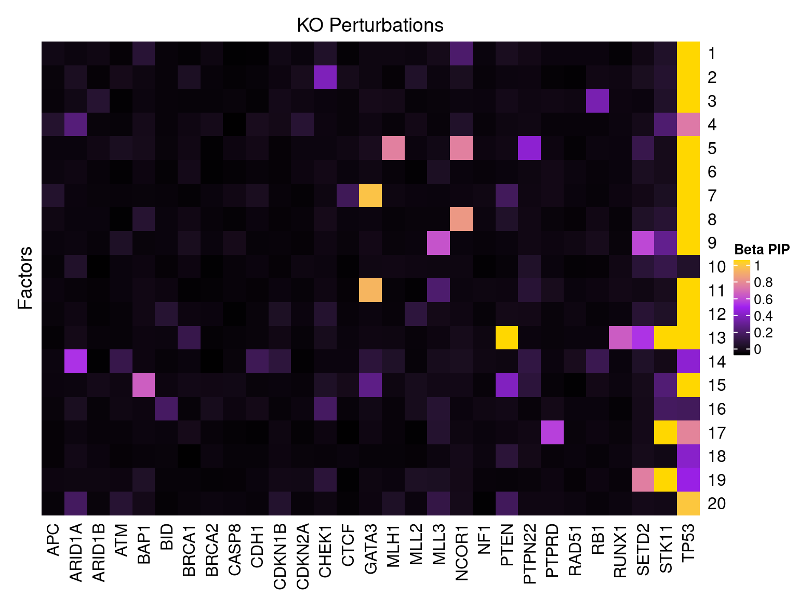
2.1.2 Factor ~ KO Posterior Association
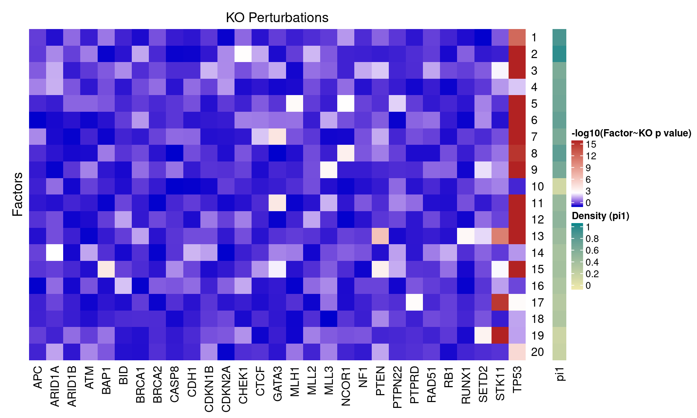
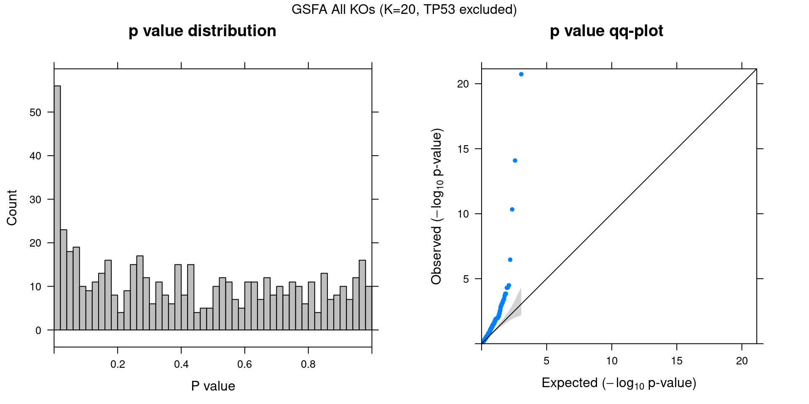
2.1.3 Beta PIP vs P-Value
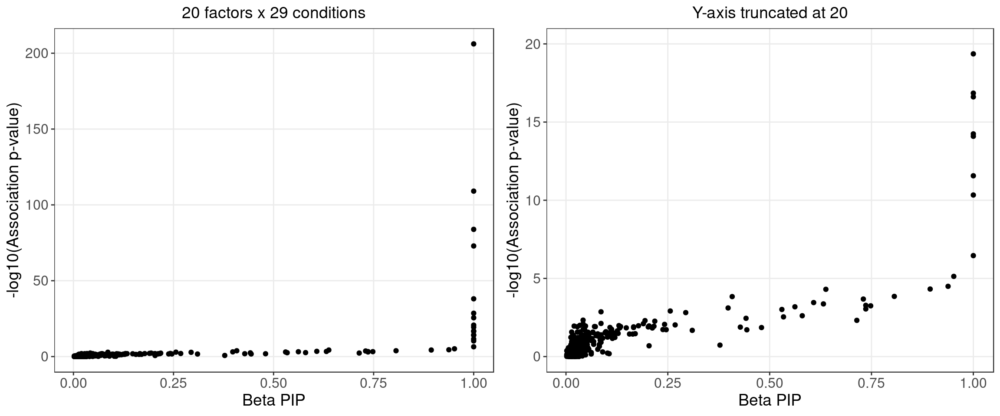
2.1.4 Local False Sign Rate (LFSR)
| KO | APC | ARID1A | ARID1B | ATM | BAP1 | BID | BRCA1 | BRCA2 | CASP8 | CDH1 |
| Num_genes | 0 | 0 | 0 | 0 | 0 | 0 | 0 | 0 | 0 | 0 |
| KO | CDKN1B | CDKN2A | CHEK1 | CTCF | GATA3 | MLH1 | MLL2 | MLL3 | NCOR1 | NF1 |
| Num_genes | 0 | 0 | 0 | 0 | 776 | 0 | 0 | 0 | 149 | 0 |
| KO | PTEN | PTPN22 | PTPRD | RAD51 | RB1 | RUNX1 | SETD2 | STK11 | TP53 | |
| Num_genes | 882 | 0 | 0 | 0 | 0 | 0 | 0 | 1370 | 5682 | NA |
2.2 Alternative Initializations and Chain Convergence
Other than initializing GSFA using truncated SVD, we also tried 2 runs with random initialization.
2.2.1 Association results for 2 randomly initialized GSFA runs
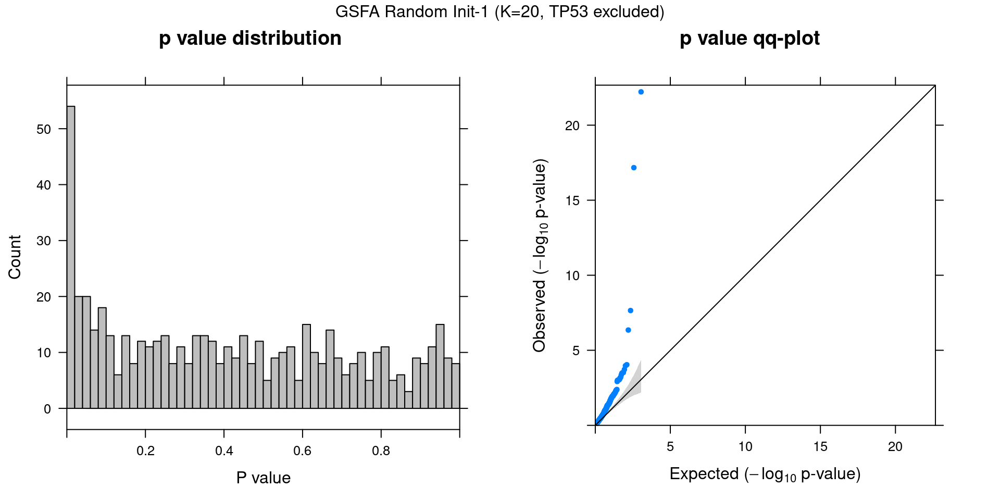
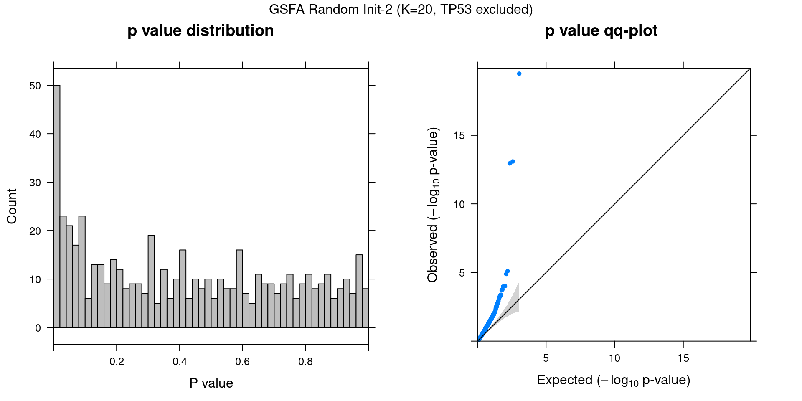
2.2.2 Chain mixing and convergence evaluation
To check the convergence of a certain scalar estimand, we adopt the potential scale reduction metric (\(\hat{R}\)) as described in Section 11.4 of Bayesian Data Analysis, 3rd ed.
The basic idea is to evaluate both the within-sequence variance and the between-sequence variance, and assess how close the two variances are.
If the potential scale reduction \(\hat{R}\) is close to 1, it means our inference has reached a good level of convergence;
if \(\hat{R}\) is high, then we have reason to believe that proceeding with further simulations may improve our inference on this estimand.
Since the order and sign of factors are intercahngeable, we focus on evaluating the estimation of all pairs of \(\beta_{m\cdot} \cdot W_{j\cdot}\) (a dot product that sums over all factors for each marker-gene pair).
We take the last 1000 stable samples from each of the 3 runs (1 SVD initialized, 2 randomly initialized). Each chain was further split into 2 halves, resulting in 6 chains with 500 iterations of samples each to assess convergence on.
The table below shows the summary of \(\hat{R}\) of \(\beta_{m\cdot} \cdot W_{j\cdot}\) across genes for a given KO condition \(m\):
| Min. | 1st Qu. | Median | Mean | 3rd Qu. | Max. | |
|---|---|---|---|---|---|---|
| APC | 0.999 | 1.00 | 1.00 | 1.00 | 1.00 | 1.01 |
| ARID1A | 0.999 | 1.00 | 1.01 | 1.01 | 1.01 | 1.08 |
| ARID1B | 0.999 | 1.00 | 1.00 | 1.00 | 1.01 | 1.01 |
| ATM | 0.999 | 1.00 | 1.00 | 1.00 | 1.00 | 1.04 |
| BAP1 | 0.999 | 1.00 | 1.00 | 1.01 | 1.01 | 1.10 |
| BID | 0.999 | 1.00 | 1.00 | 1.01 | 1.01 | 1.05 |
| BRCA1 | 0.999 | 1.00 | 1.00 | 1.01 | 1.01 | 1.02 |
| BRCA2 | 0.999 | 1.00 | 1.00 | 1.00 | 1.00 | 1.01 |
| CASP8 | 0.999 | 1.00 | 1.00 | 1.00 | 1.00 | 1.01 |
| CDH1 | 0.999 | 1.00 | 1.00 | 1.00 | 1.00 | 1.03 |
| CDKN1B | 0.999 | 1.00 | 1.00 | 1.00 | 1.01 | 1.02 |
| CDKN2A | 0.999 | 1.00 | 1.00 | 1.00 | 1.01 | 1.03 |
| CHEK1 | 0.999 | 1.01 | 1.02 | 1.02 | 1.02 | 1.12 |
| CTCF | 0.999 | 1.00 | 1.01 | 1.01 | 1.02 | 1.05 |
| GATA3 | 0.999 | 1.02 | 1.05 | 1.09 | 1.13 | 1.62 |
| MLH1 | 0.999 | 1.01 | 1.01 | 1.03 | 1.03 | 1.33 |
| MLL2 | 0.999 | 1.00 | 1.00 | 1.00 | 1.00 | 1.03 |
| MLL3 | 0.999 | 1.01 | 1.02 | 1.02 | 1.03 | 1.13 |
| NCOR1 | 0.999 | 1.01 | 1.03 | 1.04 | 1.05 | 1.29 |
| NF1 | 0.999 | 1.00 | 1.00 | 1.00 | 1.00 | 1.01 |
| PTEN | 0.999 | 1.01 | 1.04 | 1.07 | 1.10 | 2.13 |
| PTPN22 | 0.999 | 1.00 | 1.01 | 1.01 | 1.01 | 1.08 |
| PTPRD | 0.999 | 1.00 | 1.00 | 1.01 | 1.01 | 1.23 |
| RAD51 | 0.999 | 1.00 | 1.00 | 1.00 | 1.00 | 1.01 |
| RB1 | 0.999 | 1.00 | 1.01 | 1.01 | 1.02 | 1.04 |
| RUNX1 | 0.999 | 1.00 | 1.01 | 1.02 | 1.04 | 1.21 |
| SETD2 | 0.999 | 1.01 | 1.02 | 1.04 | 1.05 | 1.28 |
| STK11 | 0.999 | 1.02 | 1.04 | 1.06 | 1.09 | 1.54 |
| TP53 | 0.999 | 1.01 | 1.01 | 1.02 | 1.03 | 1.20 |
| offset | 1.000 | 1.05 | 1.10 | 1.12 | 1.17 | 1.65 |
2.2.3 Difference btw methods in factor estimation
For a pair of \(Z\) estimations from 2 inference methods, \(Z_1, Z_2\), we quantify the pairwise estimation difference as \(||Z_1Z_1^T - Z_2Z_2^T||_1/N^2\), where \(N\) is the number of rows (samples) in \(Z\).
Guided SVD vs Rand_01: 0.546
Guided SVD vs Rand_02: 0.441
Rand_01 vs Rand_02: 0.533
3 Unguided Result
3.1 Factor ~ KO Beta PIP
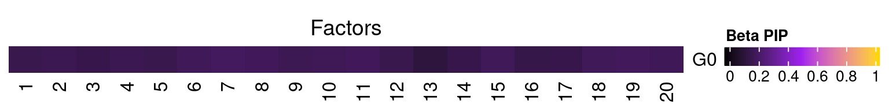
3.2 Factor ~ KO Posterior Association
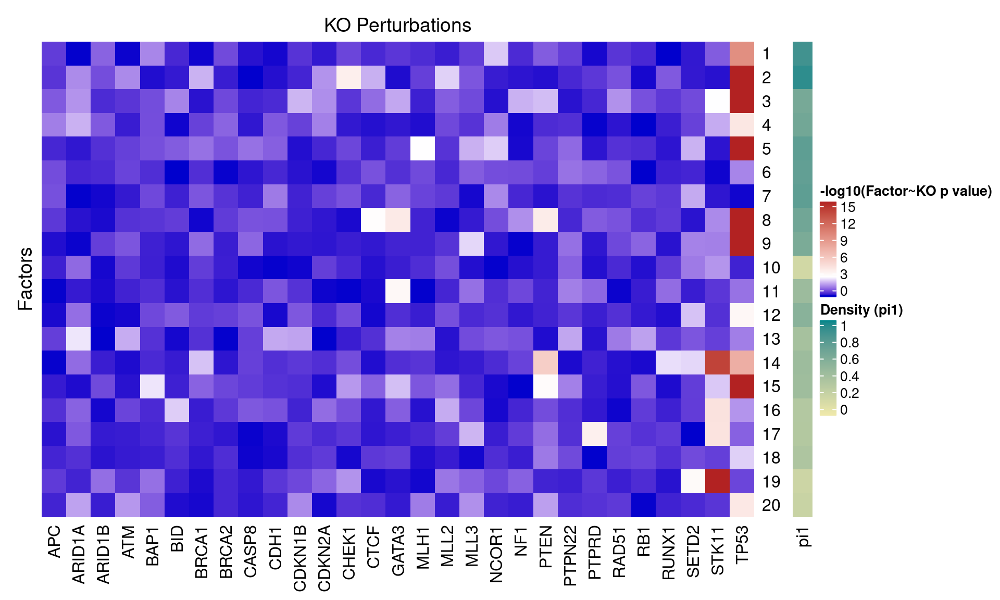
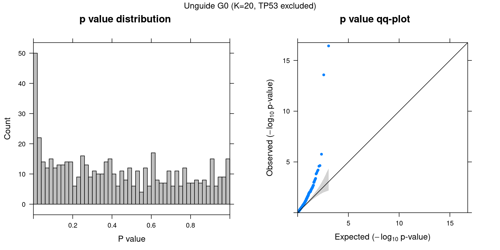
3.3 Unguided vs Guided
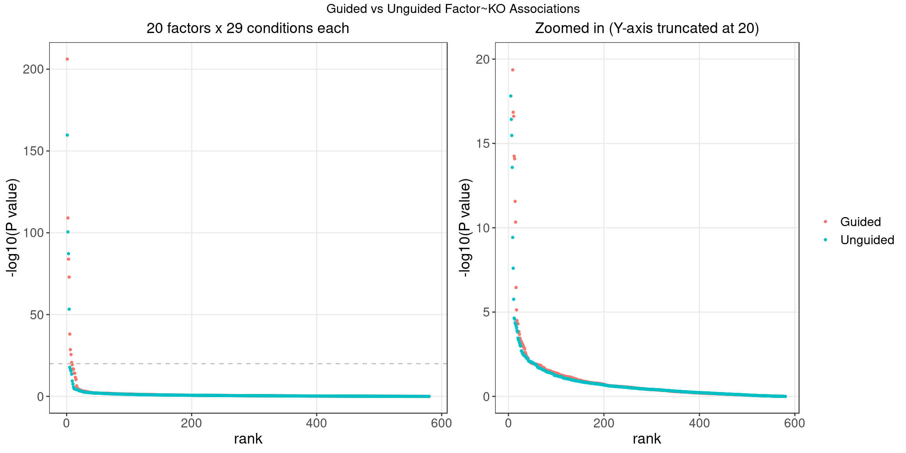
4 FLASH
4.1 Factor ~ KO Posterior Association

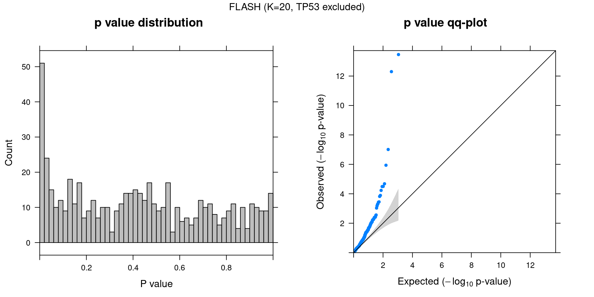
4.2 FLASH vs GSFA
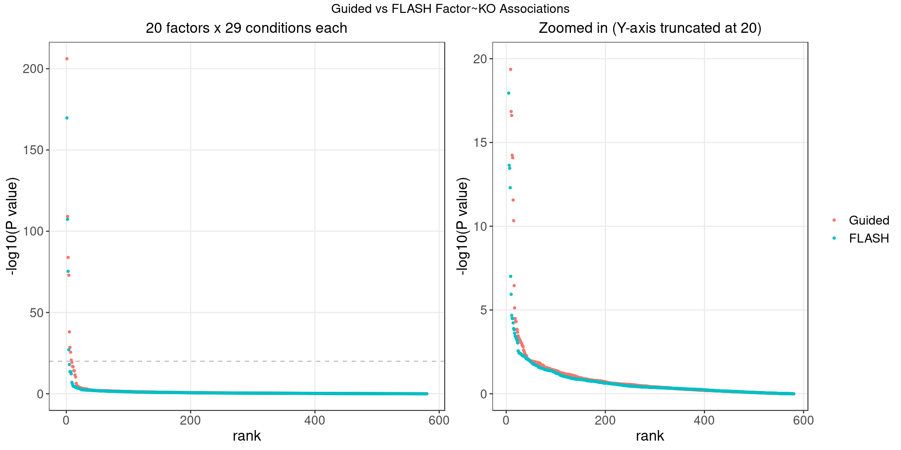
We matched the factors obtained from GFSA with those from FLASH, and conducted pairwise comparisons for both factors and gene loadings.
In the following heatmaps, factors are labeled by the KO condition(s) that they have an association p-value < 1e-3 with.

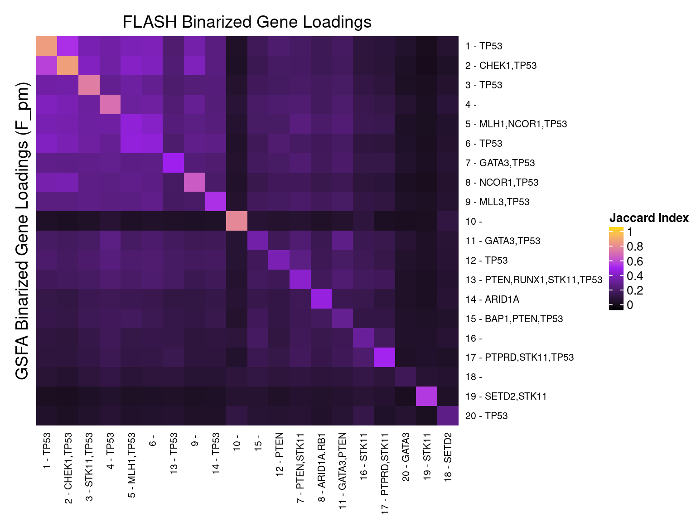
5 Gene Ontology Enrichment Analysis
Genes w/ non-zero loadings vs all genes selected for factor analysis.
GO category: Biological Process.
5.1 PIP cutoff at 0.95
GO terms that passed overrpresentation analysis fold change \(\geq\) 2 and q value \(<\) 0.05:
| ID | Description | GeneRatio | BgRatio | FoldChange | pvalue | qvalue | GS_size |
|---|---|---|---|---|---|---|---|
| GO:0006614 | SRP-dependent cotranslational protein targeting to membrane | 79/2605 | 91/7132 | 2.38 | 2.18e-23 | 8.69e-20 | 91 |
| GO:0006613 | cotranslational protein targeting to membrane | 81/2605 | 95/7132 | 2.33 | 7.57e-23 | 1.51e-19 | 95 |
| GO:0045047 | protein targeting to ER | 84/2605 | 101/7132 | 2.28 | 3.67e-22 | 4.88e-19 | 101 |
| GO:0072599 | establishment of protein localization to endoplasmic reticulum | 84/2605 | 104/7132 | 2.21 | 1.58e-20 | 1.58e-17 | 104 |
| GO:0000184 | nuclear-transcribed mRNA catabolic process, nonsense-mediated decay | 86/2605 | 108/7132 | 2.18 | 3.22e-20 | 2.57e-17 | 108 |
| GO:0070972 | protein localization to endoplasmic reticulum | 92/2605 | 122/7132 | 2.06 | 1.27e-18 | 8.41e-16 | 122 |
| GO:0031055 | chromatin remodeling at centromere | 24/2605 | 27/7132 | 2.43 | 2.41e-08 | 3.84e-06 | 27 |
| GO:0034508 | centromere complex assembly | 28/2605 | 34/7132 | 2.25 | 5.24e-08 | 8.04e-06 | 34 |
| GO:0034080 | CENP-A containing nucleosome assembly | 21/2605 | 23/7132 | 2.50 | 6.69e-08 | 9.20e-06 | 23 |
| GO:0061641 | CENP-A containing chromatin organization | 21/2605 | 23/7132 | 2.50 | 6.69e-08 | 9.20e-06 | 23 |
| GO:0043486 | histone exchange | 26/2605 | 31/7132 | 2.30 | 7.78e-08 | 1.03e-05 | 31 |
| GO:0006297 | nucleotide-excision repair, DNA gap filling | 16/2605 | 17/7132 | 2.58 | 1.09e-06 | 1.14e-04 | 17 |
| GO:0034724 | DNA replication-independent nucleosome organization | 25/2605 | 32/7132 | 2.14 | 1.81e-06 | 1.76e-04 | 32 |
| GO:0042776 | mitochondrial ATP synthesis coupled proton transport | 15/2605 | 16/7132 | 2.57 | 2.82e-06 | 2.56e-04 | 16 |
| GO:0006336 | DNA replication-independent nucleosome assembly | 24/2605 | 31/7132 | 2.12 | 3.92e-06 | 3.40e-04 | 31 |
| GO:0015985 | energy coupled proton transport, down electrochemical gradient | 17/2605 | 20/7132 | 2.33 | 1.15e-05 | 8.79e-04 | 20 |
| GO:0015986 | ATP synthesis coupled proton transport | 17/2605 | 20/7132 | 2.33 | 1.15e-05 | 8.79e-04 | 20 |
| GO:0051984 | positive regulation of chromosome segregation | 18/2605 | 23/7132 | 2.14 | 5.29e-05 | 3.18e-03 | 23 |
| GO:0032201 | telomere maintenance via semi-conservative replication | 13/2605 | 15/7132 | 2.37 | 9.31e-05 | 5.23e-03 | 15 |
| GO:0036297 | interstrand cross-link repair | 19/2605 | 26/7132 | 2.00 | 1.61e-04 | 8.24e-03 | 26 |
| GO:0033119 | negative regulation of RNA splicing | 16/2605 | 21/7132 | 2.09 | 2.46e-04 | 1.18e-02 | 21 |
| GO:0051383 | kinetochore organization | 13/2605 | 16/7132 | 2.22 | 3.29e-04 | 1.53e-02 | 16 |
| GO:0008608 | attachment of spindle microtubules to kinetochore | 14/2605 | 19/7132 | 2.02 | 1.09e-03 | 3.90e-02 | 19 |
| GO:0031581 | hemidesmosome assembly | 10/2605 | 12/7132 | 2.28 | 1.24e-03 | 4.21e-02 | 12 |
| GO:0031639 | plasminogen activation | 10/2605 | 12/7132 | 2.28 | 1.24e-03 | 4.21e-02 | 12 |
| GO:0050829 | defense response to Gram-negative bacterium | 10/2605 | 12/7132 | 2.28 | 1.24e-03 | 4.21e-02 | 12 |
| ID | Description | GeneRatio | BgRatio | FoldChange | pvalue | qvalue | GS_size |
|---|---|---|---|---|---|---|---|
| GO:0006613 | cotranslational protein targeting to membrane | 88/2693 | 95/7132 | 2.45 | 1.12e-29 | 1.98e-26 | 95 |
| GO:0070972 | protein localization to endoplasmic reticulum | 106/2693 | 122/7132 | 2.30 | 1.13e-29 | 1.98e-26 | 122 |
| GO:0045047 | protein targeting to ER | 92/2693 | 101/7132 | 2.41 | 1.59e-29 | 1.98e-26 | 101 |
| GO:0006614 | SRP-dependent cotranslational protein targeting to membrane | 85/2693 | 91/7132 | 2.47 | 2.09e-29 | 1.98e-26 | 91 |
| GO:0072599 | establishment of protein localization to endoplasmic reticulum | 93/2693 | 104/7132 | 2.37 | 2.52e-28 | 1.91e-25 | 104 |
| GO:0000184 | nuclear-transcribed mRNA catabolic process, nonsense-mediated decay | 89/2693 | 108/7132 | 2.18 | 1.04e-21 | 6.56e-19 | 108 |
| GO:0002576 | platelet degranulation | 44/2693 | 57/7132 | 2.04 | 1.31e-09 | 1.84e-07 | 57 |
| GO:0006120 | mitochondrial electron transport, NADH to ubiquinone | 36/2693 | 47/7132 | 2.03 | 6.17e-08 | 6.48e-06 | 47 |
| GO:0031581 | hemidesmosome assembly | 11/2693 | 12/7132 | 2.43 | 1.73e-04 | 6.27e-03 | 12 |
| GO:0031639 | plasminogen activation | 11/2693 | 12/7132 | 2.43 | 1.73e-04 | 6.27e-03 | 12 |
| GO:0030195 | negative regulation of blood coagulation | 14/2693 | 17/7132 | 2.18 | 2.19e-04 | 7.31e-03 | 17 |
| GO:1900047 | negative regulation of hemostasis | 14/2693 | 17/7132 | 2.18 | 2.19e-04 | 7.31e-03 | 17 |
| GO:0002931 | response to ischemia | 13/2693 | 16/7132 | 2.15 | 4.82e-04 | 1.36e-02 | 16 |
| GO:0002479 | antigen processing and presentation of exogenous peptide antigen via MHC class I, TAP-dependent | 14/2693 | 18/7132 | 2.06 | 6.40e-04 | 1.69e-02 | 18 |
| GO:0050819 | negative regulation of coagulation | 14/2693 | 18/7132 | 2.06 | 6.40e-04 | 1.69e-02 | 18 |
| GO:0061684 | chaperone-mediated autophagy | 9/2693 | 10/7132 | 2.38 | 1.02e-03 | 2.53e-02 | 10 |
| GO:0000028 | ribosomal small subunit assembly | 12/2693 | 15/7132 | 2.12 | 1.05e-03 | 2.56e-02 | 15 |
| GO:0030574 | collagen catabolic process | 10/2693 | 12/7132 | 2.21 | 1.67e-03 | 3.61e-02 | 12 |
| ID | Description | GeneRatio | BgRatio | FoldChange | pvalue | qvalue | GS_size |
|---|---|---|---|---|---|---|---|
| GO:0009435 | NAD biosynthetic process | 20/2606 | 26/7132 | 2.11 | 3.12e-05 | 0.00169 | 26 |
| GO:0001974 | blood vessel remodeling | 14/2606 | 16/7132 | 2.39 | 3.87e-05 | 0.00196 | 16 |
| GO:0061615 | glycolytic process through fructose-6-phosphate | 14/2606 | 16/7132 | 2.39 | 3.87e-05 | 0.00196 | 16 |
| GO:0061620 | glycolytic process through glucose-6-phosphate | 14/2606 | 16/7132 | 2.39 | 3.87e-05 | 0.00196 | 16 |
| GO:0006735 | NADH regeneration | 13/2606 | 15/7132 | 2.37 | 9.35e-05 | 0.00365 | 15 |
| GO:0061621 | canonical glycolysis | 13/2606 | 15/7132 | 2.37 | 9.35e-05 | 0.00365 | 15 |
| GO:0061718 | glucose catabolic process to pyruvate | 13/2606 | 15/7132 | 2.37 | 9.35e-05 | 0.00365 | 15 |
| GO:0018126 | protein hydroxylation | 15/2606 | 19/7132 | 2.16 | 1.98e-04 | 0.00651 | 19 |
| GO:0071295 | cellular response to vitamin | 10/2606 | 11/7132 | 2.49 | 3.09e-04 | 0.00943 | 11 |
| GO:0015949 | nucleobase-containing small molecule interconversion | 15/2606 | 20/7132 | 2.05 | 5.23e-04 | 0.01389 | 20 |
| GO:0055093 | response to hyperoxia | 11/2606 | 13/7132 | 2.32 | 5.30e-04 | 0.01394 | 13 |
| GO:1900115 | extracellular regulation of signal transduction | 9/2606 | 10/7132 | 2.46 | 7.73e-04 | 0.01714 | 10 |
| GO:1900116 | extracellular negative regulation of signal transduction | 9/2606 | 10/7132 | 2.46 | 7.73e-04 | 0.01714 | 10 |
| GO:0006007 | glucose catabolic process | 14/2606 | 19/7132 | 2.02 | 1.09e-03 | 0.02172 | 19 |
| GO:0006576 | cellular biogenic amine metabolic process | 14/2606 | 19/7132 | 2.02 | 1.09e-03 | 0.02172 | 19 |
| GO:0036296 | response to increased oxygen levels | 14/2606 | 19/7132 | 2.02 | 1.09e-03 | 0.02172 | 19 |
| GO:0031581 | hemidesmosome assembly | 10/2606 | 12/7132 | 2.28 | 1.24e-03 | 0.02361 | 12 |
| GO:0071709 | membrane assembly | 10/2606 | 12/7132 | 2.28 | 1.24e-03 | 0.02361 | 12 |
| GO:0072376 | protein activation cascade | 12/2606 | 16/7132 | 2.05 | 1.99e-03 | 0.03175 | 16 |
| ID | Description | GeneRatio | BgRatio | FoldChange | pvalue | qvalue | GS_size |
|---|---|---|---|---|---|---|---|
| GO:0042273 | ribosomal large subunit biogenesis | 56/2847 | 66/7132 | 2.13 | 5.24e-14 | 3.11e-11 | 66 |
| GO:0042274 | ribosomal small subunit biogenesis | 49/2847 | 60/7132 | 2.05 | 3.52e-11 | 1.63e-08 | 60 |
| GO:0000470 | maturation of LSU-rRNA | 17/2847 | 18/7132 | 2.37 | 1.81e-06 | 2.79e-04 | 18 |
| GO:0000463 | maturation of LSU-rRNA from tricistronic rRNA transcript (SSU-rRNA, 5.8S rRNA, LSU-rRNA) | 11/2847 | 11/7132 | 2.51 | 4.05e-05 | 4.21e-03 | 11 |
| GO:1902570 | protein localization to nucleolus | 10/2847 | 10/7132 | 2.51 | 1.02e-04 | 9.61e-03 | 10 |
| GO:1904874 | positive regulation of telomerase RNA localization to Cajal body | 13/2847 | 15/7132 | 2.17 | 2.69e-04 | 2.28e-02 | 15 |
| GO:0000466 | maturation of 5.8S rRNA from tricistronic rRNA transcript (SSU-rRNA, 5.8S rRNA, LSU-rRNA) | 16/2847 | 20/7132 | 2.00 | 3.03e-04 | 2.47e-02 | 20 |
| GO:0051131 | chaperone-mediated protein complex assembly | 11/2847 | 12/7132 | 2.30 | 3.09e-04 | 2.47e-02 | 12 |
| ID | Description | GeneRatio | BgRatio | FoldChange | pvalue | qvalue | GS_size |
|---|---|---|---|---|---|---|---|
| GO:0006119 | oxidative phosphorylation | 60/1921 | 110/7132 | 2.03 | 6.48e-10 | 3.06e-07 | 110 |
| GO:0045047 | protein targeting to ER | 56/1921 | 101/7132 | 2.06 | 1.06e-09 | 4.41e-07 | 101 |
| GO:0072599 | establishment of protein localization to endoplasmic reticulum | 57/1921 | 104/7132 | 2.03 | 1.37e-09 | 4.69e-07 | 104 |
| GO:0042773 | ATP synthesis coupled electron transport | 47/1921 | 80/7132 | 2.18 | 1.80e-09 | 4.85e-07 | 80 |
| GO:0006613 | cotranslational protein targeting to membrane | 53/1921 | 95/7132 | 2.07 | 2.22e-09 | 5.16e-07 | 95 |
| GO:0006614 | SRP-dependent cotranslational protein targeting to membrane | 51/1921 | 91/7132 | 2.08 | 3.60e-09 | 7.55e-07 | 91 |
| GO:0042775 | mitochondrial ATP synthesis coupled electron transport | 46/1921 | 79/7132 | 2.16 | 4.01e-09 | 7.56e-07 | 79 |
| GO:0031424 | keratinization | 27/1921 | 40/7132 | 2.51 | 9.27e-08 | 9.21e-06 | 40 |
| GO:0070268 | cornification | 22/1921 | 31/7132 | 2.63 | 3.83e-07 | 3.21e-05 | 31 |
| GO:0010257 | NADH dehydrogenase complex assembly | 36/1921 | 64/7132 | 2.09 | 6.43e-07 | 5.17e-05 | 64 |
| GO:0032981 | mitochondrial respiratory chain complex I assembly | 36/1921 | 64/7132 | 2.09 | 6.43e-07 | 5.17e-05 | 64 |
| GO:0002576 | platelet degranulation | 33/1921 | 57/7132 | 2.15 | 7.69e-07 | 6.05e-05 | 57 |
| GO:0016126 | sterol biosynthetic process | 29/1921 | 49/7132 | 2.20 | 1.93e-06 | 1.35e-04 | 49 |
| GO:0006120 | mitochondrial electron transport, NADH to ubiquinone | 28/1921 | 47/7132 | 2.21 | 2.42e-06 | 1.63e-04 | 47 |
| GO:1902653 | secondary alcohol biosynthetic process | 28/1921 | 47/7132 | 2.21 | 2.42e-06 | 1.63e-04 | 47 |
| GO:0006695 | cholesterol biosynthetic process | 27/1921 | 46/7132 | 2.18 | 5.45e-06 | 3.32e-04 | 46 |
| GO:0072376 | protein activation cascade | 13/1921 | 16/7132 | 3.02 | 9.06e-06 | 5.34e-04 | 16 |
| GO:1902930 | regulation of alcohol biosynthetic process | 22/1921 | 37/7132 | 2.21 | 3.07e-05 | 1.59e-03 | 37 |
| GO:0045685 | regulation of glial cell differentiation | 18/1921 | 28/7132 | 2.39 | 3.76e-05 | 1.87e-03 | 28 |
| GO:0050810 | regulation of steroid biosynthetic process | 25/1921 | 45/7132 | 2.06 | 4.44e-05 | 2.05e-03 | 45 |
| GO:0050818 | regulation of coagulation | 17/1921 | 26/7132 | 2.43 | 4.51e-05 | 2.05e-03 | 26 |
| GO:0030193 | regulation of blood coagulation | 16/1921 | 24/7132 | 2.48 | 5.34e-05 | 2.34e-03 | 24 |
| GO:1900046 | regulation of hemostasis | 16/1921 | 24/7132 | 2.48 | 5.34e-05 | 2.34e-03 | 24 |
| GO:0042730 | fibrinolysis | 9/1921 | 10/7132 | 3.34 | 5.58e-05 | 2.39e-03 | 10 |
| GO:0045540 | regulation of cholesterol biosynthetic process | 19/1921 | 31/7132 | 2.28 | 6.00e-05 | 2.49e-03 | 31 |
| GO:0106118 | regulation of sterol biosynthetic process | 19/1921 | 31/7132 | 2.28 | 6.00e-05 | 2.49e-03 | 31 |
| GO:0031639 | plasminogen activation | 10/1921 | 12/7132 | 3.09 | 7.46e-05 | 2.96e-03 | 12 |
| GO:0050819 | negative regulation of coagulation | 13/1921 | 18/7132 | 2.68 | 7.85e-05 | 3.03e-03 | 18 |
| GO:0061615 | glycolytic process through fructose-6-phosphate | 12/1921 | 16/7132 | 2.78 | 8.33e-05 | 3.08e-03 | 16 |
| GO:0061620 | glycolytic process through glucose-6-phosphate | 12/1921 | 16/7132 | 2.78 | 8.33e-05 | 3.08e-03 | 16 |
| GO:0046365 | monosaccharide catabolic process | 20/1921 | 34/7132 | 2.18 | 8.75e-05 | 3.21e-03 | 34 |
| GO:0019320 | hexose catabolic process | 17/1921 | 27/7132 | 2.34 | 9.13e-05 | 3.28e-03 | 27 |
| GO:0014013 | regulation of gliogenesis | 24/1921 | 44/7132 | 2.03 | 9.36e-05 | 3.33e-03 | 44 |
| GO:0090181 | regulation of cholesterol metabolic process | 21/1921 | 37/7132 | 2.11 | 1.20e-04 | 4.00e-03 | 37 |
| GO:0033628 | regulation of cell adhesion mediated by integrin | 14/1921 | 21/7132 | 2.48 | 1.60e-04 | 5.08e-03 | 21 |
| GO:0033627 | cell adhesion mediated by integrin | 17/1921 | 28/7132 | 2.25 | 1.74e-04 | 5.48e-03 | 28 |
| GO:0030195 | negative regulation of blood coagulation | 12/1921 | 17/7132 | 2.62 | 2.14e-04 | 6.45e-03 | 17 |
| GO:1900047 | negative regulation of hemostasis | 12/1921 | 17/7132 | 2.62 | 2.14e-04 | 6.45e-03 | 17 |
| GO:0006735 | NADH regeneration | 11/1921 | 15/7132 | 2.72 | 2.35e-04 | 6.82e-03 | 15 |
| GO:0018149 | peptide cross-linking | 11/1921 | 15/7132 | 2.72 | 2.35e-04 | 6.82e-03 | 15 |
| GO:0048713 | regulation of oligodendrocyte differentiation | 11/1921 | 15/7132 | 2.72 | 2.35e-04 | 6.82e-03 | 15 |
| GO:0061621 | canonical glycolysis | 11/1921 | 15/7132 | 2.72 | 2.35e-04 | 6.82e-03 | 15 |
| GO:0061718 | glucose catabolic process to pyruvate | 11/1921 | 15/7132 | 2.72 | 2.35e-04 | 6.82e-03 | 15 |
| GO:0007492 | endoderm development | 19/1921 | 34/7132 | 2.07 | 3.31e-04 | 9.06e-03 | 34 |
| GO:0015985 | energy coupled proton transport, down electrochemical gradient | 13/1921 | 20/7132 | 2.41 | 4.03e-04 | 1.06e-02 | 20 |
| GO:0015986 | ATP synthesis coupled proton transport | 13/1921 | 20/7132 | 2.41 | 4.03e-04 | 1.06e-02 | 20 |
| GO:0050710 | negative regulation of cytokine secretion | 12/1921 | 18/7132 | 2.48 | 4.84e-04 | 1.24e-02 | 18 |
| GO:0032612 | interleukin-1 production | 17/1921 | 30/7132 | 2.10 | 5.47e-04 | 1.40e-02 | 30 |
| GO:0042776 | mitochondrial ATP synthesis coupled proton transport | 11/1921 | 16/7132 | 2.55 | 5.69e-04 | 1.43e-02 | 16 |
| GO:0032652 | regulation of interleukin-1 production | 16/1921 | 28/7132 | 2.12 | 7.03e-04 | 1.70e-02 | 28 |
| GO:0061045 | negative regulation of wound healing | 16/1921 | 28/7132 | 2.12 | 7.03e-04 | 1.70e-02 | 28 |
| GO:0002920 | regulation of humoral immune response | 9/1921 | 12/7132 | 2.78 | 7.08e-04 | 1.70e-02 | 12 |
| GO:0048710 | regulation of astrocyte differentiation | 9/1921 | 12/7132 | 2.78 | 7.08e-04 | 1.70e-02 | 12 |
| GO:0030449 | regulation of complement activation | 8/1921 | 10/7132 | 2.97 | 7.16e-04 | 1.70e-02 | 10 |
| GO:0061684 | chaperone-mediated autophagy | 8/1921 | 10/7132 | 2.97 | 7.16e-04 | 1.70e-02 | 10 |
| GO:2000257 | regulation of protein activation cascade | 8/1921 | 10/7132 | 2.97 | 7.16e-04 | 1.70e-02 | 10 |
| GO:0001657 | ureteric bud development | 15/1921 | 26/7132 | 2.14 | 9.01e-04 | 2.05e-02 | 26 |
| GO:0014015 | positive regulation of gliogenesis | 15/1921 | 26/7132 | 2.14 | 9.01e-04 | 2.05e-02 | 26 |
| GO:0006007 | glucose catabolic process | 12/1921 | 19/7132 | 2.34 | 9.92e-04 | 2.15e-02 | 19 |
| GO:0031343 | positive regulation of cell killing | 12/1921 | 19/7132 | 2.34 | 9.92e-04 | 2.15e-02 | 19 |
| GO:0001912 | positive regulation of leukocyte mediated cytotoxicity | 11/1921 | 17/7132 | 2.40 | 1.22e-03 | 2.53e-02 | 17 |
| GO:0072163 | mesonephric epithelium development | 15/1921 | 27/7132 | 2.06 | 1.53e-03 | 3.03e-02 | 27 |
| GO:0072164 | mesonephric tubule development | 15/1921 | 27/7132 | 2.06 | 1.53e-03 | 3.03e-02 | 27 |
| GO:0021675 | nerve development | 12/1921 | 20/7132 | 2.23 | 1.88e-03 | 3.56e-02 | 20 |
| GO:0006956 | complement activation | 8/1921 | 11/7132 | 2.70 | 2.00e-03 | 3.72e-02 | 11 |
| GO:0001706 | endoderm formation | 13/1921 | 23/7132 | 2.10 | 2.56e-03 | 4.55e-02 | 23 |
| GO:0031341 | regulation of cell killing | 13/1921 | 23/7132 | 2.10 | 2.56e-03 | 4.55e-02 | 23 |
| ID | Description | GeneRatio | BgRatio | FoldChange | pvalue | qvalue | GS_size |
|---|---|---|---|---|---|---|---|
| GO:0070203 | regulation of establishment of protein localization to telomere | 10/2434 | 11/7132 | 2.66 | 0.000161 | 0.0142 | 11 |
| GO:1904816 | positive regulation of protein localization to chromosome, telomeric region | 10/2434 | 11/7132 | 2.66 | 0.000161 | 0.0142 | 11 |
| GO:0070200 | establishment of protein localization to telomere | 11/2434 | 13/7132 | 2.48 | 0.000267 | 0.0198 | 13 |
| GO:1904814 | regulation of protein localization to chromosome, telomeric region | 11/2434 | 13/7132 | 2.48 | 0.000267 | 0.0198 | 13 |
| GO:1903405 | protein localization to nuclear body | 9/2434 | 10/7132 | 2.64 | 0.000431 | 0.0249 | 10 |
| GO:1904851 | positive regulation of establishment of protein localization to telomere | 9/2434 | 10/7132 | 2.64 | 0.000431 | 0.0249 | 10 |
| GO:1904867 | protein localization to Cajal body | 9/2434 | 10/7132 | 2.64 | 0.000431 | 0.0249 | 10 |
| GO:0018279 | protein N-linked glycosylation via asparagine | 14/2434 | 19/7132 | 2.16 | 0.000494 | 0.0267 | 19 |
| GO:0051131 | chaperone-mediated protein complex assembly | 10/2434 | 12/7132 | 2.44 | 0.000668 | 0.0317 | 12 |
| GO:0070202 | regulation of establishment of protein localization to chromosome | 10/2434 | 12/7132 | 2.44 | 0.000668 | 0.0317 | 12 |
| GO:1990173 | protein localization to nucleoplasm | 10/2434 | 12/7132 | 2.44 | 0.000668 | 0.0317 | 12 |
| GO:0032885 | regulation of polysaccharide biosynthetic process | 11/2434 | 14/7132 | 2.30 | 0.000858 | 0.0353 | 14 |
| GO:0032881 | regulation of polysaccharide metabolic process | 12/2434 | 16/7132 | 2.20 | 0.000996 | 0.0396 | 16 |
| GO:0090670 | RNA localization to Cajal body | 13/2434 | 18/7132 | 2.12 | 0.001083 | 0.0402 | 18 |
| GO:0090671 | telomerase RNA localization to Cajal body | 13/2434 | 18/7132 | 2.12 | 0.001083 | 0.0402 | 18 |
| GO:0090672 | telomerase RNA localization | 13/2434 | 18/7132 | 2.12 | 0.001083 | 0.0402 | 18 |
| GO:0090685 | RNA localization to nucleus | 13/2434 | 18/7132 | 2.12 | 0.001083 | 0.0402 | 18 |
| GO:0018196 | peptidyl-asparagine modification | 14/2434 | 20/7132 | 2.05 | 0.001129 | 0.0415 | 20 |
| ID | Description | GeneRatio | BgRatio | FoldChange | pvalue | qvalue | GS_size |
|---|---|---|---|---|---|---|---|
| GO:0006613 | cotranslational protein targeting to membrane | 64/1819 | 95/7132 | 2.64 | 7.54e-18 | 2.02e-14 | 95 |
| GO:0006614 | SRP-dependent cotranslational protein targeting to membrane | 62/1819 | 91/7132 | 2.67 | 1.05e-17 | 2.02e-14 | 91 |
| GO:0045047 | protein targeting to ER | 66/1819 | 101/7132 | 2.56 | 2.57e-17 | 3.29e-14 | 101 |
| GO:0072599 | establishment of protein localization to endoplasmic reticulum | 66/1819 | 104/7132 | 2.49 | 2.39e-16 | 2.30e-13 | 104 |
| GO:0000184 | nuclear-transcribed mRNA catabolic process, nonsense-mediated decay | 67/1819 | 108/7132 | 2.43 | 7.67e-16 | 5.07e-13 | 108 |
| GO:0006612 | protein targeting to membrane | 81/1819 | 142/7132 | 2.24 | 7.90e-16 | 5.07e-13 | 142 |
| GO:0070972 | protein localization to endoplasmic reticulum | 70/1819 | 122/7132 | 2.25 | 5.04e-14 | 2.77e-11 | 122 |
| GO:0008584 | male gonad development | 30/1819 | 57/7132 | 2.06 | 1.01e-05 | 7.20e-04 | 57 |
| GO:0046546 | development of primary male sexual characteristics | 30/1819 | 58/7132 | 2.03 | 1.59e-05 | 1.07e-03 | 58 |
| GO:0002548 | monocyte chemotaxis | 10/1819 | 12/7132 | 3.27 | 4.47e-05 | 2.57e-03 | 12 |
| GO:0002688 | regulation of leukocyte chemotaxis | 19/1819 | 33/7132 | 2.26 | 8.83e-05 | 4.58e-03 | 33 |
| GO:0050918 | positive chemotaxis | 13/1819 | 19/7132 | 2.68 | 1.02e-04 | 5.03e-03 | 19 |
| GO:0071674 | mononuclear cell migration | 13/1819 | 19/7132 | 2.68 | 1.02e-04 | 5.03e-03 | 19 |
| GO:0071622 | regulation of granulocyte chemotaxis | 9/1819 | 11/7132 | 3.21 | 1.47e-04 | 6.75e-03 | 11 |
| GO:0050921 | positive regulation of chemotaxis | 22/1819 | 42/7132 | 2.05 | 1.68e-04 | 7.37e-03 | 42 |
| GO:0015985 | energy coupled proton transport, down electrochemical gradient | 13/1819 | 20/7132 | 2.55 | 2.24e-04 | 9.25e-03 | 20 |
| GO:0015986 | ATP synthesis coupled proton transport | 13/1819 | 20/7132 | 2.55 | 2.24e-04 | 9.25e-03 | 20 |
| GO:0070987 | error-free translesion synthesis | 12/1819 | 18/7132 | 2.61 | 2.78e-04 | 1.12e-02 | 18 |
| GO:0042776 | mitochondrial ATP synthesis coupled proton transport | 11/1819 | 16/7132 | 2.70 | 3.39e-04 | 1.29e-02 | 16 |
| GO:0071675 | regulation of mononuclear cell migration | 10/1819 | 14/7132 | 2.80 | 4.02e-04 | 1.49e-02 | 14 |
| GO:0006297 | nucleotide-excision repair, DNA gap filling | 11/1819 | 17/7132 | 2.54 | 7.40e-04 | 2.48e-02 | 17 |
| GO:0019985 | translesion synthesis | 17/1819 | 32/7132 | 2.08 | 7.48e-04 | 2.48e-02 | 32 |
| GO:0071621 | granulocyte chemotaxis | 15/1819 | 27/7132 | 2.18 | 8.27e-04 | 2.63e-02 | 27 |
| GO:0000028 | ribosomal small subunit assembly | 10/1819 | 15/7132 | 2.61 | 9.31e-04 | 2.87e-02 | 15 |
| GO:0032201 | telomere maintenance via semi-conservative replication | 10/1819 | 15/7132 | 2.61 | 9.31e-04 | 2.87e-02 | 15 |
| GO:0010939 | regulation of necrotic cell death | 12/1819 | 20/7132 | 2.35 | 1.12e-03 | 3.28e-02 | 20 |
| GO:0002690 | positive regulation of leukocyte chemotaxis | 15/1819 | 28/7132 | 2.10 | 1.37e-03 | 3.84e-02 | 28 |
| GO:0031638 | zymogen activation | 15/1819 | 28/7132 | 2.10 | 1.37e-03 | 3.84e-02 | 28 |
| GO:0097530 | granulocyte migration | 16/1819 | 31/7132 | 2.02 | 1.60e-03 | 4.33e-02 | 31 |
| GO:0009435 | NAD biosynthetic process | 14/1819 | 26/7132 | 2.11 | 1.85e-03 | 4.62e-02 | 26 |
| GO:0034308 | primary alcohol metabolic process | 14/1819 | 26/7132 | 2.11 | 1.85e-03 | 4.62e-02 | 26 |
| GO:0061844 | antimicrobial humoral immune response mediated by antimicrobial peptide | 10/1819 | 16/7132 | 2.45 | 1.92e-03 | 4.70e-02 | 16 |
| GO:1903580 | positive regulation of ATP metabolic process | 10/1819 | 16/7132 | 2.45 | 1.92e-03 | 4.70e-02 | 16 |
| ID | Description | GeneRatio | BgRatio | FoldChange | pvalue | qvalue | GS_size |
|---|---|---|---|---|---|---|---|
| GO:0006614 | SRP-dependent cotranslational protein targeting to membrane | 67/457 | 91/7132 | 11.50 | 1.46e-61 | 4.20e-58 | 91 |
| GO:0045047 | protein targeting to ER | 70/457 | 101/7132 | 10.80 | 2.68e-61 | 4.20e-58 | 101 |
| GO:0006613 | cotranslational protein targeting to membrane | 68/457 | 95/7132 | 11.20 | 4.39e-61 | 4.59e-58 | 95 |
| GO:0072599 | establishment of protein localization to endoplasmic reticulum | 70/457 | 104/7132 | 10.50 | 6.89e-60 | 5.40e-57 | 104 |
| GO:0070972 | protein localization to endoplasmic reticulum | 73/457 | 122/7132 | 9.34 | 6.19e-57 | 3.88e-54 | 122 |
| GO:0000184 | nuclear-transcribed mRNA catabolic process, nonsense-mediated decay | 68/457 | 108/7132 | 9.83 | 3.62e-55 | 1.89e-52 | 108 |
| GO:0006413 | translational initiation | 82/457 | 168/7132 | 7.62 | 2.01e-54 | 9.02e-52 | 168 |
| GO:0006612 | protein targeting to membrane | 70/457 | 142/7132 | 7.69 | 1.04e-46 | 4.07e-44 | 142 |
| GO:0000956 | nuclear-transcribed mRNA catabolic process | 70/457 | 176/7132 | 6.21 | 6.02e-39 | 2.10e-36 | 176 |
| GO:0006402 | mRNA catabolic process | 79/457 | 246/7132 | 5.01 | 4.15e-36 | 1.30e-33 | 246 |
| GO:0006412 | translation | 112/457 | 496/7132 | 3.52 | 2.57e-35 | 7.34e-33 | 496 |
| GO:0090150 | establishment of protein localization to membrane | 74/457 | 221/7132 | 5.23 | 3.49e-35 | 9.13e-33 | 221 |
| GO:0006401 | RNA catabolic process | 79/457 | 268/7132 | 4.60 | 3.89e-33 | 9.38e-31 | 268 |
| GO:0006605 | protein targeting | 80/457 | 311/7132 | 4.01 | 5.35e-29 | 1.20e-26 | 311 |
| GO:0034655 | nucleobase-containing compound catabolic process | 87/457 | 375/7132 | 3.62 | 5.16e-28 | 1.08e-25 | 375 |
| GO:0072657 | protein localization to membrane | 84/457 | 354/7132 | 3.70 | 9.16e-28 | 1.79e-25 | 354 |
| GO:0046700 | heterocycle catabolic process | 87/457 | 383/7132 | 3.54 | 2.66e-27 | 4.91e-25 | 383 |
| GO:0044270 | cellular nitrogen compound catabolic process | 87/457 | 385/7132 | 3.53 | 3.98e-27 | 6.93e-25 | 385 |
| GO:1901361 | organic cyclic compound catabolic process | 88/457 | 398/7132 | 3.45 | 1.03e-26 | 1.70e-24 | 398 |
| GO:0019439 | aromatic compound catabolic process | 87/457 | 392/7132 | 3.46 | 1.59e-26 | 2.49e-24 | 392 |
| GO:0072594 | establishment of protein localization to organelle | 85/457 | 399/7132 | 3.32 | 1.37e-24 | 2.05e-22 | 399 |
| GO:0002181 | cytoplasmic translation | 34/457 | 78/7132 | 6.80 | 8.57e-21 | 1.22e-18 | 78 |
| GO:0022613 | ribonucleoprotein complex biogenesis | 60/457 | 379/7132 | 2.47 | 2.39e-11 | 3.27e-09 | 379 |
| GO:0042255 | ribosome assembly | 20/457 | 56/7132 | 5.57 | 8.23e-11 | 1.08e-08 | 56 |
| GO:0006119 | oxidative phosphorylation | 28/457 | 110/7132 | 3.97 | 1.38e-10 | 1.73e-08 | 110 |
| GO:0022618 | ribonucleoprotein complex assembly | 39/457 | 198/7132 | 3.07 | 1.52e-10 | 1.84e-08 | 198 |
| GO:0009205 | purine ribonucleoside triphosphate metabolic process | 39/457 | 200/7132 | 3.04 | 2.09e-10 | 2.43e-08 | 200 |
| GO:0046034 | ATP metabolic process | 36/457 | 178/7132 | 3.16 | 3.71e-10 | 4.16e-08 | 178 |
| GO:0009199 | ribonucleoside triphosphate metabolic process | 39/457 | 205/7132 | 2.97 | 4.50e-10 | 4.86e-08 | 205 |
| GO:0009126 | purine nucleoside monophosphate metabolic process | 39/457 | 206/7132 | 2.95 | 5.22e-10 | 5.12e-08 | 206 |
| GO:0009144 | purine nucleoside triphosphate metabolic process | 39/457 | 206/7132 | 2.95 | 5.22e-10 | 5.12e-08 | 206 |
| GO:0009167 | purine ribonucleoside monophosphate metabolic process | 39/457 | 206/7132 | 2.95 | 5.22e-10 | 5.12e-08 | 206 |
| GO:0071826 | ribonucleoprotein complex subunit organization | 39/457 | 210/7132 | 2.90 | 9.40e-10 | 8.94e-08 | 210 |
| GO:1902600 | proton transmembrane transport | 23/457 | 83/7132 | 4.32 | 1.04e-09 | 9.59e-08 | 83 |
| GO:0009123 | nucleoside monophosphate metabolic process | 41/457 | 232/7132 | 2.76 | 1.63e-09 | 1.46e-07 | 232 |
| GO:0009161 | ribonucleoside monophosphate metabolic process | 39/457 | 218/7132 | 2.79 | 2.90e-09 | 2.52e-07 | 218 |
| GO:0009141 | nucleoside triphosphate metabolic process | 39/457 | 220/7132 | 2.77 | 3.80e-09 | 3.22e-07 | 220 |
| GO:0042254 | ribosome biogenesis | 41/457 | 244/7132 | 2.62 | 7.61e-09 | 6.28e-07 | 244 |
| GO:0022900 | electron transport chain | 29/457 | 140/7132 | 3.23 | 1.15e-08 | 9.22e-07 | 140 |
| GO:0006091 | generation of precursor metabolites and energy | 45/457 | 300/7132 | 2.34 | 5.02e-08 | 3.94e-06 | 300 |
| GO:0000028 | ribosomal small subunit assembly | 9/457 | 15/7132 | 9.36 | 5.97e-08 | 4.57e-06 | 15 |
| GO:0042775 | mitochondrial ATP synthesis coupled electron transport | 20/457 | 79/7132 | 3.95 | 6.95e-08 | 5.19e-06 | 79 |
| GO:0009150 | purine ribonucleotide metabolic process | 45/457 | 304/7132 | 2.31 | 7.53e-08 | 5.49e-06 | 304 |
| GO:0042773 | ATP synthesis coupled electron transport | 20/457 | 80/7132 | 3.90 | 8.73e-08 | 6.22e-06 | 80 |
| GO:0042273 | ribosomal large subunit biogenesis | 18/457 | 66/7132 | 4.26 | 9.21e-08 | 6.42e-06 | 66 |
| GO:0001732 | formation of cytoplasmic translation initiation complex | 8/457 | 12/7132 | 10.40 | 1.05e-07 | 7.19e-06 | 12 |
| GO:0006163 | purine nucleotide metabolic process | 46/457 | 320/7132 | 2.24 | 1.31e-07 | 8.76e-06 | 320 |
| GO:0072521 | purine-containing compound metabolic process | 47/457 | 336/7132 | 2.18 | 2.19e-07 | 1.43e-05 | 336 |
| GO:0009259 | ribonucleotide metabolic process | 45/457 | 318/7132 | 2.21 | 2.88e-07 | 1.85e-05 | 318 |
| GO:0002183 | cytoplasmic translational initiation | 11/457 | 27/7132 | 6.36 | 3.39e-07 | 2.12e-05 | 27 |
| GO:0042274 | ribosomal small subunit biogenesis | 16/457 | 60/7132 | 4.16 | 6.74e-07 | 4.14e-05 | 60 |
| GO:0006364 | rRNA processing | 30/457 | 179/7132 | 2.62 | 8.97e-07 | 5.41e-05 | 179 |
| GO:0022904 | respiratory electron transport chain | 20/457 | 92/7132 | 3.39 | 1.00e-06 | 5.93e-05 | 92 |
| GO:0019693 | ribose phosphate metabolic process | 45/457 | 333/7132 | 2.11 | 1.09e-06 | 6.31e-05 | 333 |
| GO:0015672 | monovalent inorganic cation transport | 28/457 | 167/7132 | 2.62 | 2.07e-06 | 1.18e-04 | 167 |
| GO:0016072 | rRNA metabolic process | 31/457 | 208/7132 | 2.33 | 7.59e-06 | 4.25e-04 | 208 |
| GO:0015985 | energy coupled proton transport, down electrochemical gradient | 8/457 | 20/7132 | 6.24 | 1.70e-05 | 8.72e-04 | 20 |
| GO:0015986 | ATP synthesis coupled proton transport | 8/457 | 20/7132 | 6.24 | 1.70e-05 | 8.72e-04 | 20 |
| GO:0045333 | cellular respiration | 24/457 | 148/7132 | 2.53 | 2.00e-05 | 1.01e-03 | 148 |
| GO:0098662 | inorganic cation transmembrane transport | 33/457 | 240/7132 | 2.15 | 2.19e-05 | 1.09e-03 | 240 |
| GO:0006123 | mitochondrial electron transport, cytochrome c to oxygen | 6/457 | 11/7132 | 8.51 | 2.35e-05 | 1.13e-03 | 11 |
| GO:0019646 | aerobic electron transport chain | 6/457 | 11/7132 | 8.51 | 2.35e-05 | 1.13e-03 | 11 |
| GO:0098660 | inorganic ion transmembrane transport | 34/457 | 254/7132 | 2.09 | 2.90e-05 | 1.37e-03 | 254 |
| GO:0042776 | mitochondrial ATP synthesis coupled proton transport | 7/457 | 16/7132 | 6.83 | 2.92e-05 | 1.37e-03 | 16 |
| GO:0009206 | purine ribonucleoside triphosphate biosynthetic process | 16/457 | 79/7132 | 3.16 | 3.12e-05 | 1.44e-03 | 79 |
| GO:0009145 | purine nucleoside triphosphate biosynthetic process | 16/457 | 80/7132 | 3.12 | 3.68e-05 | 1.67e-03 | 80 |
| GO:0000027 | ribosomal large subunit assembly | 9/457 | 28/7132 | 5.02 | 3.88e-05 | 1.74e-03 | 28 |
| GO:0007339 | binding of sperm to zona pellucida | 6/457 | 12/7132 | 7.80 | 4.44e-05 | 1.96e-03 | 12 |
| GO:0006414 | translational elongation | 20/457 | 117/7132 | 2.67 | 4.53e-05 | 1.98e-03 | 117 |
| GO:0009127 | purine nucleoside monophosphate biosynthetic process | 17/457 | 91/7132 | 2.92 | 5.30e-05 | 2.25e-03 | 91 |
| GO:0009168 | purine ribonucleoside monophosphate biosynthetic process | 17/457 | 91/7132 | 2.92 | 5.30e-05 | 2.25e-03 | 91 |
| GO:0098655 | cation transmembrane transport | 34/457 | 262/7132 | 2.03 | 5.54e-05 | 2.29e-03 | 262 |
| GO:0009201 | ribonucleoside triphosphate biosynthetic process | 16/457 | 84/7132 | 2.97 | 6.87e-05 | 2.80e-03 | 84 |
| GO:0034250 | positive regulation of cellular amide metabolic process | 18/457 | 106/7132 | 2.65 | 1.18e-04 | 4.76e-03 | 106 |
| GO:0015980 | energy derivation by oxidation of organic compounds | 26/457 | 186/7132 | 2.18 | 1.25e-04 | 4.94e-03 | 186 |
| GO:0019081 | viral translation | 6/457 | 14/7132 | 6.69 | 1.29e-04 | 5.00e-03 | 14 |
| GO:0035036 | sperm-egg recognition | 6/457 | 14/7132 | 6.69 | 1.29e-04 | 5.00e-03 | 14 |
| GO:0006754 | ATP biosynthetic process | 14/457 | 71/7132 | 3.08 | 1.32e-04 | 5.04e-03 | 71 |
| GO:0009142 | nucleoside triphosphate biosynthetic process | 16/457 | 92/7132 | 2.71 | 2.11e-04 | 7.78e-03 | 92 |
| GO:0045727 | positive regulation of translation | 16/457 | 92/7132 | 2.71 | 2.11e-04 | 7.78e-03 | 92 |
| GO:0042026 | protein refolding | 7/457 | 21/7132 | 5.20 | 2.24e-04 | 8.17e-03 | 21 |
| GO:0009124 | nucleoside monophosphate biosynthetic process | 18/457 | 112/7132 | 2.51 | 2.43e-04 | 8.76e-03 | 112 |
| GO:0009156 | ribonucleoside monophosphate biosynthetic process | 17/457 | 103/7132 | 2.58 | 2.59e-04 | 9.25e-03 | 103 |
| GO:0042407 | cristae formation | 8/457 | 30/7132 | 4.16 | 4.46e-04 | 1.55e-02 | 30 |
| GO:0009152 | purine ribonucleotide biosynthetic process | 20/457 | 141/7132 | 2.21 | 6.13e-04 | 2.09e-02 | 141 |
| GO:0006120 | mitochondrial electron transport, NADH to ubiquinone | 10/457 | 47/7132 | 3.32 | 6.37e-04 | 2.14e-02 | 47 |
| GO:0000470 | maturation of LSU-rRNA | 6/457 | 18/7132 | 5.20 | 6.41e-04 | 2.14e-02 | 18 |
| GO:0070125 | mitochondrial translational elongation | 14/457 | 83/7132 | 2.63 | 7.14e-04 | 2.33e-02 | 83 |
| GO:0070126 | mitochondrial translational termination | 14/457 | 83/7132 | 2.63 | 7.14e-04 | 2.33e-02 | 83 |
| GO:0099132 | ATP hydrolysis coupled cation transmembrane transport | 8/457 | 33/7132 | 3.78 | 8.92e-04 | 2.86e-02 | 33 |
| GO:0009060 | aerobic respiration | 12/457 | 67/7132 | 2.80 | 9.80e-04 | 3.11e-02 | 67 |
| GO:0006164 | purine nucleotide biosynthetic process | 20/457 | 148/7132 | 2.11 | 1.14e-03 | 3.51e-02 | 148 |
| GO:0009988 | cell-cell recognition | 6/457 | 20/7132 | 4.68 | 1.20e-03 | 3.65e-02 | 20 |
| GO:0030490 | maturation of SSU-rRNA | 9/457 | 43/7132 | 3.27 | 1.34e-03 | 4.04e-02 | 43 |
| ID | Description | GeneRatio | BgRatio | FoldChange | pvalue | qvalue | GS_size |
|---|---|---|---|---|---|---|---|
| GO:0006119 | oxidative phosphorylation | 64/1266 | 110/7132 | 3.28 | 1.14e-21 | 3.88e-18 | 110 |
| GO:0042775 | mitochondrial ATP synthesis coupled electron transport | 51/1266 | 79/7132 | 3.64 | 2.39e-20 | 4.07e-17 | 79 |
| GO:0042773 | ATP synthesis coupled electron transport | 51/1266 | 80/7132 | 3.59 | 5.49e-20 | 6.22e-17 | 80 |
| GO:0022900 | electron transport chain | 71/1266 | 140/7132 | 2.86 | 2.84e-19 | 2.41e-16 | 140 |
| GO:0022904 | respiratory electron transport chain | 54/1266 | 92/7132 | 3.31 | 1.04e-18 | 7.09e-16 | 92 |
| GO:0046034 | ATP metabolic process | 80/1266 | 178/7132 | 2.53 | 1.64e-17 | 9.30e-15 | 178 |
| GO:0006120 | mitochondrial electron transport, NADH to ubiquinone | 35/1266 | 47/7132 | 4.20 | 2.04e-17 | 9.88e-15 | 47 |
| GO:0009126 | purine nucleoside monophosphate metabolic process | 86/1266 | 206/7132 | 2.35 | 2.59e-16 | 9.78e-14 | 206 |
| GO:0009167 | purine ribonucleoside monophosphate metabolic process | 86/1266 | 206/7132 | 2.35 | 2.59e-16 | 9.78e-14 | 206 |
| GO:0006163 | purine nucleotide metabolic process | 116/1266 | 320/7132 | 2.04 | 5.01e-16 | 1.70e-13 | 320 |
| GO:0009161 | ribonucleoside monophosphate metabolic process | 88/1266 | 218/7132 | 2.27 | 1.36e-15 | 4.20e-13 | 218 |
| GO:0009150 | purine ribonucleotide metabolic process | 110/1266 | 304/7132 | 2.04 | 3.54e-15 | 8.77e-13 | 304 |
| GO:0009123 | nucleoside monophosphate metabolic process | 91/1266 | 232/7132 | 2.21 | 3.61e-15 | 8.77e-13 | 232 |
| GO:0009205 | purine ribonucleoside triphosphate metabolic process | 82/1266 | 200/7132 | 2.31 | 4.61e-15 | 1.04e-12 | 200 |
| GO:0009259 | ribonucleotide metabolic process | 113/1266 | 318/7132 | 2.00 | 6.38e-15 | 1.36e-12 | 318 |
| GO:0009199 | ribonucleoside triphosphate metabolic process | 83/1266 | 205/7132 | 2.28 | 7.41e-15 | 1.48e-12 | 205 |
| GO:0009144 | purine nucleoside triphosphate metabolic process | 83/1266 | 206/7132 | 2.27 | 1.03e-14 | 1.95e-12 | 206 |
| GO:0009141 | nucleoside triphosphate metabolic process | 86/1266 | 220/7132 | 2.20 | 2.71e-14 | 4.61e-12 | 220 |
| GO:0033108 | mitochondrial respiratory chain complex assembly | 46/1266 | 93/7132 | 2.79 | 2.03e-12 | 2.56e-10 | 93 |
| GO:0045333 | cellular respiration | 62/1266 | 148/7132 | 2.36 | 3.61e-12 | 4.38e-10 | 148 |
| GO:0010257 | NADH dehydrogenase complex assembly | 36/1266 | 64/7132 | 3.17 | 3.94e-12 | 4.46e-10 | 64 |
| GO:0032981 | mitochondrial respiratory chain complex I assembly | 36/1266 | 64/7132 | 3.17 | 3.94e-12 | 4.46e-10 | 64 |
| GO:0015672 | monovalent inorganic cation transport | 67/1266 | 167/7132 | 2.26 | 5.28e-12 | 5.79e-10 | 167 |
| GO:1902600 | proton transmembrane transport | 42/1266 | 83/7132 | 2.85 | 7.18e-12 | 7.62e-10 | 83 |
| GO:0015980 | energy derivation by oxidation of organic compounds | 69/1266 | 186/7132 | 2.09 | 1.71e-10 | 1.66e-08 | 186 |
| GO:0006614 | SRP-dependent cotranslational protein targeting to membrane | 42/1266 | 91/7132 | 2.60 | 3.09e-10 | 2.91e-08 | 91 |
| GO:0006613 | cotranslational protein targeting to membrane | 43/1266 | 95/7132 | 2.55 | 4.10e-10 | 3.77e-08 | 95 |
| GO:0001525 | angiogenesis | 67/1266 | 184/7132 | 2.05 | 7.97e-10 | 7.13e-08 | 184 |
| GO:0045047 | protein targeting to ER | 44/1266 | 101/7132 | 2.45 | 1.16e-09 | 9.86e-08 | 101 |
| GO:0002576 | platelet degranulation | 30/1266 | 57/7132 | 2.96 | 2.19e-09 | 1.81e-07 | 57 |
| GO:0072599 | establishment of protein localization to endoplasmic reticulum | 44/1266 | 104/7132 | 2.38 | 3.55e-09 | 2.80e-07 | 104 |
| GO:0070972 | protein localization to endoplasmic reticulum | 49/1266 | 122/7132 | 2.26 | 3.81e-09 | 2.94e-07 | 122 |
| GO:0000184 | nuclear-transcribed mRNA catabolic process, nonsense-mediated decay | 44/1266 | 108/7132 | 2.30 | 1.43e-08 | 1.06e-06 | 108 |
| GO:0072593 | reactive oxygen species metabolic process | 47/1266 | 124/7132 | 2.14 | 6.78e-08 | 4.80e-06 | 124 |
| GO:0034329 | cell junction assembly | 50/1266 | 136/7132 | 2.07 | 8.12e-08 | 5.52e-06 | 136 |
| GO:0016125 | sterol metabolic process | 34/1266 | 78/7132 | 2.46 | 8.90e-08 | 5.93e-06 | 78 |
| GO:1902652 | secondary alcohol metabolic process | 32/1266 | 73/7132 | 2.47 | 1.82e-07 | 1.05e-05 | 73 |
| GO:1902653 | secondary alcohol biosynthetic process | 24/1266 | 47/7132 | 2.88 | 1.91e-07 | 1.06e-05 | 47 |
| GO:0008203 | cholesterol metabolic process | 31/1266 | 71/7132 | 2.46 | 3.15e-07 | 1.67e-05 | 71 |
| GO:0015985 | energy coupled proton transport, down electrochemical gradient | 14/1266 | 20/7132 | 3.94 | 3.85e-07 | 1.87e-05 | 20 |
| GO:0015986 | ATP synthesis coupled proton transport | 14/1266 | 20/7132 | 3.94 | 3.85e-07 | 1.87e-05 | 20 |
| GO:0016126 | sterol biosynthetic process | 24/1266 | 49/7132 | 2.76 | 5.20e-07 | 2.42e-05 | 49 |
| GO:0006695 | cholesterol biosynthetic process | 23/1266 | 46/7132 | 2.82 | 5.62e-07 | 2.58e-05 | 46 |
| GO:1904018 | positive regulation of vasculature development | 30/1266 | 70/7132 | 2.41 | 7.94e-07 | 3.50e-05 | 70 |
| GO:0046165 | alcohol biosynthetic process | 33/1266 | 81/7132 | 2.30 | 9.20e-07 | 3.99e-05 | 81 |
| GO:0006936 | muscle contraction | 38/1266 | 100/7132 | 2.14 | 1.13e-06 | 4.71e-05 | 100 |
| GO:0045766 | positive regulation of angiogenesis | 27/1266 | 62/7132 | 2.45 | 1.93e-06 | 7.54e-05 | 62 |
| GO:1901342 | regulation of vasculature development | 41/1266 | 115/7132 | 2.01 | 2.97e-06 | 1.10e-04 | 115 |
| GO:0090181 | regulation of cholesterol metabolic process | 19/1266 | 37/7132 | 2.89 | 3.28e-06 | 1.20e-04 | 37 |
| GO:1990542 | mitochondrial transmembrane transport | 28/1266 | 67/7132 | 2.35 | 3.38e-06 | 1.22e-04 | 67 |
| GO:0045765 | regulation of angiogenesis | 38/1266 | 104/7132 | 2.06 | 3.47e-06 | 1.23e-04 | 104 |
| GO:0000028 | ribosomal small subunit assembly | 11/1266 | 15/7132 | 4.13 | 3.59e-06 | 1.26e-04 | 15 |
| GO:0019218 | regulation of steroid metabolic process | 24/1266 | 54/7132 | 2.50 | 4.64e-06 | 1.56e-04 | 54 |
| GO:1901568 | fatty acid derivative metabolic process | 28/1266 | 68/7132 | 2.32 | 4.78e-06 | 1.59e-04 | 68 |
| GO:0007160 | cell-matrix adhesion | 37/1266 | 103/7132 | 2.02 | 7.35e-06 | 2.35e-04 | 103 |
| GO:0007229 | integrin-mediated signaling pathway | 20/1266 | 42/7132 | 2.68 | 8.03e-06 | 2.50e-04 | 42 |
| GO:0042776 | mitochondrial ATP synthesis coupled proton transport | 11/1266 | 16/7132 | 3.87 | 9.65e-06 | 2.96e-04 | 16 |
| GO:0034109 | homotypic cell-cell adhesion | 18/1266 | 36/7132 | 2.82 | 9.68e-06 | 2.96e-04 | 36 |
| GO:0042255 | ribosome assembly | 24/1266 | 56/7132 | 2.41 | 1.00e-05 | 3.01e-04 | 56 |
| GO:0099132 | ATP hydrolysis coupled cation transmembrane transport | 17/1266 | 33/7132 | 2.90 | 1.03e-05 | 3.05e-04 | 33 |
| GO:0070527 | platelet aggregation | 15/1266 | 27/7132 | 3.13 | 1.03e-05 | 3.05e-04 | 27 |
| GO:0006694 | steroid biosynthetic process | 34/1266 | 93/7132 | 2.06 | 1.11e-05 | 3.24e-04 | 93 |
| GO:0032103 | positive regulation of response to external stimulus | 32/1266 | 86/7132 | 2.10 | 1.31e-05 | 3.72e-04 | 86 |
| GO:2000377 | regulation of reactive oxygen species metabolic process | 32/1266 | 86/7132 | 2.10 | 1.31e-05 | 3.72e-04 | 86 |
| GO:0097529 | myeloid leukocyte migration | 22/1266 | 50/7132 | 2.48 | 1.41e-05 | 3.92e-04 | 50 |
| GO:1902930 | regulation of alcohol biosynthetic process | 18/1266 | 37/7132 | 2.74 | 1.58e-05 | 4.28e-04 | 37 |
| GO:0045540 | regulation of cholesterol biosynthetic process | 16/1266 | 31/7132 | 2.91 | 1.82e-05 | 4.83e-04 | 31 |
| GO:0106118 | regulation of sterol biosynthetic process | 16/1266 | 31/7132 | 2.91 | 1.82e-05 | 4.83e-04 | 31 |
| GO:0008037 | cell recognition | 18/1266 | 38/7132 | 2.67 | 2.50e-05 | 6.15e-04 | 38 |
| GO:0015988 | energy coupled proton transmembrane transport, against electrochemical gradient | 12/1266 | 20/7132 | 3.38 | 2.87e-05 | 6.75e-04 | 20 |
| GO:0050810 | regulation of steroid biosynthetic process | 20/1266 | 45/7132 | 2.50 | 2.88e-05 | 6.75e-04 | 45 |
| GO:1901570 | fatty acid derivative biosynthetic process | 20/1266 | 45/7132 | 2.50 | 2.88e-05 | 6.75e-04 | 45 |
| GO:0006937 | regulation of muscle contraction | 21/1266 | 49/7132 | 2.41 | 3.58e-05 | 7.98e-04 | 49 |
| GO:0007044 | cell-substrate junction assembly | 26/1266 | 67/7132 | 2.19 | 3.62e-05 | 7.98e-04 | 67 |
| GO:0050920 | regulation of chemotaxis | 24/1266 | 60/7132 | 2.25 | 4.01e-05 | 8.62e-04 | 60 |
| GO:0002685 | regulation of leukocyte migration | 22/1266 | 53/7132 | 2.34 | 4.26e-05 | 9.04e-04 | 53 |
| GO:0070125 | mitochondrial translational elongation | 30/1266 | 83/7132 | 2.04 | 4.63e-05 | 9.76e-04 | 83 |
| GO:0002688 | regulation of leukocyte chemotaxis | 16/1266 | 33/7132 | 2.73 | 4.94e-05 | 1.03e-03 | 33 |
| GO:0033559 | unsaturated fatty acid metabolic process | 19/1266 | 43/7132 | 2.49 | 5.03e-05 | 1.03e-03 | 43 |
| GO:0042407 | cristae formation | 15/1266 | 30/7132 | 2.82 | 5.40e-05 | 1.09e-03 | 30 |
| GO:0010634 | positive regulation of epithelial cell migration | 26/1266 | 69/7132 | 2.12 | 6.53e-05 | 1.29e-03 | 69 |
| GO:0002687 | positive regulation of leukocyte migration | 18/1266 | 41/7132 | 2.47 | 8.78e-05 | 1.64e-03 | 41 |
| GO:0007007 | inner mitochondrial membrane organization | 18/1266 | 41/7132 | 2.47 | 8.78e-05 | 1.64e-03 | 41 |
| GO:0006123 | mitochondrial electron transport, cytochrome c to oxygen | 8/1266 | 11/7132 | 4.10 | 9.58e-05 | 1.76e-03 | 11 |
| GO:0019646 | aerobic electron transport chain | 8/1266 | 11/7132 | 4.10 | 9.58e-05 | 1.76e-03 | 11 |
| GO:0006636 | unsaturated fatty acid biosynthetic process | 13/1266 | 25/7132 | 2.93 | 1.02e-04 | 1.85e-03 | 25 |
| GO:0051881 | regulation of mitochondrial membrane potential | 20/1266 | 49/7132 | 2.30 | 1.25e-04 | 2.22e-03 | 49 |
| GO:0050921 | positive regulation of chemotaxis | 18/1266 | 42/7132 | 2.41 | 1.28e-04 | 2.27e-03 | 42 |
| GO:0098869 | cellular oxidant detoxification | 19/1266 | 46/7132 | 2.33 | 1.52e-04 | 2.65e-03 | 46 |
| GO:0006749 | glutathione metabolic process | 13/1266 | 26/7132 | 2.82 | 1.71e-04 | 2.88e-03 | 26 |
| GO:0046683 | response to organophosphorus | 20/1266 | 50/7132 | 2.25 | 1.74e-04 | 2.91e-03 | 50 |
| GO:0006801 | superoxide metabolic process | 11/1266 | 20/7132 | 3.10 | 1.85e-04 | 3.06e-03 | 20 |
| GO:0046949 | fatty-acyl-CoA biosynthetic process | 11/1266 | 20/7132 | 3.10 | 1.85e-04 | 3.06e-03 | 20 |
| GO:0003015 | heart process | 26/1266 | 73/7132 | 2.01 | 1.93e-04 | 3.18e-03 | 73 |
| GO:0043534 | blood vessel endothelial cell migration | 20/1266 | 51/7132 | 2.21 | 2.39e-04 | 3.89e-03 | 51 |
| GO:0051131 | chaperone-mediated protein complex assembly | 8/1266 | 12/7132 | 3.76 | 2.43e-04 | 3.92e-03 | 12 |
| GO:0006690 | icosanoid metabolic process | 16/1266 | 37/7132 | 2.44 | 2.67e-04 | 4.22e-03 | 37 |
| GO:0010595 | positive regulation of endothelial cell migration | 19/1266 | 48/7132 | 2.23 | 2.96e-04 | 4.54e-03 | 48 |
| GO:1990748 | cellular detoxification | 19/1266 | 48/7132 | 2.23 | 2.96e-04 | 4.54e-03 | 48 |
| GO:0060047 | heart contraction | 24/1266 | 67/7132 | 2.02 | 3.04e-04 | 4.64e-03 | 67 |
| GO:0006940 | regulation of smooth muscle contraction | 9/1266 | 15/7132 | 3.38 | 3.05e-04 | 4.64e-03 | 15 |
| GO:0002709 | regulation of T cell mediated immunity | 12/1266 | 24/7132 | 2.82 | 3.06e-04 | 4.64e-03 | 24 |
| GO:1903409 | reactive oxygen species biosynthetic process | 18/1266 | 45/7132 | 2.25 | 3.64e-04 | 5.50e-03 | 45 |
| GO:0070268 | cornification | 14/1266 | 31/7132 | 2.54 | 3.74e-04 | 5.60e-03 | 31 |
| GO:0061041 | regulation of wound healing | 19/1266 | 49/7132 | 2.18 | 4.04e-04 | 5.89e-03 | 49 |
| GO:0002690 | positive regulation of leukocyte chemotaxis | 13/1266 | 28/7132 | 2.62 | 4.34e-04 | 6.19e-03 | 28 |
| GO:0021762 | substantia nigra development | 13/1266 | 28/7132 | 2.62 | 4.34e-04 | 6.19e-03 | 28 |
| GO:1903034 | regulation of response to wounding | 21/1266 | 57/7132 | 2.08 | 4.62e-04 | 6.54e-03 | 57 |
| GO:0008038 | neuron recognition | 8/1266 | 13/7132 | 3.47 | 5.33e-04 | 7.33e-03 | 13 |
| GO:0045214 | sarcomere organization | 8/1266 | 13/7132 | 3.47 | 5.33e-04 | 7.33e-03 | 13 |
| GO:0042743 | hydrogen peroxide metabolic process | 11/1266 | 22/7132 | 2.82 | 5.48e-04 | 7.43e-03 | 22 |
| GO:0051591 | response to cAMP | 16/1266 | 39/7132 | 2.31 | 5.49e-04 | 7.43e-03 | 39 |
| GO:0048857 | neural nucleus development | 14/1266 | 32/7132 | 2.46 | 5.57e-04 | 7.49e-03 | 32 |
| GO:0008016 | regulation of heart contraction | 20/1266 | 54/7132 | 2.09 | 5.79e-04 | 7.62e-03 | 54 |
| GO:0098754 | detoxification | 20/1266 | 54/7132 | 2.09 | 5.79e-04 | 7.62e-03 | 54 |
| GO:0050918 | positive chemotaxis | 10/1266 | 19/7132 | 2.96 | 5.84e-04 | 7.66e-03 | 19 |
| GO:1903426 | regulation of reactive oxygen species biosynthetic process | 15/1266 | 36/7132 | 2.35 | 6.69e-04 | 8.52e-03 | 36 |
| GO:0014074 | response to purine-containing compound | 20/1266 | 55/7132 | 2.05 | 7.61e-04 | 9.33e-03 | 55 |
| GO:0030595 | leukocyte chemotaxis | 20/1266 | 55/7132 | 2.05 | 7.61e-04 | 9.33e-03 | 55 |
| GO:0031424 | keratinization | 16/1266 | 40/7132 | 2.25 | 7.66e-04 | 9.36e-03 | 40 |
| GO:0030901 | midbrain development | 17/1266 | 44/7132 | 2.18 | 8.46e-04 | 1.02e-02 | 44 |
| GO:0050999 | regulation of nitric-oxide synthase activity | 11/1266 | 23/7132 | 2.69 | 8.83e-04 | 1.06e-02 | 23 |
| GO:1990266 | neutrophil migration | 11/1266 | 23/7132 | 2.69 | 8.83e-04 | 1.06e-02 | 23 |
| GO:0071622 | regulation of granulocyte chemotaxis | 7/1266 | 11/7132 | 3.58 | 9.26e-04 | 1.10e-02 | 11 |
| GO:0010927 | cellular component assembly involved in morphogenesis | 15/1266 | 37/7132 | 2.28 | 9.43e-04 | 1.11e-02 | 37 |
| GO:0035384 | thioester biosynthetic process | 13/1266 | 30/7132 | 2.44 | 9.78e-04 | 1.14e-02 | 30 |
| GO:0071616 | acyl-CoA biosynthetic process | 13/1266 | 30/7132 | 2.44 | 9.78e-04 | 1.14e-02 | 30 |
| GO:0033238 | regulation of cellular amine metabolic process | 8/1266 | 14/7132 | 3.22 | 1.05e-03 | 1.21e-02 | 14 |
| GO:0002456 | T cell mediated immunity | 16/1266 | 41/7132 | 2.20 | 1.05e-03 | 1.21e-02 | 41 |
| GO:0051341 | regulation of oxidoreductase activity | 16/1266 | 41/7132 | 2.20 | 1.05e-03 | 1.21e-02 | 41 |
| GO:0001906 | cell killing | 17/1266 | 45/7132 | 2.13 | 1.14e-03 | 1.28e-02 | 45 |
| GO:0030048 | actin filament-based movement | 17/1266 | 45/7132 | 2.13 | 1.14e-03 | 1.28e-02 | 45 |
| GO:0051897 | positive regulation of protein kinase B signaling | 19/1266 | 53/7132 | 2.02 | 1.25e-03 | 1.39e-02 | 53 |
| GO:0097530 | granulocyte migration | 13/1266 | 31/7132 | 2.36 | 1.41e-03 | 1.53e-02 | 31 |
| GO:0006809 | nitric oxide biosynthetic process | 12/1266 | 28/7132 | 2.41 | 1.71e-03 | 1.80e-02 | 28 |
| GO:0009308 | amine metabolic process | 12/1266 | 28/7132 | 2.41 | 1.71e-03 | 1.80e-02 | 28 |
| GO:0044106 | cellular amine metabolic process | 12/1266 | 28/7132 | 2.41 | 1.71e-03 | 1.80e-02 | 28 |
| GO:0030239 | myofibril assembly | 9/1266 | 18/7132 | 2.82 | 1.78e-03 | 1.85e-02 | 18 |
| GO:0001676 | long-chain fatty acid metabolic process | 15/1266 | 39/7132 | 2.17 | 1.78e-03 | 1.85e-02 | 39 |
| GO:0006122 | mitochondrial electron transport, ubiquinol to cytochrome c | 7/1266 | 12/7132 | 3.29 | 1.88e-03 | 1.92e-02 | 12 |
| GO:0035338 | long-chain fatty-acyl-CoA biosynthetic process | 7/1266 | 12/7132 | 3.29 | 1.88e-03 | 1.92e-02 | 12 |
| GO:0044346 | fibroblast apoptotic process | 7/1266 | 12/7132 | 3.29 | 1.88e-03 | 1.92e-02 | 12 |
| GO:0050829 | defense response to Gram-negative bacterium | 7/1266 | 12/7132 | 3.29 | 1.88e-03 | 1.92e-02 | 12 |
| GO:0071709 | membrane assembly | 7/1266 | 12/7132 | 3.29 | 1.88e-03 | 1.92e-02 | 12 |
| GO:0014075 | response to amine | 8/1266 | 15/7132 | 3.00 | 1.90e-03 | 1.92e-02 | 15 |
| GO:0043949 | regulation of cAMP-mediated signaling | 8/1266 | 15/7132 | 3.00 | 1.90e-03 | 1.92e-02 | 15 |
| GO:0006641 | triglyceride metabolic process | 13/1266 | 32/7132 | 2.29 | 2.00e-03 | 1.97e-02 | 32 |
| GO:0042136 | neurotransmitter biosynthetic process | 13/1266 | 32/7132 | 2.29 | 2.00e-03 | 1.97e-02 | 32 |
| GO:0035337 | fatty-acyl-CoA metabolic process | 11/1266 | 25/7132 | 2.48 | 2.06e-03 | 1.98e-02 | 25 |
| GO:0061418 | regulation of transcription from RNA polymerase II promoter in response to hypoxia | 11/1266 | 25/7132 | 2.48 | 2.06e-03 | 1.98e-02 | 25 |
| GO:0050729 | positive regulation of inflammatory response | 14/1266 | 36/7132 | 2.19 | 2.22e-03 | 2.12e-02 | 36 |
| GO:0035637 | multicellular organismal signaling | 15/1266 | 40/7132 | 2.11 | 2.39e-03 | 2.25e-02 | 40 |
| GO:0019730 | antimicrobial humoral response | 10/1266 | 22/7132 | 2.56 | 2.45e-03 | 2.28e-02 | 22 |
| GO:0032768 | regulation of monooxygenase activity | 12/1266 | 29/7132 | 2.33 | 2.46e-03 | 2.28e-02 | 29 |
| GO:0043627 | response to estrogen | 12/1266 | 29/7132 | 2.33 | 2.46e-03 | 2.28e-02 | 29 |
| GO:0002711 | positive regulation of T cell mediated immunity | 9/1266 | 19/7132 | 2.67 | 2.85e-03 | 2.56e-02 | 19 |
| GO:0030593 | neutrophil chemotaxis | 9/1266 | 19/7132 | 2.67 | 2.85e-03 | 2.56e-02 | 19 |
| GO:0006939 | smooth muscle contraction | 11/1266 | 26/7132 | 2.38 | 3.01e-03 | 2.67e-02 | 26 |
| GO:0015991 | ATP hydrolysis coupled proton transport | 8/1266 | 16/7132 | 2.82 | 3.22e-03 | 2.81e-02 | 16 |
| GO:0061844 | antimicrobial humoral immune response mediated by antimicrobial peptide | 8/1266 | 16/7132 | 2.82 | 3.22e-03 | 2.81e-02 | 16 |
| GO:0090662 | ATP hydrolysis coupled transmembrane transport | 8/1266 | 16/7132 | 2.82 | 3.22e-03 | 2.81e-02 | 16 |
| GO:0099131 | ATP hydrolysis coupled ion transmembrane transport | 8/1266 | 16/7132 | 2.82 | 3.22e-03 | 2.81e-02 | 16 |
| GO:2000379 | positive regulation of reactive oxygen species metabolic process | 16/1266 | 45/7132 | 2.00 | 3.26e-03 | 2.84e-02 | 45 |
| GO:0014912 | negative regulation of smooth muscle cell migration | 6/1266 | 10/7132 | 3.38 | 3.38e-03 | 2.93e-02 | 10 |
| GO:0090322 | regulation of superoxide metabolic process | 6/1266 | 10/7132 | 3.38 | 3.38e-03 | 2.93e-02 | 10 |
| GO:0046209 | nitric oxide metabolic process | 12/1266 | 30/7132 | 2.25 | 3.45e-03 | 2.94e-02 | 30 |
| GO:0070252 | actin-mediated cell contraction | 12/1266 | 30/7132 | 2.25 | 3.45e-03 | 2.94e-02 | 30 |
| GO:2001057 | reactive nitrogen species metabolic process | 12/1266 | 30/7132 | 2.25 | 3.45e-03 | 2.94e-02 | 30 |
| GO:0000305 | response to oxygen radical | 7/1266 | 13/7132 | 3.03 | 3.46e-03 | 2.94e-02 | 13 |
| GO:0043174 | nucleoside salvage | 7/1266 | 13/7132 | 3.03 | 3.46e-03 | 2.94e-02 | 13 |
| GO:0071711 | basement membrane organization | 7/1266 | 13/7132 | 3.03 | 3.46e-03 | 2.94e-02 | 13 |
| GO:1905517 | macrophage migration | 7/1266 | 13/7132 | 3.03 | 3.46e-03 | 2.94e-02 | 13 |
| GO:0045428 | regulation of nitric oxide biosynthetic process | 10/1266 | 23/7132 | 2.45 | 3.65e-03 | 3.06e-02 | 23 |
| GO:0014812 | muscle cell migration | 13/1266 | 34/7132 | 2.15 | 3.77e-03 | 3.14e-02 | 34 |
| GO:0002027 | regulation of heart rate | 11/1266 | 27/7132 | 2.30 | 4.27e-03 | 3.46e-02 | 27 |
| GO:0071621 | granulocyte chemotaxis | 11/1266 | 27/7132 | 2.30 | 4.27e-03 | 3.46e-02 | 27 |
| GO:2000378 | negative regulation of reactive oxygen species metabolic process | 11/1266 | 27/7132 | 2.30 | 4.27e-03 | 3.46e-02 | 27 |
| GO:0030301 | cholesterol transport | 12/1266 | 31/7132 | 2.18 | 4.73e-03 | 3.76e-02 | 31 |
| GO:0051781 | positive regulation of cell division | 12/1266 | 31/7132 | 2.18 | 4.73e-03 | 3.76e-02 | 31 |
| GO:0010812 | negative regulation of cell-substrate adhesion | 13/1266 | 35/7132 | 2.09 | 5.04e-03 | 3.93e-02 | 35 |
| GO:0071230 | cellular response to amino acid stimulus | 13/1266 | 35/7132 | 2.09 | 5.04e-03 | 3.93e-02 | 35 |
| GO:1902041 | regulation of extrinsic apoptotic signaling pathway via death domain receptors | 13/1266 | 35/7132 | 2.09 | 5.04e-03 | 3.93e-02 | 35 |
| GO:0097366 | response to bronchodilator | 8/1266 | 17/7132 | 2.65 | 5.14e-03 | 3.97e-02 | 17 |
| GO:0002526 | acute inflammatory response | 14/1266 | 39/7132 | 2.02 | 5.23e-03 | 4.00e-02 | 39 |
| GO:1903845 | negative regulation of cellular response to transforming growth factor beta stimulus | 14/1266 | 39/7132 | 2.02 | 5.23e-03 | 4.00e-02 | 39 |
| GO:0030193 | regulation of blood coagulation | 10/1266 | 24/7132 | 2.35 | 5.27e-03 | 4.00e-02 | 24 |
| GO:1900046 | regulation of hemostasis | 10/1266 | 24/7132 | 2.35 | 5.27e-03 | 4.00e-02 | 24 |
| GO:1905954 | positive regulation of lipid localization | 10/1266 | 24/7132 | 2.35 | 5.27e-03 | 4.00e-02 | 24 |
| GO:0002437 | inflammatory response to antigenic stimulus | 7/1266 | 14/7132 | 2.82 | 5.87e-03 | 4.37e-02 | 14 |
| GO:0010922 | positive regulation of phosphatase activity | 7/1266 | 14/7132 | 2.82 | 5.87e-03 | 4.37e-02 | 14 |
| GO:0045933 | positive regulation of muscle contraction | 7/1266 | 14/7132 | 2.82 | 5.87e-03 | 4.37e-02 | 14 |
| GO:1903427 | negative regulation of reactive oxygen species biosynthetic process | 7/1266 | 14/7132 | 2.82 | 5.87e-03 | 4.37e-02 | 14 |
| GO:0014909 | smooth muscle cell migration | 11/1266 | 28/7132 | 2.21 | 5.93e-03 | 4.38e-02 | 28 |
| GO:0019915 | lipid storage | 11/1266 | 28/7132 | 2.21 | 5.93e-03 | 4.38e-02 | 28 |
| GO:0042149 | cellular response to glucose starvation | 11/1266 | 28/7132 | 2.21 | 5.93e-03 | 4.38e-02 | 28 |
| GO:0007193 | adenylate cyclase-inhibiting G protein-coupled receptor signaling pathway | 6/1266 | 11/7132 | 3.07 | 6.33e-03 | 4.57e-02 | 11 |
| GO:0032516 | positive regulation of phosphoprotein phosphatase activity | 6/1266 | 11/7132 | 3.07 | 6.33e-03 | 4.57e-02 | 11 |
| GO:0032703 | negative regulation of interleukin-2 production | 6/1266 | 11/7132 | 3.07 | 6.33e-03 | 4.57e-02 | 11 |
| GO:0071450 | cellular response to oxygen radical | 6/1266 | 11/7132 | 3.07 | 6.33e-03 | 4.57e-02 | 11 |
| GO:0071451 | cellular response to superoxide | 6/1266 | 11/7132 | 3.07 | 6.33e-03 | 4.57e-02 | 11 |
| GO:0035150 | regulation of tube size | 12/1266 | 32/7132 | 2.11 | 6.37e-03 | 4.57e-02 | 32 |
| GO:0044743 | protein transmembrane import into intracellular organelle | 12/1266 | 32/7132 | 2.11 | 6.37e-03 | 4.57e-02 | 32 |
| GO:0050880 | regulation of blood vessel size | 12/1266 | 32/7132 | 2.11 | 6.37e-03 | 4.57e-02 | 32 |
| GO:0001953 | negative regulation of cell-matrix adhesion | 9/1266 | 21/7132 | 2.41 | 6.46e-03 | 4.61e-02 | 21 |
| GO:0045599 | negative regulation of fat cell differentiation | 9/1266 | 21/7132 | 2.41 | 6.46e-03 | 4.61e-02 | 21 |
| GO:0099024 | plasma membrane invagination | 9/1266 | 21/7132 | 2.41 | 6.46e-03 | 4.61e-02 | 21 |
| GO:0001909 | leukocyte mediated cytotoxicity | 13/1266 | 36/7132 | 2.03 | 6.63e-03 | 4.65e-02 | 36 |
| ID | Description | GeneRatio | BgRatio | FoldChange | pvalue | qvalue | GS_size |
|---|---|---|---|---|---|---|---|
| GO:0006613 | cotranslational protein targeting to membrane | 49/1331 | 95/7132 | 2.76 | 3.51e-13 | 6.64e-10 | 95 |
| GO:0030198 | extracellular matrix organization | 58/1331 | 123/7132 | 2.53 | 3.62e-13 | 6.64e-10 | 123 |
| GO:0006614 | SRP-dependent cotranslational protein targeting to membrane | 47/1331 | 91/7132 | 2.77 | 1.01e-12 | 1.23e-09 | 91 |
| GO:0045047 | protein targeting to ER | 50/1331 | 101/7132 | 2.65 | 1.55e-12 | 1.42e-09 | 101 |
| GO:0072599 | establishment of protein localization to endoplasmic reticulum | 50/1331 | 104/7132 | 2.58 | 6.33e-12 | 3.99e-09 | 104 |
| GO:0043062 | extracellular structure organization | 61/1331 | 140/7132 | 2.33 | 6.53e-12 | 3.99e-09 | 140 |
| GO:0070972 | protein localization to endoplasmic reticulum | 55/1331 | 122/7132 | 2.42 | 1.41e-11 | 7.39e-09 | 122 |
| GO:0006413 | translational initiation | 67/1331 | 168/7132 | 2.14 | 7.56e-11 | 3.47e-08 | 168 |
| GO:0002181 | cytoplasmic translation | 38/1331 | 78/7132 | 2.61 | 1.37e-09 | 5.60e-07 | 78 |
| GO:0000184 | nuclear-transcribed mRNA catabolic process, nonsense-mediated decay | 47/1331 | 108/7132 | 2.33 | 1.86e-09 | 6.82e-07 | 108 |
| GO:0022900 | electron transport chain | 54/1331 | 140/7132 | 2.07 | 2.14e-08 | 6.51e-06 | 140 |
| GO:0006612 | protein targeting to membrane | 54/1331 | 142/7132 | 2.04 | 3.78e-08 | 8.67e-06 | 142 |
| GO:0010951 | negative regulation of endopeptidase activity | 41/1331 | 100/7132 | 2.20 | 1.53e-07 | 3.01e-05 | 100 |
| GO:1902600 | proton transmembrane transport | 36/1331 | 83/7132 | 2.32 | 1.64e-07 | 3.01e-05 | 83 |
| GO:0002576 | platelet degranulation | 28/1331 | 57/7132 | 2.63 | 1.64e-07 | 3.01e-05 | 57 |
| GO:0010466 | negative regulation of peptidase activity | 41/1331 | 101/7132 | 2.18 | 2.12e-07 | 3.39e-05 | 101 |
| GO:0006119 | oxidative phosphorylation | 43/1331 | 110/7132 | 2.09 | 3.80e-07 | 5.81e-05 | 110 |
| GO:0009913 | epidermal cell differentiation | 40/1331 | 102/7132 | 2.10 | 8.76e-07 | 1.12e-04 | 102 |
| GO:0030216 | keratinocyte differentiation | 34/1331 | 83/7132 | 2.19 | 1.80e-06 | 1.83e-04 | 83 |
| GO:0010939 | regulation of necrotic cell death | 13/1331 | 20/7132 | 3.48 | 6.60e-06 | 4.94e-04 | 20 |
| GO:0070125 | mitochondrial translational elongation | 32/1331 | 83/7132 | 2.07 | 1.63e-05 | 1.11e-03 | 83 |
| GO:0009145 | purine nucleoside triphosphate biosynthetic process | 31/1331 | 80/7132 | 2.08 | 1.95e-05 | 1.26e-03 | 80 |
| GO:0006721 | terpenoid metabolic process | 17/1331 | 33/7132 | 2.76 | 2.05e-05 | 1.30e-03 | 33 |
| GO:0006576 | cellular biogenic amine metabolic process | 12/1331 | 19/7132 | 3.38 | 2.34e-05 | 1.41e-03 | 19 |
| GO:0031424 | keratinization | 19/1331 | 40/7132 | 2.55 | 2.97e-05 | 1.65e-03 | 40 |
| GO:0006595 | polyamine metabolic process | 9/1331 | 12/7132 | 4.02 | 3.42e-05 | 1.82e-03 | 12 |
| GO:0031581 | hemidesmosome assembly | 9/1331 | 12/7132 | 4.02 | 3.42e-05 | 1.82e-03 | 12 |
| GO:0009206 | purine ribonucleoside triphosphate biosynthetic process | 30/1331 | 79/7132 | 2.03 | 4.17e-05 | 2.04e-03 | 79 |
| GO:0042775 | mitochondrial ATP synthesis coupled electron transport | 30/1331 | 79/7132 | 2.03 | 4.17e-05 | 2.04e-03 | 79 |
| GO:0006596 | polyamine biosynthetic process | 8/1331 | 10/7132 | 4.29 | 4.54e-05 | 2.09e-03 | 10 |
| GO:0009309 | amine biosynthetic process | 8/1331 | 10/7132 | 4.29 | 4.54e-05 | 2.09e-03 | 10 |
| GO:0042401 | cellular biogenic amine biosynthetic process | 8/1331 | 10/7132 | 4.29 | 4.54e-05 | 2.09e-03 | 10 |
| GO:0070126 | mitochondrial translational termination | 31/1331 | 83/7132 | 2.00 | 4.54e-05 | 2.09e-03 | 83 |
| GO:0042773 | ATP synthesis coupled electron transport | 30/1331 | 80/7132 | 2.01 | 5.50e-05 | 2.44e-03 | 80 |
| GO:0016101 | diterpenoid metabolic process | 15/1331 | 29/7132 | 2.77 | 5.96e-05 | 2.54e-03 | 29 |
| GO:0006754 | ATP biosynthetic process | 27/1331 | 71/7132 | 2.04 | 9.70e-05 | 3.91e-03 | 71 |
| GO:0022617 | extracellular matrix disassembly | 14/1331 | 27/7132 | 2.78 | 1.02e-04 | 4.02e-03 | 27 |
| GO:0042776 | mitochondrial ATP synthesis coupled proton transport | 10/1331 | 16/7132 | 3.35 | 1.32e-04 | 4.97e-03 | 16 |
| GO:1904816 | positive regulation of protein localization to chromosome, telomeric region | 8/1331 | 11/7132 | 3.90 | 1.39e-04 | 5.11e-03 | 11 |
| GO:0070268 | cornification | 15/1331 | 31/7132 | 2.59 | 1.59e-04 | 5.60e-03 | 31 |
| GO:0001523 | retinoid metabolic process | 13/1331 | 25/7132 | 2.79 | 1.74e-04 | 5.83e-03 | 25 |
| GO:0008037 | cell recognition | 17/1331 | 38/7132 | 2.40 | 1.96e-04 | 6.38e-03 | 38 |
| GO:0050810 | regulation of steroid biosynthetic process | 19/1331 | 45/7132 | 2.26 | 2.13e-04 | 6.81e-03 | 45 |
| GO:0030195 | negative regulation of blood coagulation | 10/1331 | 17/7132 | 3.15 | 2.68e-04 | 8.13e-03 | 17 |
| GO:1900047 | negative regulation of hemostasis | 10/1331 | 17/7132 | 3.15 | 2.68e-04 | 8.13e-03 | 17 |
| GO:0015985 | energy coupled proton transport, down electrochemical gradient | 11/1331 | 20/7132 | 2.95 | 2.94e-04 | 8.62e-03 | 20 |
| GO:0015986 | ATP synthesis coupled proton transport | 11/1331 | 20/7132 | 2.95 | 2.94e-04 | 8.62e-03 | 20 |
| GO:0015988 | energy coupled proton transmembrane transport, against electrochemical gradient | 11/1331 | 20/7132 | 2.95 | 2.94e-04 | 8.62e-03 | 20 |
| GO:0046688 | response to copper ion | 12/1331 | 23/7132 | 2.80 | 2.99e-04 | 8.65e-03 | 23 |
| GO:2001243 | negative regulation of intrinsic apoptotic signaling pathway | 24/1331 | 64/7132 | 2.01 | 2.99e-04 | 8.65e-03 | 64 |
| GO:0060547 | negative regulation of necrotic cell death | 8/1331 | 12/7132 | 3.57 | 3.49e-04 | 9.56e-03 | 12 |
| GO:1990173 | protein localization to nucleoplasm | 8/1331 | 12/7132 | 3.57 | 3.49e-04 | 9.56e-03 | 12 |
| GO:0006120 | mitochondrial electron transport, NADH to ubiquinone | 19/1331 | 47/7132 | 2.17 | 4.18e-04 | 1.11e-02 | 47 |
| GO:0018149 | peptide cross-linking | 9/1331 | 15/7132 | 3.22 | 4.52e-04 | 1.18e-02 | 15 |
| GO:0002183 | cytoplasmic translational initiation | 13/1331 | 27/7132 | 2.58 | 4.63e-04 | 1.20e-02 | 27 |
| GO:0030193 | regulation of blood coagulation | 12/1331 | 24/7132 | 2.68 | 4.96e-04 | 1.26e-02 | 24 |
| GO:1900046 | regulation of hemostasis | 12/1331 | 24/7132 | 2.68 | 4.96e-04 | 1.26e-02 | 24 |
| GO:1903317 | regulation of protein maturation | 18/1331 | 44/7132 | 2.19 | 4.96e-04 | 1.26e-02 | 44 |
| GO:0050819 | negative regulation of coagulation | 10/1331 | 18/7132 | 2.98 | 5.03e-04 | 1.26e-02 | 18 |
| GO:1902253 | regulation of intrinsic apoptotic signaling pathway by p53 class mediator | 10/1331 | 18/7132 | 2.98 | 5.03e-04 | 1.26e-02 | 18 |
| GO:0032677 | regulation of interleukin-8 production | 11/1331 | 21/7132 | 2.81 | 5.13e-04 | 1.26e-02 | 21 |
| GO:0070199 | establishment of protein localization to chromosome | 11/1331 | 21/7132 | 2.81 | 5.13e-04 | 1.26e-02 | 21 |
| GO:0042730 | fibrinolysis | 7/1331 | 10/7132 | 3.75 | 5.49e-04 | 1.29e-02 | 10 |
| GO:0060546 | negative regulation of necroptotic process | 7/1331 | 10/7132 | 3.75 | 5.49e-04 | 1.29e-02 | 10 |
| GO:1903405 | protein localization to nuclear body | 7/1331 | 10/7132 | 3.75 | 5.49e-04 | 1.29e-02 | 10 |
| GO:1904851 | positive regulation of establishment of protein localization to telomere | 7/1331 | 10/7132 | 3.75 | 5.49e-04 | 1.29e-02 | 10 |
| GO:1904867 | protein localization to Cajal body | 7/1331 | 10/7132 | 3.75 | 5.49e-04 | 1.29e-02 | 10 |
| GO:0014812 | muscle cell migration | 15/1331 | 34/7132 | 2.36 | 5.58e-04 | 1.30e-02 | 34 |
| GO:0006720 | isoprenoid metabolic process | 19/1331 | 48/7132 | 2.12 | 5.72e-04 | 1.33e-02 | 48 |
| GO:0070200 | establishment of protein localization to telomere | 8/1331 | 13/7132 | 3.30 | 7.59e-04 | 1.73e-02 | 13 |
| GO:1904814 | regulation of protein localization to chromosome, telomeric region | 8/1331 | 13/7132 | 3.30 | 7.59e-04 | 1.73e-02 | 13 |
| GO:0042102 | positive regulation of T cell proliferation | 12/1331 | 25/7132 | 2.57 | 7.94e-04 | 1.80e-02 | 25 |
| GO:0032637 | interleukin-8 production | 11/1331 | 22/7132 | 2.68 | 8.55e-04 | 1.91e-02 | 22 |
| GO:0070613 | regulation of protein processing | 17/1331 | 43/7132 | 2.12 | 1.12e-03 | 2.44e-02 | 43 |
| GO:0050818 | regulation of coagulation | 12/1331 | 26/7132 | 2.47 | 1.23e-03 | 2.60e-02 | 26 |
| GO:0070203 | regulation of establishment of protein localization to telomere | 7/1331 | 11/7132 | 3.41 | 1.27e-03 | 2.67e-02 | 11 |
| GO:0070265 | necrotic cell death | 14/1331 | 33/7132 | 2.27 | 1.36e-03 | 2.78e-02 | 33 |
| GO:0099132 | ATP hydrolysis coupled cation transmembrane transport | 14/1331 | 33/7132 | 2.27 | 1.36e-03 | 2.78e-02 | 33 |
| GO:1904872 | regulation of telomerase RNA localization to Cajal body | 9/1331 | 17/7132 | 2.84 | 1.53e-03 | 3.04e-02 | 17 |
| GO:0043489 | RNA stabilization | 12/1331 | 27/7132 | 2.38 | 1.84e-03 | 3.49e-02 | 27 |
| GO:0071621 | granulocyte chemotaxis | 12/1331 | 27/7132 | 2.38 | 1.84e-03 | 3.49e-02 | 27 |
| GO:1902373 | negative regulation of mRNA catabolic process | 12/1331 | 27/7132 | 2.38 | 1.84e-03 | 3.49e-02 | 27 |
| GO:1902369 | negative regulation of RNA catabolic process | 14/1331 | 34/7132 | 2.21 | 1.92e-03 | 3.63e-02 | 34 |
| GO:0045540 | regulation of cholesterol biosynthetic process | 13/1331 | 31/7132 | 2.25 | 2.27e-03 | 4.14e-02 | 31 |
| GO:0097530 | granulocyte migration | 13/1331 | 31/7132 | 2.25 | 2.27e-03 | 4.14e-02 | 31 |
| GO:0106118 | regulation of sterol biosynthetic process | 13/1331 | 31/7132 | 2.25 | 2.27e-03 | 4.14e-02 | 31 |
| GO:0030574 | collagen catabolic process | 7/1331 | 12/7132 | 3.13 | 2.55e-03 | 4.39e-02 | 12 |
| GO:0031639 | plasminogen activation | 7/1331 | 12/7132 | 3.13 | 2.55e-03 | 4.39e-02 | 12 |
| GO:0070202 | regulation of establishment of protein localization to chromosome | 7/1331 | 12/7132 | 3.13 | 2.55e-03 | 4.39e-02 | 12 |
| GO:1902254 | negative regulation of intrinsic apoptotic signaling pathway by p53 class mediator | 7/1331 | 12/7132 | 3.13 | 2.55e-03 | 4.39e-02 | 12 |
| GO:0010043 | response to zinc ion | 9/1331 | 18/7132 | 2.68 | 2.56e-03 | 4.39e-02 | 18 |
| GO:0090670 | RNA localization to Cajal body | 9/1331 | 18/7132 | 2.68 | 2.56e-03 | 4.39e-02 | 18 |
| GO:0090671 | telomerase RNA localization to Cajal body | 9/1331 | 18/7132 | 2.68 | 2.56e-03 | 4.39e-02 | 18 |
| GO:0090672 | telomerase RNA localization | 9/1331 | 18/7132 | 2.68 | 2.56e-03 | 4.39e-02 | 18 |
| GO:0090685 | RNA localization to nucleus | 9/1331 | 18/7132 | 2.68 | 2.56e-03 | 4.39e-02 | 18 |
| GO:1904874 | positive regulation of telomerase RNA localization to Cajal body | 8/1331 | 15/7132 | 2.86 | 2.66e-03 | 4.47e-02 | 15 |
| GO:0009308 | amine metabolic process | 12/1331 | 28/7132 | 2.30 | 2.68e-03 | 4.47e-02 | 28 |
| GO:0033627 | cell adhesion mediated by integrin | 12/1331 | 28/7132 | 2.30 | 2.68e-03 | 4.47e-02 | 28 |
| GO:0044106 | cellular amine metabolic process | 12/1331 | 28/7132 | 2.30 | 2.68e-03 | 4.47e-02 | 28 |
| GO:0061045 | negative regulation of wound healing | 12/1331 | 28/7132 | 2.30 | 2.68e-03 | 4.47e-02 | 28 |
| GO:0007595 | lactation | 11/1331 | 25/7132 | 2.36 | 3.12e-03 | 4.90e-02 | 25 |
| GO:0043536 | positive regulation of blood vessel endothelial cell migration | 11/1331 | 25/7132 | 2.36 | 3.12e-03 | 4.90e-02 | 25 |
| GO:2000106 | regulation of leukocyte apoptotic process | 11/1331 | 25/7132 | 2.36 | 3.12e-03 | 4.90e-02 | 25 |
| GO:0071349 | cellular response to interleukin-12 | 13/1331 | 32/7132 | 2.18 | 3.18e-03 | 4.97e-02 | 32 |
| ID | Description | GeneRatio | BgRatio | FoldChange | pvalue | qvalue | GS_size |
|---|---|---|---|---|---|---|---|
| GO:0007155 | cell adhesion | 192/1244 | 497/7132 | 2.21 | 1.41e-31 | 4.38e-28 | 497 |
| GO:0022610 | biological adhesion | 192/1244 | 500/7132 | 2.20 | 3.63e-31 | 5.62e-28 | 500 |
| GO:0030855 | epithelial cell differentiation | 109/1244 | 267/7132 | 2.34 | 3.83e-20 | 3.96e-17 | 267 |
| GO:0008544 | epidermis development | 71/1244 | 149/7132 | 2.73 | 8.59e-18 | 5.32e-15 | 149 |
| GO:0098609 | cell-cell adhesion | 105/1244 | 271/7132 | 2.22 | 1.80e-17 | 9.28e-15 | 271 |
| GO:0030216 | keratinocyte differentiation | 47/1244 | 83/7132 | 3.25 | 6.65e-16 | 2.94e-13 | 83 |
| GO:0009913 | epidermal cell differentiation | 53/1244 | 102/7132 | 2.98 | 1.33e-15 | 5.14e-13 | 102 |
| GO:0031424 | keratinization | 30/1244 | 40/7132 | 4.30 | 1.84e-15 | 6.34e-13 | 40 |
| GO:0070268 | cornification | 25/1244 | 31/7132 | 4.62 | 2.24e-14 | 6.95e-12 | 31 |
| GO:0043588 | skin development | 58/1244 | 124/7132 | 2.68 | 2.65e-14 | 7.47e-12 | 124 |
| GO:0030198 | extracellular matrix organization | 55/1244 | 123/7132 | 2.56 | 1.26e-12 | 2.80e-10 | 123 |
| GO:0034330 | cell junction organization | 65/1244 | 159/7132 | 2.34 | 1.78e-12 | 3.45e-10 | 159 |
| GO:0031589 | cell-substrate adhesion | 64/1244 | 157/7132 | 2.34 | 3.09e-12 | 5.63e-10 | 157 |
| GO:0043062 | extracellular structure organization | 58/1244 | 140/7132 | 2.38 | 1.50e-11 | 2.21e-09 | 140 |
| GO:0007160 | cell-matrix adhesion | 45/1244 | 103/7132 | 2.50 | 3.70e-10 | 4.25e-08 | 103 |
| GO:0051272 | positive regulation of cellular component movement | 73/1244 | 208/7132 | 2.01 | 4.13e-10 | 4.57e-08 | 208 |
| GO:0001525 | angiogenesis | 66/1244 | 184/7132 | 2.06 | 1.03e-09 | 1.07e-07 | 184 |
| GO:0034329 | cell junction assembly | 53/1244 | 136/7132 | 2.23 | 1.65e-09 | 1.65e-07 | 136 |
| GO:0070972 | protein localization to endoplasmic reticulum | 49/1244 | 122/7132 | 2.30 | 2.07e-09 | 1.94e-07 | 122 |
| GO:0010810 | regulation of cell-substrate adhesion | 44/1244 | 106/7132 | 2.38 | 4.12e-09 | 3.55e-07 | 106 |
| GO:0002576 | platelet degranulation | 29/1244 | 57/7132 | 2.92 | 7.44e-09 | 6.07e-07 | 57 |
| GO:0072599 | establishment of protein localization to endoplasmic reticulum | 41/1244 | 104/7132 | 2.26 | 8.02e-08 | 5.07e-06 | 104 |
| GO:0090130 | tissue migration | 49/1244 | 135/7132 | 2.08 | 9.88e-08 | 5.94e-06 | 135 |
| GO:0045047 | protein targeting to ER | 40/1244 | 101/7132 | 2.27 | 9.96e-08 | 5.94e-06 | 101 |
| GO:0006614 | SRP-dependent cotranslational protein targeting to membrane | 37/1244 | 91/7132 | 2.33 | 1.35e-07 | 7.49e-06 | 91 |
| GO:0010631 | epithelial cell migration | 48/1244 | 134/7132 | 2.05 | 2.12e-07 | 1.08e-05 | 134 |
| GO:0090132 | epithelium migration | 48/1244 | 134/7132 | 2.05 | 2.12e-07 | 1.08e-05 | 134 |
| GO:0010469 | regulation of signaling receptor activity | 44/1244 | 119/7132 | 2.12 | 2.42e-07 | 1.21e-05 | 119 |
| GO:0050900 | leukocyte migration | 46/1244 | 128/7132 | 2.06 | 3.40e-07 | 1.62e-05 | 128 |
| GO:0007156 | homophilic cell adhesion via plasma membrane adhesion molecules | 19/1244 | 34/7132 | 3.20 | 4.46e-07 | 2.06e-05 | 34 |
| GO:0006613 | cotranslational protein targeting to membrane | 37/1244 | 95/7132 | 2.23 | 4.93e-07 | 2.25e-05 | 95 |
| GO:0098742 | cell-cell adhesion via plasma-membrane adhesion molecules | 25/1244 | 53/7132 | 2.70 | 5.30e-07 | 2.38e-05 | 53 |
| GO:1904018 | positive regulation of vasculature development | 30/1244 | 70/7132 | 2.46 | 5.38e-07 | 2.38e-05 | 70 |
| GO:0007044 | cell-substrate junction assembly | 29/1244 | 67/7132 | 2.48 | 6.46e-07 | 2.82e-05 | 67 |
| GO:0010632 | regulation of epithelial cell migration | 38/1244 | 102/7132 | 2.14 | 1.28e-06 | 4.91e-05 | 102 |
| GO:0045766 | positive regulation of angiogenesis | 27/1244 | 62/7132 | 2.50 | 1.36e-06 | 5.13e-05 | 62 |
| GO:0042476 | odontogenesis | 20/1244 | 39/7132 | 2.94 | 1.39e-06 | 5.20e-05 | 39 |
| GO:0034109 | homotypic cell-cell adhesion | 19/1244 | 36/7132 | 3.03 | 1.45e-06 | 5.35e-05 | 36 |
| GO:0051480 | regulation of cytosolic calcium ion concentration | 30/1244 | 74/7132 | 2.32 | 2.22e-06 | 7.41e-05 | 74 |
| GO:0043535 | regulation of blood vessel endothelial cell migration | 20/1244 | 40/7132 | 2.87 | 2.33e-06 | 7.61e-05 | 40 |
| GO:0045216 | cell-cell junction organization | 28/1244 | 67/7132 | 2.40 | 2.36e-06 | 7.61e-05 | 67 |
| GO:0001952 | regulation of cell-matrix adhesion | 27/1244 | 64/7132 | 2.42 | 2.87e-06 | 8.89e-05 | 64 |
| GO:0048662 | negative regulation of smooth muscle cell proliferation | 11/1244 | 15/7132 | 4.20 | 3.00e-06 | 9.21e-05 | 15 |
| GO:0001890 | placenta development | 28/1244 | 68/7132 | 2.36 | 3.35e-06 | 9.92e-05 | 68 |
| GO:0043534 | blood vessel endothelial cell migration | 23/1244 | 51/7132 | 2.59 | 3.97e-06 | 1.15e-04 | 51 |
| GO:0007204 | positive regulation of cytosolic calcium ion concentration | 27/1244 | 65/7132 | 2.38 | 4.10e-06 | 1.17e-04 | 65 |
| GO:0050818 | regulation of coagulation | 15/1244 | 26/7132 | 3.31 | 4.38e-06 | 1.23e-04 | 26 |
| GO:0010812 | negative regulation of cell-substrate adhesion | 18/1244 | 35/7132 | 2.95 | 4.47e-06 | 1.25e-04 | 35 |
| GO:0061041 | regulation of wound healing | 22/1244 | 49/7132 | 2.57 | 7.04e-06 | 1.79e-04 | 49 |
| GO:0030193 | regulation of blood coagulation | 14/1244 | 24/7132 | 3.34 | 7.72e-06 | 1.91e-04 | 24 |
| GO:1900046 | regulation of hemostasis | 14/1244 | 24/7132 | 3.34 | 7.72e-06 | 1.91e-04 | 24 |
| GO:0045445 | myoblast differentiation | 19/1244 | 40/7132 | 2.72 | 1.09e-05 | 2.50e-04 | 40 |
| GO:0034332 | adherens junction organization | 31/1244 | 83/7132 | 2.14 | 1.14e-05 | 2.59e-04 | 83 |
| GO:0043542 | endothelial cell migration | 33/1244 | 91/7132 | 2.08 | 1.24e-05 | 2.80e-04 | 91 |
| GO:0030168 | platelet activation | 23/1244 | 54/7132 | 2.44 | 1.28e-05 | 2.86e-04 | 54 |
| GO:0003206 | cardiac chamber morphogenesis | 20/1244 | 44/7132 | 2.61 | 1.46e-05 | 3.15e-04 | 44 |
| GO:0044706 | multi-multicellular organism process | 31/1244 | 84/7132 | 2.12 | 1.51e-05 | 3.22e-04 | 84 |
| GO:0006936 | muscle contraction | 35/1244 | 100/7132 | 2.01 | 1.67e-05 | 3.43e-04 | 100 |
| GO:0010951 | negative regulation of endopeptidase activity | 35/1244 | 100/7132 | 2.01 | 1.67e-05 | 3.43e-04 | 100 |
| GO:0031581 | hemidesmosome assembly | 9/1244 | 12/7132 | 4.30 | 1.93e-05 | 3.81e-04 | 12 |
| GO:0034113 | heterotypic cell-cell adhesion | 12/1244 | 20/7132 | 3.44 | 2.39e-05 | 4.46e-04 | 20 |
| GO:0003007 | heart morphogenesis | 31/1244 | 86/7132 | 2.07 | 2.59e-05 | 4.75e-04 | 86 |
| GO:0046688 | response to copper ion | 13/1244 | 23/7132 | 3.24 | 2.63e-05 | 4.80e-04 | 23 |
| GO:0018149 | peptide cross-linking | 10/1244 | 15/7132 | 3.82 | 3.23e-05 | 5.73e-04 | 15 |
| GO:1903034 | regulation of response to wounding | 23/1244 | 57/7132 | 2.31 | 3.68e-05 | 6.42e-04 | 57 |
| GO:0042445 | hormone metabolic process | 28/1244 | 76/7132 | 2.11 | 4.00e-05 | 6.89e-04 | 76 |
| GO:0007215 | glutamate receptor signaling pathway | 11/1244 | 18/7132 | 3.50 | 4.18e-05 | 7.01e-04 | 18 |
| GO:0050819 | negative regulation of coagulation | 11/1244 | 18/7132 | 3.50 | 4.18e-05 | 7.01e-04 | 18 |
| GO:0090049 | regulation of cell migration involved in sprouting angiogenesis | 11/1244 | 18/7132 | 3.50 | 4.18e-05 | 7.01e-04 | 18 |
| GO:0035637 | multicellular organismal signaling | 18/1244 | 40/7132 | 2.58 | 4.63e-05 | 7.55e-04 | 40 |
| GO:0002027 | regulation of heart rate | 14/1244 | 27/7132 | 2.97 | 4.68e-05 | 7.60e-04 | 27 |
| GO:0010594 | regulation of endothelial cell migration | 26/1244 | 69/7132 | 2.16 | 4.79e-05 | 7.70e-04 | 69 |
| GO:0010634 | positive regulation of epithelial cell migration | 26/1244 | 69/7132 | 2.16 | 4.79e-05 | 7.70e-04 | 69 |
| GO:1903522 | regulation of blood circulation | 24/1244 | 62/7132 | 2.22 | 5.61e-05 | 8.73e-04 | 62 |
| GO:0001836 | release of cytochrome c from mitochondria | 18/1244 | 41/7132 | 2.52 | 6.92e-05 | 1.06e-03 | 41 |
| GO:0034754 | cellular hormone metabolic process | 18/1244 | 41/7132 | 2.52 | 6.92e-05 | 1.06e-03 | 41 |
| GO:1900449 | regulation of glutamate receptor signaling pathway | 8/1244 | 11/7132 | 4.17 | 8.41e-05 | 1.25e-03 | 11 |
| GO:0043536 | positive regulation of blood vessel endothelial cell migration | 13/1244 | 25/7132 | 2.98 | 8.46e-05 | 1.25e-03 | 25 |
| GO:0006937 | regulation of muscle contraction | 20/1244 | 49/7132 | 2.34 | 9.71e-05 | 1.41e-03 | 49 |
| GO:0007229 | integrin-mediated signaling pathway | 18/1244 | 42/7132 | 2.46 | 1.02e-04 | 1.46e-03 | 42 |
| GO:0033002 | muscle cell proliferation | 26/1244 | 72/7132 | 2.07 | 1.10e-04 | 1.56e-03 | 72 |
| GO:0098901 | regulation of cardiac muscle cell action potential | 9/1244 | 14/7132 | 3.69 | 1.25e-04 | 1.74e-03 | 14 |
| GO:0046683 | response to organophosphorus | 20/1244 | 50/7132 | 2.29 | 1.36e-04 | 1.84e-03 | 50 |
| GO:0042475 | odontogenesis of dentin-containing tooth | 13/1244 | 26/7132 | 2.87 | 1.42e-04 | 1.90e-03 | 26 |
| GO:0031960 | response to corticosteroid | 26/1244 | 73/7132 | 2.04 | 1.43e-04 | 1.90e-03 | 73 |
| GO:0007565 | female pregnancy | 27/1244 | 77/7132 | 2.01 | 1.45e-04 | 1.92e-03 | 77 |
| GO:0030195 | negative regulation of blood coagulation | 10/1244 | 17/7132 | 3.37 | 1.49e-04 | 1.95e-03 | 17 |
| GO:1900047 | negative regulation of hemostasis | 10/1244 | 17/7132 | 3.37 | 1.49e-04 | 1.95e-03 | 17 |
| GO:0008016 | regulation of heart contraction | 21/1244 | 54/7132 | 2.23 | 1.50e-04 | 1.95e-03 | 54 |
| GO:0090303 | positive regulation of wound healing | 11/1244 | 20/7132 | 3.15 | 1.57e-04 | 2.03e-03 | 20 |
| GO:0043271 | negative regulation of ion transport | 19/1244 | 47/7132 | 2.32 | 1.68e-04 | 2.17e-03 | 47 |
| GO:0051592 | response to calcium ion | 23/1244 | 62/7132 | 2.13 | 1.70e-04 | 2.19e-03 | 62 |
| GO:0046718 | viral entry into host cell | 24/1244 | 66/7132 | 2.08 | 1.77e-04 | 2.27e-03 | 66 |
| GO:0060326 | cell chemotaxis | 26/1244 | 74/7132 | 2.01 | 1.85e-04 | 2.29e-03 | 74 |
| GO:0070252 | actin-mediated cell contraction | 14/1244 | 30/7132 | 2.68 | 2.02e-04 | 2.45e-03 | 30 |
| GO:0007043 | cell-cell junction assembly | 21/1244 | 55/7132 | 2.19 | 2.03e-04 | 2.46e-03 | 55 |
| GO:0008217 | regulation of blood pressure | 18/1244 | 44/7132 | 2.35 | 2.08e-04 | 2.50e-03 | 44 |
| GO:0002548 | monocyte chemotaxis | 8/1244 | 12/7132 | 3.82 | 2.14e-04 | 2.52e-03 | 12 |
| GO:0021536 | diencephalon development | 8/1244 | 12/7132 | 3.82 | 2.14e-04 | 2.52e-03 | 12 |
| GO:0031639 | plasminogen activation | 8/1244 | 12/7132 | 3.82 | 2.14e-04 | 2.52e-03 | 12 |
| GO:2000027 | regulation of animal organ morphogenesis | 25/1244 | 71/7132 | 2.02 | 2.35e-04 | 2.72e-03 | 71 |
| GO:0048660 | regulation of smooth muscle cell proliferation | 20/1244 | 52/7132 | 2.21 | 2.55e-04 | 2.89e-03 | 52 |
| GO:0007416 | synapse assembly | 17/1244 | 41/7132 | 2.38 | 2.56e-04 | 2.89e-03 | 41 |
| GO:0007566 | embryo implantation | 12/1244 | 24/7132 | 2.87 | 2.58e-04 | 2.89e-03 | 24 |
| GO:0042246 | tissue regeneration | 12/1244 | 24/7132 | 2.87 | 2.58e-04 | 2.89e-03 | 24 |
| GO:0061337 | cardiac conduction | 15/1244 | 34/7132 | 2.53 | 2.60e-04 | 2.90e-03 | 34 |
| GO:0001953 | negative regulation of cell-matrix adhesion | 11/1244 | 21/7132 | 3.00 | 2.78e-04 | 3.07e-03 | 21 |
| GO:0048771 | tissue remodeling | 22/1244 | 60/7132 | 2.10 | 2.85e-04 | 3.14e-03 | 60 |
| GO:0002065 | columnar/cuboidal epithelial cell differentiation | 18/1244 | 45/7132 | 2.29 | 2.91e-04 | 3.19e-03 | 45 |
| GO:1904019 | epithelial cell apoptotic process | 18/1244 | 45/7132 | 2.29 | 2.91e-04 | 3.19e-03 | 45 |
| GO:0048659 | smooth muscle cell proliferation | 20/1244 | 53/7132 | 2.16 | 3.43e-04 | 3.67e-03 | 53 |
| GO:0051897 | positive regulation of protein kinase B signaling | 20/1244 | 53/7132 | 2.16 | 3.43e-04 | 3.67e-03 | 53 |
| GO:0042730 | fibrinolysis | 7/1244 | 10/7132 | 4.01 | 3.55e-04 | 3.73e-03 | 10 |
| GO:0086091 | regulation of heart rate by cardiac conduction | 7/1244 | 10/7132 | 4.01 | 3.55e-04 | 3.73e-03 | 10 |
| GO:0110110 | positive regulation of animal organ morphogenesis | 13/1244 | 28/7132 | 2.66 | 3.63e-04 | 3.78e-03 | 28 |
| GO:1903670 | regulation of sprouting angiogenesis | 13/1244 | 28/7132 | 2.66 | 3.63e-04 | 3.78e-03 | 28 |
| GO:0001704 | formation of primary germ layer | 18/1244 | 46/7132 | 2.24 | 4.01e-04 | 4.07e-03 | 46 |
| GO:0002042 | cell migration involved in sprouting angiogenesis | 12/1244 | 25/7132 | 2.75 | 4.18e-04 | 4.18e-03 | 25 |
| GO:0051591 | response to cAMP | 16/1244 | 39/7132 | 2.35 | 4.48e-04 | 4.46e-03 | 39 |
| GO:0003229 | ventricular cardiac muscle tissue development | 11/1244 | 22/7132 | 2.87 | 4.68e-04 | 4.62e-03 | 22 |
| GO:1903036 | positive regulation of response to wounding | 11/1244 | 22/7132 | 2.87 | 4.68e-04 | 4.62e-03 | 22 |
| GO:0045165 | cell fate commitment | 21/1244 | 58/7132 | 2.08 | 4.74e-04 | 4.67e-03 | 58 |
| GO:0070613 | regulation of protein processing | 17/1244 | 43/7132 | 2.27 | 5.02e-04 | 4.82e-03 | 43 |
| GO:0010955 | negative regulation of protein processing | 10/1244 | 19/7132 | 3.02 | 5.05e-04 | 4.82e-03 | 19 |
| GO:0086001 | cardiac muscle cell action potential | 10/1244 | 19/7132 | 3.02 | 5.05e-04 | 4.82e-03 | 19 |
| GO:0086065 | cell communication involved in cardiac conduction | 10/1244 | 19/7132 | 3.02 | 5.05e-04 | 4.82e-03 | 19 |
| GO:1903318 | negative regulation of protein maturation | 10/1244 | 19/7132 | 3.02 | 5.05e-04 | 4.82e-03 | 19 |
| GO:0002040 | sprouting angiogenesis | 18/1244 | 47/7132 | 2.20 | 5.46e-04 | 5.11e-03 | 47 |
| GO:0043627 | response to estrogen | 13/1244 | 29/7132 | 2.57 | 5.54e-04 | 5.16e-03 | 29 |
| GO:0007586 | digestion | 12/1244 | 26/7132 | 2.65 | 6.54e-04 | 5.94e-03 | 26 |
| GO:0060411 | cardiac septum morphogenesis | 12/1244 | 26/7132 | 2.65 | 6.54e-04 | 5.94e-03 | 26 |
| GO:1903317 | regulation of protein maturation | 17/1244 | 44/7132 | 2.22 | 6.87e-04 | 6.19e-03 | 44 |
| GO:0010595 | positive regulation of endothelial cell migration | 18/1244 | 48/7132 | 2.15 | 7.33e-04 | 6.58e-03 | 48 |
| GO:0050728 | negative regulation of inflammatory response | 15/1244 | 37/7132 | 2.32 | 7.80e-04 | 6.91e-03 | 37 |
| GO:0050920 | regulation of chemotaxis | 21/1244 | 60/7132 | 2.01 | 7.97e-04 | 6.99e-03 | 60 |
| GO:0032703 | negative regulation of interleukin-2 production | 7/1244 | 11/7132 | 3.65 | 8.29e-04 | 7.14e-03 | 11 |
| GO:0045662 | negative regulation of myoblast differentiation | 7/1244 | 11/7132 | 3.65 | 8.29e-04 | 7.14e-03 | 11 |
| GO:0060669 | embryonic placenta morphogenesis | 7/1244 | 11/7132 | 3.65 | 8.29e-04 | 7.14e-03 | 11 |
| GO:0071280 | cellular response to copper ion | 7/1244 | 11/7132 | 3.65 | 8.29e-04 | 7.14e-03 | 11 |
| GO:0045661 | regulation of myoblast differentiation | 10/1244 | 20/7132 | 2.87 | 8.53e-04 | 7.30e-03 | 20 |
| GO:0060563 | neuroepithelial cell differentiation | 10/1244 | 20/7132 | 2.87 | 8.53e-04 | 7.30e-03 | 20 |
| GO:0002687 | positive regulation of leukocyte migration | 16/1244 | 41/7132 | 2.24 | 8.64e-04 | 7.36e-03 | 41 |
| GO:0030048 | actin filament-based movement | 17/1244 | 45/7132 | 2.17 | 9.28e-04 | 7.69e-03 | 45 |
| GO:2000379 | positive regulation of reactive oxygen species metabolic process | 17/1244 | 45/7132 | 2.17 | 9.28e-04 | 7.69e-03 | 45 |
| GO:0008207 | C21-steroid hormone metabolic process | 8/1244 | 14/7132 | 3.28 | 9.30e-04 | 7.69e-03 | 14 |
| GO:0043537 | negative regulation of blood vessel endothelial cell migration | 8/1244 | 14/7132 | 3.28 | 9.30e-04 | 7.69e-03 | 14 |
| GO:0060317 | cardiac epithelial to mesenchymal transition | 8/1244 | 14/7132 | 3.28 | 9.30e-04 | 7.69e-03 | 14 |
| GO:0061326 | renal tubule development | 12/1244 | 27/7132 | 2.55 | 9.92e-04 | 8.10e-03 | 27 |
| GO:0070527 | platelet aggregation | 12/1244 | 27/7132 | 2.55 | 9.92e-04 | 8.10e-03 | 27 |
| GO:0002685 | regulation of leukocyte migration | 19/1244 | 53/7132 | 2.06 | 1.00e-03 | 8.10e-03 | 53 |
| GO:0043583 | ear development | 19/1244 | 53/7132 | 2.06 | 1.00e-03 | 8.10e-03 | 53 |
| GO:0030856 | regulation of epithelial cell differentiation | 20/1244 | 57/7132 | 2.01 | 1.02e-03 | 8.10e-03 | 57 |
| GO:0045598 | regulation of fat cell differentiation | 20/1244 | 57/7132 | 2.01 | 1.02e-03 | 8.10e-03 | 57 |
| GO:0106106 | cold-induced thermogenesis | 20/1244 | 57/7132 | 2.01 | 1.02e-03 | 8.10e-03 | 57 |
| GO:0120161 | regulation of cold-induced thermogenesis | 20/1244 | 57/7132 | 2.01 | 1.02e-03 | 8.10e-03 | 57 |
| GO:1903707 | negative regulation of hemopoiesis | 20/1244 | 57/7132 | 2.01 | 1.02e-03 | 8.10e-03 | 57 |
| GO:0035270 | endocrine system development | 15/1244 | 38/7132 | 2.26 | 1.08e-03 | 8.53e-03 | 38 |
| GO:0097553 | calcium ion transmembrane import into cytosol | 15/1244 | 38/7132 | 2.26 | 1.08e-03 | 8.53e-03 | 38 |
| GO:0050921 | positive regulation of chemotaxis | 16/1244 | 42/7132 | 2.18 | 1.17e-03 | 9.14e-03 | 42 |
| GO:0060402 | calcium ion transport into cytosol | 16/1244 | 42/7132 | 2.18 | 1.17e-03 | 9.14e-03 | 42 |
| GO:0034446 | substrate adhesion-dependent cell spreading | 18/1244 | 50/7132 | 2.06 | 1.28e-03 | 9.73e-03 | 50 |
| GO:0097529 | myeloid leukocyte migration | 18/1244 | 50/7132 | 2.06 | 1.28e-03 | 9.73e-03 | 50 |
| GO:0060401 | cytosolic calcium ion transport | 19/1244 | 54/7132 | 2.02 | 1.30e-03 | 9.74e-03 | 54 |
| GO:0098754 | detoxification | 19/1244 | 54/7132 | 2.02 | 1.30e-03 | 9.74e-03 | 54 |
| GO:0050954 | sensory perception of mechanical stimulus | 14/1244 | 35/7132 | 2.29 | 1.36e-03 | 1.01e-02 | 35 |
| GO:0061333 | renal tubule morphogenesis | 10/1244 | 21/7132 | 2.73 | 1.38e-03 | 1.03e-02 | 21 |
| GO:0033627 | cell adhesion mediated by integrin | 12/1244 | 28/7132 | 2.46 | 1.46e-03 | 1.08e-02 | 28 |
| GO:0061045 | negative regulation of wound healing | 12/1244 | 28/7132 | 2.46 | 1.46e-03 | 1.08e-02 | 28 |
| GO:0002526 | acute inflammatory response | 15/1244 | 39/7132 | 2.21 | 1.48e-03 | 1.09e-02 | 39 |
| GO:0007009 | plasma membrane organization | 16/1244 | 43/7132 | 2.13 | 1.57e-03 | 1.15e-02 | 43 |
| GO:0003231 | cardiac ventricle development | 17/1244 | 47/7132 | 2.07 | 1.63e-03 | 1.18e-02 | 47 |
| GO:0035315 | hair cell differentiation | 8/1244 | 15/7132 | 3.06 | 1.69e-03 | 1.19e-02 | 15 |
| GO:2000826 | regulation of heart morphogenesis | 8/1244 | 15/7132 | 3.06 | 1.69e-03 | 1.19e-02 | 15 |
| GO:0042491 | inner ear auditory receptor cell differentiation | 7/1244 | 12/7132 | 3.34 | 1.69e-03 | 1.19e-02 | 12 |
| GO:0048710 | regulation of astrocyte differentiation | 7/1244 | 12/7132 | 3.34 | 1.69e-03 | 1.19e-02 | 12 |
| GO:0071709 | membrane assembly | 7/1244 | 12/7132 | 3.34 | 1.69e-03 | 1.19e-02 | 12 |
| GO:0086002 | cardiac muscle cell action potential involved in contraction | 7/1244 | 12/7132 | 3.34 | 1.69e-03 | 1.19e-02 | 12 |
| GO:0001508 | action potential | 13/1244 | 32/7132 | 2.33 | 1.69e-03 | 1.19e-02 | 32 |
| GO:0003208 | cardiac ventricle morphogenesis | 11/1244 | 25/7132 | 2.52 | 1.78e-03 | 1.24e-02 | 25 |
| GO:0006636 | unsaturated fatty acid biosynthetic process | 11/1244 | 25/7132 | 2.52 | 1.78e-03 | 1.24e-02 | 25 |
| GO:0051283 | negative regulation of sequestering of calcium ion | 14/1244 | 36/7132 | 2.23 | 1.87e-03 | 1.29e-02 | 36 |
| GO:0014013 | regulation of gliogenesis | 16/1244 | 44/7132 | 2.08 | 2.08e-03 | 1.40e-02 | 44 |
| GO:0048839 | inner ear development | 16/1244 | 44/7132 | 2.08 | 2.08e-03 | 1.40e-02 | 44 |
| GO:0032623 | interleukin-2 production | 12/1244 | 29/7132 | 2.37 | 2.11e-03 | 1.40e-02 | 29 |
| GO:1900408 | negative regulation of cellular response to oxidative stress | 12/1244 | 29/7132 | 2.37 | 2.11e-03 | 1.40e-02 | 29 |
| GO:1902883 | negative regulation of response to oxidative stress | 12/1244 | 29/7132 | 2.37 | 2.11e-03 | 1.40e-02 | 29 |
| GO:1903202 | negative regulation of oxidative stress-induced cell death | 12/1244 | 29/7132 | 2.37 | 2.11e-03 | 1.40e-02 | 29 |
| GO:0006720 | isoprenoid metabolic process | 17/1244 | 48/7132 | 2.03 | 2.12e-03 | 1.40e-02 | 48 |
| GO:0048013 | ephrin receptor signaling pathway | 17/1244 | 48/7132 | 2.03 | 2.12e-03 | 1.40e-02 | 48 |
| GO:0019730 | antimicrobial humoral response | 10/1244 | 22/7132 | 2.61 | 2.13e-03 | 1.40e-02 | 22 |
| GO:0035987 | endodermal cell differentiation | 10/1244 | 22/7132 | 2.61 | 2.13e-03 | 1.40e-02 | 22 |
| GO:0042743 | hydrogen peroxide metabolic process | 10/1244 | 22/7132 | 2.61 | 2.13e-03 | 1.40e-02 | 22 |
| GO:0045103 | intermediate filament-based process | 10/1244 | 22/7132 | 2.61 | 2.13e-03 | 1.40e-02 | 22 |
| GO:0045104 | intermediate filament cytoskeleton organization | 10/1244 | 22/7132 | 2.61 | 2.13e-03 | 1.40e-02 | 22 |
| GO:0032526 | response to retinoic acid | 13/1244 | 33/7132 | 2.26 | 2.36e-03 | 1.53e-02 | 33 |
| GO:0042446 | hormone biosynthetic process | 13/1244 | 33/7132 | 2.26 | 2.36e-03 | 1.53e-02 | 33 |
| GO:0060113 | inner ear receptor cell differentiation | 9/1244 | 19/7132 | 2.72 | 2.51e-03 | 1.59e-02 | 19 |
| GO:0071674 | mononuclear cell migration | 9/1244 | 19/7132 | 2.72 | 2.51e-03 | 1.59e-02 | 19 |
| GO:0090200 | positive regulation of release of cytochrome c from mitochondria | 9/1244 | 19/7132 | 2.72 | 2.51e-03 | 1.59e-02 | 19 |
| GO:0098900 | regulation of action potential | 9/1244 | 19/7132 | 2.72 | 2.51e-03 | 1.59e-02 | 19 |
| GO:0120163 | negative regulation of cold-induced thermogenesis | 9/1244 | 19/7132 | 2.72 | 2.51e-03 | 1.59e-02 | 19 |
| GO:0050848 | regulation of calcium-mediated signaling | 14/1244 | 37/7132 | 2.17 | 2.53e-03 | 1.60e-02 | 37 |
| GO:0014015 | positive regulation of gliogenesis | 11/1244 | 26/7132 | 2.43 | 2.60e-03 | 1.64e-02 | 26 |
| GO:0072080 | nephron tubule development | 11/1244 | 26/7132 | 2.43 | 2.60e-03 | 1.64e-02 | 26 |
| GO:1903201 | regulation of oxidative stress-induced cell death | 15/1244 | 41/7132 | 2.10 | 2.65e-03 | 1.65e-02 | 41 |
| GO:0060412 | ventricular septum morphogenesis | 8/1244 | 16/7132 | 2.87 | 2.87e-03 | 1.74e-02 | 16 |
| GO:0061615 | glycolytic process through fructose-6-phosphate | 8/1244 | 16/7132 | 2.87 | 2.87e-03 | 1.74e-02 | 16 |
| GO:0061620 | glycolytic process through glucose-6-phosphate | 8/1244 | 16/7132 | 2.87 | 2.87e-03 | 1.74e-02 | 16 |
| GO:0061844 | antimicrobial humoral immune response mediated by antimicrobial peptide | 8/1244 | 16/7132 | 2.87 | 2.87e-03 | 1.74e-02 | 16 |
| GO:0086003 | cardiac muscle cell contraction | 8/1244 | 16/7132 | 2.87 | 2.87e-03 | 1.74e-02 | 16 |
| GO:0086004 | regulation of cardiac muscle cell contraction | 8/1244 | 16/7132 | 2.87 | 2.87e-03 | 1.74e-02 | 16 |
| GO:1903672 | positive regulation of sprouting angiogenesis | 8/1244 | 16/7132 | 2.87 | 2.87e-03 | 1.74e-02 | 16 |
| GO:0010522 | regulation of calcium ion transport into cytosol | 12/1244 | 30/7132 | 2.29 | 2.96e-03 | 1.79e-02 | 30 |
| GO:1903035 | negative regulation of response to wounding | 12/1244 | 30/7132 | 2.29 | 2.96e-03 | 1.79e-02 | 30 |
| GO:0006953 | acute-phase response | 6/1244 | 10/7132 | 3.44 | 3.08e-03 | 1.82e-02 | 10 |
| GO:0009404 | toxin metabolic process | 6/1244 | 10/7132 | 3.44 | 3.08e-03 | 1.82e-02 | 10 |
| GO:0014912 | negative regulation of smooth muscle cell migration | 6/1244 | 10/7132 | 3.44 | 3.08e-03 | 1.82e-02 | 10 |
| GO:0050820 | positive regulation of coagulation | 6/1244 | 10/7132 | 3.44 | 3.08e-03 | 1.82e-02 | 10 |
| GO:0086005 | ventricular cardiac muscle cell action potential | 6/1244 | 10/7132 | 3.44 | 3.08e-03 | 1.82e-02 | 10 |
| GO:0097284 | hepatocyte apoptotic process | 6/1244 | 10/7132 | 3.44 | 3.08e-03 | 1.82e-02 | 10 |
| GO:0048645 | animal organ formation | 7/1244 | 13/7132 | 3.09 | 3.12e-03 | 1.84e-02 | 13 |
| GO:2000243 | positive regulation of reproductive process | 7/1244 | 13/7132 | 3.09 | 3.12e-03 | 1.84e-02 | 13 |
| GO:0001706 | endoderm formation | 10/1244 | 23/7132 | 2.49 | 3.19e-03 | 1.86e-02 | 23 |
| GO:0019748 | secondary metabolic process | 10/1244 | 23/7132 | 2.49 | 3.19e-03 | 1.86e-02 | 23 |
| GO:0022600 | digestive system process | 10/1244 | 23/7132 | 2.49 | 3.19e-03 | 1.86e-02 | 23 |
| GO:0060711 | labyrinthine layer development | 10/1244 | 23/7132 | 2.49 | 3.19e-03 | 1.86e-02 | 23 |
| GO:0051282 | regulation of sequestering of calcium ion | 14/1244 | 38/7132 | 2.11 | 3.38e-03 | 1.94e-02 | 38 |
| GO:0042303 | molting cycle | 15/1244 | 42/7132 | 2.05 | 3.47e-03 | 1.95e-02 | 42 |
| GO:0042633 | hair cycle | 15/1244 | 42/7132 | 2.05 | 3.47e-03 | 1.95e-02 | 42 |
| GO:0043266 | regulation of potassium ion transport | 11/1244 | 27/7132 | 2.34 | 3.71e-03 | 2.05e-02 | 27 |
| GO:0071621 | granulocyte chemotaxis | 11/1244 | 27/7132 | 2.34 | 3.71e-03 | 2.05e-02 | 27 |
| GO:0042490 | mechanoreceptor differentiation | 9/1244 | 20/7132 | 2.58 | 3.87e-03 | 2.11e-02 | 20 |
| GO:0043616 | keratinocyte proliferation | 9/1244 | 20/7132 | 2.58 | 3.87e-03 | 2.11e-02 | 20 |
| GO:0006942 | regulation of striated muscle contraction | 12/1244 | 31/7132 | 2.22 | 4.08e-03 | 2.18e-02 | 31 |
| GO:0010633 | negative regulation of epithelial cell migration | 12/1244 | 31/7132 | 2.22 | 4.08e-03 | 2.18e-02 | 31 |
| GO:0044070 | regulation of anion transport | 12/1244 | 31/7132 | 2.22 | 4.08e-03 | 2.18e-02 | 31 |
| GO:0072009 | nephron epithelium development | 12/1244 | 31/7132 | 2.22 | 4.08e-03 | 2.18e-02 | 31 |
| GO:0051209 | release of sequestered calcium ion into cytosol | 13/1244 | 35/7132 | 2.13 | 4.31e-03 | 2.29e-02 | 35 |
| GO:1904064 | positive regulation of cation transmembrane transport | 13/1244 | 35/7132 | 2.13 | 4.31e-03 | 2.29e-02 | 35 |
| GO:0043407 | negative regulation of MAP kinase activity | 14/1244 | 39/7132 | 2.06 | 4.44e-03 | 2.33e-02 | 39 |
| GO:0072006 | nephron development | 14/1244 | 39/7132 | 2.06 | 4.44e-03 | 2.33e-02 | 39 |
| GO:2000241 | regulation of reproductive process | 14/1244 | 39/7132 | 2.06 | 4.44e-03 | 2.33e-02 | 39 |
| GO:0000188 | inactivation of MAPK activity | 8/1244 | 17/7132 | 2.70 | 4.60e-03 | 2.37e-02 | 17 |
| GO:0055010 | ventricular cardiac muscle tissue morphogenesis | 8/1244 | 17/7132 | 2.70 | 4.60e-03 | 2.37e-02 | 17 |
| GO:0060038 | cardiac muscle cell proliferation | 8/1244 | 17/7132 | 2.70 | 4.60e-03 | 2.37e-02 | 17 |
| GO:1903115 | regulation of actin filament-based movement | 8/1244 | 17/7132 | 2.70 | 4.60e-03 | 2.37e-02 | 17 |
| GO:2000351 | regulation of endothelial cell apoptotic process | 8/1244 | 17/7132 | 2.70 | 4.60e-03 | 2.37e-02 | 17 |
| GO:0032663 | regulation of interleukin-2 production | 10/1244 | 24/7132 | 2.39 | 4.63e-03 | 2.37e-02 | 24 |
| GO:0051963 | regulation of synapse assembly | 10/1244 | 24/7132 | 2.39 | 4.63e-03 | 2.37e-02 | 24 |
| GO:0031638 | zymogen activation | 11/1244 | 28/7132 | 2.25 | 5.16e-03 | 2.60e-02 | 28 |
| GO:0045685 | regulation of glial cell differentiation | 11/1244 | 28/7132 | 2.25 | 5.16e-03 | 2.60e-02 | 28 |
| GO:2000177 | regulation of neural precursor cell proliferation | 11/1244 | 28/7132 | 2.25 | 5.16e-03 | 2.60e-02 | 28 |
| GO:0002437 | inflammatory response to antigenic stimulus | 7/1244 | 14/7132 | 2.87 | 5.30e-03 | 2.64e-02 | 14 |
| GO:0003044 | regulation of systemic arterial blood pressure mediated by a chemical signal | 7/1244 | 14/7132 | 2.87 | 5.30e-03 | 2.64e-02 | 14 |
| GO:0010524 | positive regulation of calcium ion transport into cytosol | 7/1244 | 14/7132 | 2.87 | 5.30e-03 | 2.64e-02 | 14 |
| GO:0060416 | response to growth hormone | 7/1244 | 14/7132 | 2.87 | 5.30e-03 | 2.64e-02 | 14 |
| GO:0099601 | regulation of neurotransmitter receptor activity | 7/1244 | 14/7132 | 2.87 | 5.30e-03 | 2.64e-02 | 14 |
| GO:0090199 | regulation of release of cytochrome c from mitochondria | 12/1244 | 32/7132 | 2.15 | 5.51e-03 | 2.72e-02 | 32 |
| GO:0034766 | negative regulation of ion transmembrane transport | 13/1244 | 36/7132 | 2.07 | 5.69e-03 | 2.77e-02 | 36 |
| GO:0043388 | positive regulation of DNA binding | 13/1244 | 36/7132 | 2.07 | 5.69e-03 | 2.77e-02 | 36 |
| GO:0006821 | chloride transport | 9/1244 | 21/7132 | 2.46 | 5.73e-03 | 2.77e-02 | 21 |
| GO:0014009 | glial cell proliferation | 9/1244 | 21/7132 | 2.46 | 5.73e-03 | 2.77e-02 | 21 |
| GO:0016601 | Rac protein signal transduction | 9/1244 | 21/7132 | 2.46 | 5.73e-03 | 2.77e-02 | 21 |
| GO:0032677 | regulation of interleukin-8 production | 9/1244 | 21/7132 | 2.46 | 5.73e-03 | 2.77e-02 | 21 |
| GO:0033628 | regulation of cell adhesion mediated by integrin | 9/1244 | 21/7132 | 2.46 | 5.73e-03 | 2.77e-02 | 21 |
| GO:0050886 | endocrine process | 9/1244 | 21/7132 | 2.46 | 5.73e-03 | 2.77e-02 | 21 |
| GO:0001892 | embryonic placenta development | 14/1244 | 40/7132 | 2.01 | 5.76e-03 | 2.77e-02 | 40 |
| GO:0051208 | sequestering of calcium ion | 14/1244 | 40/7132 | 2.01 | 5.76e-03 | 2.77e-02 | 40 |
| GO:0061097 | regulation of protein tyrosine kinase activity | 14/1244 | 40/7132 | 2.01 | 5.76e-03 | 2.77e-02 | 40 |
| GO:0042088 | T-helper 1 type immune response | 6/1244 | 11/7132 | 3.13 | 5.79e-03 | 2.77e-02 | 11 |
| GO:0046033 | AMP metabolic process | 6/1244 | 11/7132 | 3.13 | 5.79e-03 | 2.77e-02 | 11 |
| GO:0048668 | collateral sprouting | 6/1244 | 11/7132 | 3.13 | 5.79e-03 | 2.77e-02 | 11 |
| GO:0030279 | negative regulation of ossification | 10/1244 | 25/7132 | 2.29 | 6.53e-03 | 3.07e-02 | 25 |
| GO:0016101 | diterpenoid metabolic process | 11/1244 | 29/7132 | 2.17 | 7.03e-03 | 3.25e-02 | 29 |
| GO:0045600 | positive regulation of fat cell differentiation | 11/1244 | 29/7132 | 2.17 | 7.03e-03 | 3.25e-02 | 29 |
| GO:0055117 | regulation of cardiac muscle contraction | 11/1244 | 29/7132 | 2.17 | 7.03e-03 | 3.25e-02 | 29 |
| GO:2001023 | regulation of response to drug | 11/1244 | 29/7132 | 2.17 | 7.03e-03 | 3.25e-02 | 29 |
| GO:0001570 | vasculogenesis | 12/1244 | 33/7132 | 2.08 | 7.31e-03 | 3.36e-02 | 33 |
| GO:0002688 | regulation of leukocyte chemotaxis | 12/1244 | 33/7132 | 2.08 | 7.31e-03 | 3.36e-02 | 33 |
| GO:0006721 | terpenoid metabolic process | 12/1244 | 33/7132 | 2.08 | 7.31e-03 | 3.36e-02 | 33 |
| GO:0045638 | negative regulation of myeloid cell differentiation | 13/1244 | 37/7132 | 2.01 | 7.41e-03 | 3.39e-02 | 37 |
| GO:0030834 | regulation of actin filament depolymerization | 9/1244 | 22/7132 | 2.35 | 8.22e-03 | 3.71e-02 | 22 |
| GO:0032637 | interleukin-8 production | 9/1244 | 22/7132 | 2.35 | 8.22e-03 | 3.71e-02 | 22 |
| GO:0048644 | muscle organ morphogenesis | 9/1244 | 22/7132 | 2.35 | 8.22e-03 | 3.71e-02 | 22 |
| GO:0000028 | ribosomal small subunit assembly | 7/1244 | 15/7132 | 2.68 | 8.46e-03 | 3.74e-02 | 15 |
| GO:0006735 | NADH regeneration | 7/1244 | 15/7132 | 2.68 | 8.46e-03 | 3.74e-02 | 15 |
| GO:0030199 | collagen fibril organization | 7/1244 | 15/7132 | 2.68 | 8.46e-03 | 3.74e-02 | 15 |
| GO:0032757 | positive regulation of interleukin-8 production | 7/1244 | 15/7132 | 2.68 | 8.46e-03 | 3.74e-02 | 15 |
| GO:0034405 | response to fluid shear stress | 7/1244 | 15/7132 | 2.68 | 8.46e-03 | 3.74e-02 | 15 |
| GO:0038083 | peptidyl-tyrosine autophosphorylation | 7/1244 | 15/7132 | 2.68 | 8.46e-03 | 3.74e-02 | 15 |
| GO:0043403 | skeletal muscle tissue regeneration | 7/1244 | 15/7132 | 2.68 | 8.46e-03 | 3.74e-02 | 15 |
| GO:0060043 | regulation of cardiac muscle cell proliferation | 7/1244 | 15/7132 | 2.68 | 8.46e-03 | 3.74e-02 | 15 |
| GO:0061621 | canonical glycolysis | 7/1244 | 15/7132 | 2.68 | 8.46e-03 | 3.74e-02 | 15 |
| GO:0061718 | glucose catabolic process to pyruvate | 7/1244 | 15/7132 | 2.68 | 8.46e-03 | 3.74e-02 | 15 |
| GO:2001024 | negative regulation of response to drug | 7/1244 | 15/7132 | 2.68 | 8.46e-03 | 3.74e-02 | 15 |
| GO:0003073 | regulation of systemic arterial blood pressure | 10/1244 | 26/7132 | 2.21 | 8.98e-03 | 3.92e-02 | 26 |
| GO:0032410 | negative regulation of transporter activity | 10/1244 | 26/7132 | 2.21 | 8.98e-03 | 3.92e-02 | 26 |
| GO:0051353 | positive regulation of oxidoreductase activity | 10/1244 | 26/7132 | 2.21 | 8.98e-03 | 3.92e-02 | 26 |
| GO:0060993 | kidney morphogenesis | 10/1244 | 26/7132 | 2.21 | 8.98e-03 | 3.92e-02 | 26 |
| GO:0007492 | endoderm development | 12/1244 | 34/7132 | 2.02 | 9.54e-03 | 4.07e-02 | 34 |
| GO:0014812 | muscle cell migration | 12/1244 | 34/7132 | 2.02 | 9.54e-03 | 4.07e-02 | 34 |
| GO:0060419 | heart growth | 12/1244 | 34/7132 | 2.02 | 9.54e-03 | 4.07e-02 | 34 |
| GO:1900024 | regulation of substrate adhesion-dependent cell spreading | 12/1244 | 34/7132 | 2.02 | 9.54e-03 | 4.07e-02 | 34 |
| GO:0006122 | mitochondrial electron transport, ubiquinol to cytochrome c | 6/1244 | 12/7132 | 2.87 | 9.89e-03 | 4.15e-02 | 12 |
| GO:0031579 | membrane raft organization | 6/1244 | 12/7132 | 2.87 | 9.89e-03 | 4.15e-02 | 12 |
| GO:0035767 | endothelial cell chemotaxis | 6/1244 | 12/7132 | 2.87 | 9.89e-03 | 4.15e-02 | 12 |
| GO:0045606 | positive regulation of epidermal cell differentiation | 6/1244 | 12/7132 | 2.87 | 9.89e-03 | 4.15e-02 | 12 |
| GO:0051281 | positive regulation of release of sequestered calcium ion into cytosol | 6/1244 | 12/7132 | 2.87 | 9.89e-03 | 4.15e-02 | 12 |
| GO:0060706 | cell differentiation involved in embryonic placenta development | 6/1244 | 12/7132 | 2.87 | 9.89e-03 | 4.15e-02 | 12 |
| GO:0001844 | protein insertion into mitochondrial membrane involved in apoptotic signaling pathway | 8/1244 | 19/7132 | 2.41 | 1.03e-02 | 4.24e-02 | 19 |
| GO:0010830 | regulation of myotube differentiation | 8/1244 | 19/7132 | 2.41 | 1.03e-02 | 4.24e-02 | 19 |
| GO:0018126 | protein hydroxylation | 8/1244 | 19/7132 | 2.41 | 1.03e-02 | 4.24e-02 | 19 |
| GO:0019233 | sensory perception of pain | 8/1244 | 19/7132 | 2.41 | 1.03e-02 | 4.24e-02 | 19 |
| GO:0030593 | neutrophil chemotaxis | 8/1244 | 19/7132 | 2.41 | 1.03e-02 | 4.24e-02 | 19 |
| GO:0030858 | positive regulation of epithelial cell differentiation | 8/1244 | 19/7132 | 2.41 | 1.03e-02 | 4.24e-02 | 19 |
| GO:0033598 | mammary gland epithelial cell proliferation | 8/1244 | 19/7132 | 2.41 | 1.03e-02 | 4.24e-02 | 19 |
| GO:0045687 | positive regulation of glial cell differentiation | 8/1244 | 19/7132 | 2.41 | 1.03e-02 | 4.24e-02 | 19 |
| GO:0050918 | positive chemotaxis | 8/1244 | 19/7132 | 2.41 | 1.03e-02 | 4.24e-02 | 19 |
| GO:0072078 | nephron tubule morphogenesis | 8/1244 | 19/7132 | 2.41 | 1.03e-02 | 4.24e-02 | 19 |
| GO:0072577 | endothelial cell apoptotic process | 8/1244 | 19/7132 | 2.41 | 1.03e-02 | 4.24e-02 | 19 |
| GO:1903779 | regulation of cardiac conduction | 8/1244 | 19/7132 | 2.41 | 1.03e-02 | 4.24e-02 | 19 |
| GO:0014855 | striated muscle cell proliferation | 9/1244 | 23/7132 | 2.24 | 1.15e-02 | 4.63e-02 | 23 |
| GO:0014910 | regulation of smooth muscle cell migration | 9/1244 | 23/7132 | 2.24 | 1.15e-02 | 4.63e-02 | 23 |
| GO:0003151 | outflow tract morphogenesis | 10/1244 | 27/7132 | 2.12 | 1.21e-02 | 4.78e-02 | 27 |
| GO:0035329 | hippo signaling | 10/1244 | 27/7132 | 2.12 | 1.21e-02 | 4.78e-02 | 27 |
| GO:0043525 | positive regulation of neuron apoptotic process | 10/1244 | 27/7132 | 2.12 | 1.21e-02 | 4.78e-02 | 27 |
| GO:0060135 | maternal process involved in female pregnancy | 10/1244 | 27/7132 | 2.12 | 1.21e-02 | 4.78e-02 | 27 |
| GO:0003281 | ventricular septum development | 11/1244 | 31/7132 | 2.03 | 1.23e-02 | 4.84e-02 | 31 |
| GO:0051781 | positive regulation of cell division | 11/1244 | 31/7132 | 2.03 | 1.23e-02 | 4.84e-02 | 31 |
| GO:0097530 | granulocyte migration | 11/1244 | 31/7132 | 2.03 | 1.23e-02 | 4.84e-02 | 31 |
| GO:0001974 | blood vessel remodeling | 7/1244 | 16/7132 | 2.51 | 1.28e-02 | 4.92e-02 | 16 |
| GO:0002931 | response to ischemia | 7/1244 | 16/7132 | 2.51 | 1.28e-02 | 4.92e-02 | 16 |
| GO:0014014 | negative regulation of gliogenesis | 7/1244 | 16/7132 | 2.51 | 1.28e-02 | 4.92e-02 | 16 |
| GO:0030511 | positive regulation of transforming growth factor beta receptor signaling pathway | 7/1244 | 16/7132 | 2.51 | 1.28e-02 | 4.92e-02 | 16 |
| GO:0044091 | membrane biogenesis | 7/1244 | 16/7132 | 2.51 | 1.28e-02 | 4.92e-02 | 16 |
| GO:0045684 | positive regulation of epidermis development | 7/1244 | 16/7132 | 2.51 | 1.28e-02 | 4.92e-02 | 16 |
| GO:0060675 | ureteric bud morphogenesis | 7/1244 | 16/7132 | 2.51 | 1.28e-02 | 4.92e-02 | 16 |
| GO:0061005 | cell differentiation involved in kidney development | 7/1244 | 16/7132 | 2.51 | 1.28e-02 | 4.92e-02 | 16 |
| GO:0072171 | mesonephric tubule morphogenesis | 7/1244 | 16/7132 | 2.51 | 1.28e-02 | 4.92e-02 | 16 |
| GO:1903846 | positive regulation of cellular response to transforming growth factor beta stimulus | 7/1244 | 16/7132 | 2.51 | 1.28e-02 | 4.92e-02 | 16 |
| GO:1990868 | response to chemokine | 7/1244 | 16/7132 | 2.51 | 1.28e-02 | 4.92e-02 | 16 |
| GO:1990869 | cellular response to chemokine | 7/1244 | 16/7132 | 2.51 | 1.28e-02 | 4.92e-02 | 16 |
| ID | Description | GeneRatio | BgRatio | FoldChange | pvalue | qvalue | GS_size |
|---|---|---|---|---|---|---|---|
| GO:0006614 | SRP-dependent cotranslational protein targeting to membrane | 60/921 | 91/7132 | 5.11 | 3.12e-32 | 1.15e-28 | 91 |
| GO:0006613 | cotranslational protein targeting to membrane | 61/921 | 95/7132 | 4.97 | 9.04e-32 | 1.67e-28 | 95 |
| GO:0072599 | establishment of protein localization to endoplasmic reticulum | 61/921 | 104/7132 | 4.54 | 1.39e-28 | 1.37e-25 | 104 |
| GO:0045047 | protein targeting to ER | 60/921 | 101/7132 | 4.60 | 1.48e-28 | 1.37e-25 | 101 |
| GO:0000184 | nuclear-transcribed mRNA catabolic process, nonsense-mediated decay | 61/921 | 108/7132 | 4.37 | 2.51e-27 | 1.85e-24 | 108 |
| GO:0070972 | protein localization to endoplasmic reticulum | 63/921 | 122/7132 | 4.00 | 2.87e-25 | 1.77e-22 | 122 |
| GO:0006413 | translational initiation | 74/921 | 168/7132 | 3.41 | 5.58e-24 | 2.95e-21 | 168 |
| GO:0006612 | protein targeting to membrane | 63/921 | 142/7132 | 3.44 | 9.34e-21 | 4.32e-18 | 142 |
| GO:0090150 | establishment of protein localization to membrane | 79/921 | 221/7132 | 2.77 | 9.61e-19 | 3.95e-16 | 221 |
| GO:0000956 | nuclear-transcribed mRNA catabolic process | 65/921 | 176/7132 | 2.86 | 2.06e-16 | 7.62e-14 | 176 |
| GO:0072657 | protein localization to membrane | 101/921 | 354/7132 | 2.21 | 8.55e-16 | 2.87e-13 | 354 |
| GO:0006402 | mRNA catabolic process | 76/921 | 246/7132 | 2.39 | 4.39e-14 | 1.35e-11 | 246 |
| GO:0006605 | protein targeting | 88/921 | 311/7132 | 2.19 | 1.23e-13 | 3.50e-11 | 311 |
| GO:0006401 | RNA catabolic process | 76/921 | 268/7132 | 2.20 | 5.76e-12 | 1.52e-09 | 268 |
| GO:0002181 | cytoplasmic translation | 31/921 | 78/7132 | 3.08 | 2.16e-09 | 3.63e-07 | 78 |
| GO:0031581 | hemidesmosome assembly | 9/921 | 12/7132 | 5.81 | 1.47e-06 | 1.94e-04 | 12 |
| GO:0046034 | ATP metabolic process | 46/921 | 178/7132 | 2.00 | 1.86e-06 | 2.37e-04 | 178 |
| GO:0009142 | nucleoside triphosphate biosynthetic process | 27/921 | 92/7132 | 2.27 | 2.26e-05 | 1.90e-03 | 92 |
| GO:0009206 | purine ribonucleoside triphosphate biosynthetic process | 24/921 | 79/7132 | 2.35 | 3.42e-05 | 2.62e-03 | 79 |
| GO:0009201 | ribonucleoside triphosphate biosynthetic process | 25/921 | 84/7132 | 2.30 | 3.47e-05 | 2.62e-03 | 84 |
| GO:0009145 | purine nucleoside triphosphate biosynthetic process | 24/921 | 80/7132 | 2.32 | 4.29e-05 | 3.11e-03 | 80 |
| GO:0006805 | xenobiotic metabolic process | 13/921 | 32/7132 | 3.15 | 8.29e-05 | 4.94e-03 | 32 |
| GO:2001244 | positive regulation of intrinsic apoptotic signaling pathway | 14/921 | 37/7132 | 2.93 | 1.11e-04 | 6.19e-03 | 37 |
| GO:0009410 | response to xenobiotic stimulus | 27/921 | 100/7132 | 2.09 | 1.12e-04 | 6.19e-03 | 100 |
| GO:0071280 | cellular response to copper ion | 7/921 | 11/7132 | 4.93 | 1.21e-04 | 6.55e-03 | 11 |
| GO:0051384 | response to glucocorticoid | 20/921 | 65/7132 | 2.38 | 1.25e-04 | 6.69e-03 | 65 |
| GO:0002576 | platelet degranulation | 18/921 | 57/7132 | 2.45 | 1.87e-04 | 9.33e-03 | 57 |
| GO:0006749 | glutathione metabolic process | 11/921 | 26/7132 | 3.28 | 1.91e-04 | 9.40e-03 | 26 |
| GO:0031960 | response to corticosteroid | 21/921 | 73/7132 | 2.23 | 2.45e-04 | 1.15e-02 | 73 |
| GO:0046688 | response to copper ion | 10/921 | 23/7132 | 3.37 | 2.86e-04 | 1.29e-02 | 23 |
| GO:0006936 | muscle contraction | 26/921 | 100/7132 | 2.01 | 2.89e-04 | 1.29e-02 | 100 |
| GO:0098754 | detoxification | 17/921 | 54/7132 | 2.44 | 2.92e-04 | 1.29e-02 | 54 |
| GO:1903409 | reactive oxygen species biosynthetic process | 15/921 | 45/7132 | 2.58 | 3.29e-04 | 1.43e-02 | 45 |
| GO:0042773 | ATP synthesis coupled electron transport | 22/921 | 80/7132 | 2.13 | 3.57e-04 | 1.53e-02 | 80 |
| GO:0006090 | pyruvate metabolic process | 17/921 | 55/7132 | 2.39 | 3.73e-04 | 1.56e-02 | 55 |
| GO:0046916 | cellular transition metal ion homeostasis | 18/921 | 60/7132 | 2.32 | 3.81e-04 | 1.56e-02 | 60 |
| GO:0009127 | purine nucleoside monophosphate biosynthetic process | 24/921 | 91/7132 | 2.04 | 3.88e-04 | 1.56e-02 | 91 |
| GO:0009168 | purine ribonucleoside monophosphate biosynthetic process | 24/921 | 91/7132 | 2.04 | 3.88e-04 | 1.56e-02 | 91 |
| GO:0006754 | ATP biosynthetic process | 20/921 | 71/7132 | 2.18 | 4.64e-04 | 1.81e-02 | 71 |
| GO:0042273 | ribosomal large subunit biogenesis | 19/921 | 66/7132 | 2.23 | 4.74e-04 | 1.82e-02 | 66 |
| GO:0071466 | cellular response to xenobiotic stimulus | 17/921 | 57/7132 | 2.31 | 5.93e-04 | 2.22e-02 | 57 |
| GO:0120162 | positive regulation of cold-induced thermogenesis | 13/921 | 38/7132 | 2.65 | 6.14e-04 | 2.27e-02 | 38 |
| GO:0072524 | pyridine-containing compound metabolic process | 22/921 | 83/7132 | 2.05 | 6.22e-04 | 2.28e-02 | 83 |
| GO:0046939 | nucleotide phosphorylation | 15/921 | 48/7132 | 2.42 | 7.16e-04 | 2.55e-02 | 48 |
| GO:0019362 | pyridine nucleotide metabolic process | 21/921 | 79/7132 | 2.06 | 7.88e-04 | 2.70e-02 | 79 |
| GO:0042775 | mitochondrial ATP synthesis coupled electron transport | 21/921 | 79/7132 | 2.06 | 7.88e-04 | 2.70e-02 | 79 |
| GO:0046496 | nicotinamide nucleotide metabolic process | 21/921 | 79/7132 | 2.06 | 7.88e-04 | 2.70e-02 | 79 |
| GO:0033273 | response to vitamin | 13/921 | 39/7132 | 2.58 | 8.13e-04 | 2.75e-02 | 39 |
| GO:0031100 | animal organ regeneration | 14/921 | 44/7132 | 2.46 | 8.76e-04 | 2.92e-02 | 44 |
| GO:0007586 | digestion | 10/921 | 26/7132 | 2.98 | 9.24e-04 | 3.02e-02 | 26 |
| GO:0009435 | NAD biosynthetic process | 10/921 | 26/7132 | 2.98 | 9.24e-04 | 3.02e-02 | 26 |
| GO:0045662 | negative regulation of myoblast differentiation | 6/921 | 11/7132 | 4.22 | 1.18e-03 | 3.64e-02 | 11 |
| GO:0006165 | nucleoside diphosphate phosphorylation | 14/921 | 46/7132 | 2.36 | 1.43e-03 | 4.22e-02 | 46 |
| GO:0045638 | negative regulation of myeloid cell differentiation | 12/921 | 37/7132 | 2.51 | 1.68e-03 | 4.93e-02 | 37 |
| ID | Description | GeneRatio | BgRatio | FoldChange | pvalue | qvalue | GS_size |
|---|---|---|---|---|---|---|---|
| GO:0030855 | epithelial cell differentiation | 73/967 | 267/7132 | 2.02 | 9.89e-10 | 3.54e-06 | 267 |
| GO:0031424 | keratinization | 21/967 | 40/7132 | 3.87 | 4.94e-09 | 6.11e-06 | 40 |
| GO:0031099 | regeneration | 30/967 | 81/7132 | 2.73 | 8.37e-08 | 5.99e-05 | 81 |
| GO:0030216 | keratinocyte differentiation | 30/967 | 83/7132 | 2.67 | 1.57e-07 | 8.05e-05 | 83 |
| GO:0009913 | epidermal cell differentiation | 33/967 | 102/7132 | 2.39 | 7.51e-07 | 3.36e-04 | 102 |
| GO:0006613 | cotranslational protein targeting to membrane | 31/967 | 95/7132 | 2.41 | 1.32e-06 | 5.24e-04 | 95 |
| GO:0006614 | SRP-dependent cotranslational protein targeting to membrane | 30/967 | 91/7132 | 2.43 | 1.53e-06 | 5.30e-04 | 91 |
| GO:0008544 | epidermis development | 42/967 | 149/7132 | 2.08 | 1.63e-06 | 5.30e-04 | 149 |
| GO:0045047 | protein targeting to ER | 32/967 | 101/7132 | 2.34 | 1.85e-06 | 5.52e-04 | 101 |
| GO:0070268 | cornification | 15/967 | 31/7132 | 3.57 | 3.11e-06 | 8.56e-04 | 31 |
| GO:0072599 | establishment of protein localization to endoplasmic reticulum | 32/967 | 104/7132 | 2.27 | 3.76e-06 | 9.10e-04 | 104 |
| GO:0031100 | animal organ regeneration | 18/967 | 44/7132 | 3.02 | 6.51e-06 | 1.42e-03 | 44 |
| GO:0070972 | protein localization to endoplasmic reticulum | 35/967 | 122/7132 | 2.12 | 7.78e-06 | 1.47e-03 | 122 |
| GO:0070252 | actin-mediated cell contraction | 14/967 | 30/7132 | 3.44 | 1.13e-05 | 1.93e-03 | 30 |
| GO:0034109 | homotypic cell-cell adhesion | 15/967 | 36/7132 | 3.07 | 2.97e-05 | 4.07e-03 | 36 |
| GO:0043588 | skin development | 34/967 | 124/7132 | 2.02 | 2.99e-05 | 4.07e-03 | 124 |
| GO:0010952 | positive regulation of peptidase activity | 30/967 | 105/7132 | 2.11 | 3.74e-05 | 4.46e-03 | 105 |
| GO:0045103 | intermediate filament-based process | 11/967 | 22/7132 | 3.69 | 4.54e-05 | 4.77e-03 | 22 |
| GO:0045104 | intermediate filament cytoskeleton organization | 11/967 | 22/7132 | 3.69 | 4.54e-05 | 4.77e-03 | 22 |
| GO:0009142 | nucleoside triphosphate biosynthetic process | 27/967 | 92/7132 | 2.16 | 5.42e-05 | 5.24e-03 | 92 |
| GO:0006749 | glutathione metabolic process | 12/967 | 26/7132 | 3.40 | 5.58e-05 | 5.24e-03 | 26 |
| GO:0046456 | icosanoid biosynthetic process | 10/967 | 19/7132 | 3.88 | 5.80e-05 | 5.24e-03 | 19 |
| GO:0009206 | purine ribonucleoside triphosphate biosynthetic process | 24/967 | 79/7132 | 2.24 | 7.60e-05 | 6.48e-03 | 79 |
| GO:0009201 | ribonucleoside triphosphate biosynthetic process | 25/967 | 84/7132 | 2.20 | 7.89e-05 | 6.57e-03 | 84 |
| GO:0009145 | purine nucleoside triphosphate biosynthetic process | 24/967 | 80/7132 | 2.21 | 9.49e-05 | 7.61e-03 | 80 |
| GO:0009127 | purine nucleoside monophosphate biosynthetic process | 26/967 | 91/7132 | 2.11 | 1.21e-04 | 8.63e-03 | 91 |
| GO:0009168 | purine ribonucleoside monophosphate biosynthetic process | 26/967 | 91/7132 | 2.11 | 1.21e-04 | 8.63e-03 | 91 |
| GO:0098742 | cell-cell adhesion via plasma-membrane adhesion molecules | 18/967 | 53/7132 | 2.50 | 1.23e-04 | 8.63e-03 | 53 |
| GO:0006937 | regulation of muscle contraction | 17/967 | 49/7132 | 2.56 | 1.40e-04 | 8.80e-03 | 49 |
| GO:0030048 | actin filament-based movement | 16/967 | 45/7132 | 2.62 | 1.58e-04 | 9.73e-03 | 45 |
| GO:0098754 | detoxification | 18/967 | 54/7132 | 2.46 | 1.61e-04 | 9.79e-03 | 54 |
| GO:0009156 | ribonucleoside monophosphate biosynthetic process | 28/967 | 103/7132 | 2.00 | 1.74e-04 | 1.02e-02 | 103 |
| GO:0006636 | unsaturated fatty acid biosynthetic process | 11/967 | 25/7132 | 3.25 | 1.94e-04 | 1.09e-02 | 25 |
| GO:0030808 | regulation of nucleotide biosynthetic process | 12/967 | 30/7132 | 2.95 | 2.97e-04 | 1.36e-02 | 30 |
| GO:1900371 | regulation of purine nucleotide biosynthetic process | 12/967 | 30/7132 | 2.95 | 2.97e-04 | 1.36e-02 | 30 |
| GO:0022612 | gland morphogenesis | 17/967 | 52/7132 | 2.41 | 3.17e-04 | 1.40e-02 | 52 |
| GO:1990748 | cellular detoxification | 16/967 | 48/7132 | 2.46 | 3.69e-04 | 1.54e-02 | 48 |
| GO:0010950 | positive regulation of endopeptidase activity | 25/967 | 92/7132 | 2.00 | 3.83e-04 | 1.58e-02 | 92 |
| GO:0008217 | regulation of blood pressure | 15/967 | 44/7132 | 2.51 | 4.26e-04 | 1.71e-02 | 44 |
| GO:0070527 | platelet aggregation | 11/967 | 27/7132 | 3.00 | 4.39e-04 | 1.73e-02 | 27 |
| GO:0043270 | positive regulation of ion transport | 20/967 | 69/7132 | 2.14 | 5.86e-04 | 2.12e-02 | 69 |
| GO:0090199 | regulation of release of cytochrome c from mitochondria | 12/967 | 32/7132 | 2.77 | 5.97e-04 | 2.12e-02 | 32 |
| GO:0072332 | intrinsic apoptotic signaling pathway by p53 class mediator | 16/967 | 50/7132 | 2.36 | 6.20e-04 | 2.15e-02 | 50 |
| GO:0031638 | zymogen activation | 11/967 | 28/7132 | 2.90 | 6.36e-04 | 2.15e-02 | 28 |
| GO:0042246 | tissue regeneration | 10/967 | 24/7132 | 3.07 | 6.47e-04 | 2.17e-02 | 24 |
| GO:0098869 | cellular oxidant detoxification | 15/967 | 46/7132 | 2.41 | 7.29e-04 | 2.33e-02 | 46 |
| GO:0006690 | icosanoid metabolic process | 13/967 | 37/7132 | 2.59 | 7.36e-04 | 2.33e-02 | 37 |
| GO:0032946 | positive regulation of mononuclear cell proliferation | 12/967 | 33/7132 | 2.68 | 8.24e-04 | 2.48e-02 | 33 |
| GO:0050671 | positive regulation of lymphocyte proliferation | 12/967 | 33/7132 | 2.68 | 8.24e-04 | 2.48e-02 | 33 |
| GO:0070665 | positive regulation of leukocyte proliferation | 12/967 | 33/7132 | 2.68 | 8.24e-04 | 2.48e-02 | 33 |
| GO:0006754 | ATP biosynthetic process | 20/967 | 71/7132 | 2.08 | 8.75e-04 | 2.57e-02 | 71 |
| GO:0035296 | regulation of tube diameter | 11/967 | 29/7132 | 2.80 | 9.00e-04 | 2.59e-02 | 29 |
| GO:0097746 | regulation of blood vessel diameter | 11/967 | 29/7132 | 2.80 | 9.00e-04 | 2.59e-02 | 29 |
| GO:0006919 | activation of cysteine-type endopeptidase activity involved in apoptotic process | 16/967 | 52/7132 | 2.27 | 1.00e-03 | 2.85e-02 | 52 |
| GO:1903522 | regulation of blood circulation | 18/967 | 62/7132 | 2.14 | 1.06e-03 | 2.97e-02 | 62 |
| GO:0060047 | heart contraction | 19/967 | 67/7132 | 2.09 | 1.07e-03 | 2.97e-02 | 67 |
| GO:0007156 | homophilic cell adhesion via plasma membrane adhesion molecules | 12/967 | 34/7132 | 2.60 | 1.12e-03 | 3.08e-02 | 34 |
| GO:0001516 | prostaglandin biosynthetic process | 7/967 | 14/7132 | 3.69 | 1.19e-03 | 3.19e-02 | 14 |
| GO:0010524 | positive regulation of calcium ion transport into cytosol | 7/967 | 14/7132 | 3.69 | 1.19e-03 | 3.19e-02 | 14 |
| GO:0046457 | prostanoid biosynthetic process | 7/967 | 14/7132 | 3.69 | 1.19e-03 | 3.19e-02 | 14 |
| GO:0003015 | heart process | 20/967 | 73/7132 | 2.02 | 1.28e-03 | 3.29e-02 | 73 |
| GO:0006939 | smooth muscle contraction | 10/967 | 26/7132 | 2.84 | 1.36e-03 | 3.45e-02 | 26 |
| GO:2001169 | regulation of ATP biosynthetic process | 10/967 | 26/7132 | 2.84 | 1.36e-03 | 3.45e-02 | 26 |
| GO:1903524 | positive regulation of blood circulation | 8/967 | 18/7132 | 3.28 | 1.38e-03 | 3.47e-02 | 18 |
| GO:0050954 | sensory perception of mechanical stimulus | 12/967 | 35/7132 | 2.53 | 1.50e-03 | 3.69e-02 | 35 |
| GO:0060561 | apoptotic process involved in morphogenesis | 6/967 | 11/7132 | 4.02 | 1.54e-03 | 3.70e-02 | 11 |
| GO:0008016 | regulation of heart contraction | 16/967 | 54/7132 | 2.19 | 1.57e-03 | 3.71e-02 | 54 |
| GO:1901570 | fatty acid derivative biosynthetic process | 14/967 | 45/7132 | 2.29 | 1.81e-03 | 4.11e-02 | 45 |
| GO:0051928 | positive regulation of calcium ion transport | 10/967 | 27/7132 | 2.73 | 1.90e-03 | 4.25e-02 | 27 |
| GO:0050679 | positive regulation of epithelial cell proliferation | 18/967 | 65/7132 | 2.04 | 1.93e-03 | 4.27e-02 | 65 |
| GO:0006940 | regulation of smooth muscle contraction | 7/967 | 15/7132 | 3.44 | 1.97e-03 | 4.27e-02 | 15 |
| GO:0018149 | peptide cross-linking | 7/967 | 15/7132 | 3.44 | 1.97e-03 | 4.27e-02 | 15 |
| GO:0090200 | positive regulation of release of cytochrome c from mitochondria | 8/967 | 19/7132 | 3.11 | 2.10e-03 | 4.39e-02 | 19 |
| GO:0001836 | release of cytochrome c from mitochondria | 13/967 | 41/7132 | 2.34 | 2.16e-03 | 4.40e-02 | 41 |
| GO:0034754 | cellular hormone metabolic process | 13/967 | 41/7132 | 2.34 | 2.16e-03 | 4.40e-02 | 41 |
| GO:0007605 | sensory perception of sound | 11/967 | 32/7132 | 2.54 | 2.28e-03 | 4.53e-02 | 32 |
| GO:0035150 | regulation of tube size | 11/967 | 32/7132 | 2.54 | 2.28e-03 | 4.53e-02 | 32 |
| GO:0050880 | regulation of blood vessel size | 11/967 | 32/7132 | 2.54 | 2.28e-03 | 4.53e-02 | 32 |
| GO:0043473 | pigmentation | 14/967 | 46/7132 | 2.24 | 2.29e-03 | 4.53e-02 | 46 |
| GO:0050848 | regulation of calcium-mediated signaling | 12/967 | 37/7132 | 2.39 | 2.56e-03 | 4.96e-02 | 37 |
| ID | Description | GeneRatio | BgRatio | FoldChange | pvalue | qvalue | GS_size |
|---|---|---|---|---|---|---|---|
| GO:0006613 | cotranslational protein targeting to membrane | 41/762 | 95/7132 | 4.04 | 2.65e-16 | 8.43e-13 | 95 |
| GO:0006614 | SRP-dependent cotranslational protein targeting to membrane | 39/762 | 91/7132 | 4.01 | 1.92e-15 | 3.06e-12 | 91 |
| GO:0045047 | protein targeting to ER | 41/762 | 101/7132 | 3.80 | 3.57e-15 | 3.79e-12 | 101 |
| GO:0072599 | establishment of protein localization to endoplasmic reticulum | 41/762 | 104/7132 | 3.69 | 1.19e-14 | 9.51e-12 | 104 |
| GO:0043062 | extracellular structure organization | 47/762 | 140/7132 | 3.14 | 1.67e-13 | 1.06e-10 | 140 |
| GO:0070972 | protein localization to endoplasmic reticulum | 43/762 | 122/7132 | 3.30 | 2.73e-13 | 1.45e-10 | 122 |
| GO:0030198 | extracellular matrix organization | 43/762 | 123/7132 | 3.27 | 3.78e-13 | 1.72e-10 | 123 |
| GO:0000184 | nuclear-transcribed mRNA catabolic process, nonsense-mediated decay | 39/762 | 108/7132 | 3.38 | 1.49e-12 | 5.92e-10 | 108 |
| GO:0090150 | establishment of protein localization to membrane | 60/762 | 221/7132 | 2.54 | 2.84e-12 | 1.00e-09 | 221 |
| GO:0006612 | protein targeting to membrane | 44/762 | 142/7132 | 2.90 | 2.23e-11 | 7.10e-09 | 142 |
| GO:0048646 | anatomical structure formation involved in morphogenesis | 86/762 | 396/7132 | 2.03 | 3.38e-11 | 9.79e-09 | 396 |
| GO:0009126 | purine nucleoside monophosphate metabolic process | 55/762 | 206/7132 | 2.50 | 4.89e-11 | 1.11e-08 | 206 |
| GO:0009144 | purine nucleoside triphosphate metabolic process | 55/762 | 206/7132 | 2.50 | 4.89e-11 | 1.11e-08 | 206 |
| GO:0009167 | purine ribonucleoside monophosphate metabolic process | 55/762 | 206/7132 | 2.50 | 4.89e-11 | 1.11e-08 | 206 |
| GO:0046034 | ATP metabolic process | 50/762 | 178/7132 | 2.63 | 5.27e-11 | 1.12e-08 | 178 |
| GO:0072657 | protein localization to membrane | 78/762 | 354/7132 | 2.06 | 1.46e-10 | 2.67e-08 | 354 |
| GO:0009205 | purine ribonucleoside triphosphate metabolic process | 53/762 | 200/7132 | 2.48 | 1.51e-10 | 2.67e-08 | 200 |
| GO:0009141 | nucleoside triphosphate metabolic process | 56/762 | 220/7132 | 2.38 | 2.43e-10 | 3.73e-08 | 220 |
| GO:0009123 | nucleoside monophosphate metabolic process | 58/762 | 232/7132 | 2.34 | 2.46e-10 | 3.73e-08 | 232 |
| GO:0052548 | regulation of endopeptidase activity | 51/762 | 192/7132 | 2.49 | 3.10e-10 | 4.49e-08 | 192 |
| GO:0009199 | ribonucleoside triphosphate metabolic process | 53/762 | 205/7132 | 2.42 | 4.06e-10 | 5.62e-08 | 205 |
| GO:0009161 | ribonucleoside monophosphate metabolic process | 55/762 | 218/7132 | 2.36 | 5.07e-10 | 6.72e-08 | 218 |
| GO:0001525 | angiogenesis | 49/762 | 184/7132 | 2.49 | 6.37e-10 | 8.11e-08 | 184 |
| GO:0002274 | myeloid leukocyte activation | 72/762 | 326/7132 | 2.07 | 7.06e-10 | 8.65e-08 | 326 |
| GO:0048514 | blood vessel morphogenesis | 54/762 | 215/7132 | 2.35 | 8.76e-10 | 1.02e-07 | 215 |
| GO:0052547 | regulation of peptidase activity | 52/762 | 204/7132 | 2.39 | 1.03e-09 | 1.14e-07 | 204 |
| GO:0031424 | keratinization | 19/762 | 40/7132 | 4.45 | 4.22e-09 | 4.07e-07 | 40 |
| GO:0008544 | epidermis development | 41/762 | 149/7132 | 2.58 | 5.85e-09 | 5.46e-07 | 149 |
| GO:0035239 | tube morphogenesis | 67/762 | 309/7132 | 2.03 | 6.40e-09 | 5.66e-07 | 309 |
| GO:0009150 | purine ribonucleotide metabolic process | 66/762 | 304/7132 | 2.03 | 7.93e-09 | 6.64e-07 | 304 |
| GO:0036230 | granulocyte activation | 63/762 | 288/7132 | 2.05 | 1.30e-08 | 9.88e-07 | 288 |
| GO:0042775 | mitochondrial ATP synthesis coupled electron transport | 27/762 | 79/7132 | 3.20 | 1.70e-08 | 1.26e-06 | 79 |
| GO:0006119 | oxidative phosphorylation | 33/762 | 110/7132 | 2.81 | 1.83e-08 | 1.32e-06 | 110 |
| GO:0006402 | mRNA catabolic process | 56/762 | 246/7132 | 2.13 | 2.00e-08 | 1.42e-06 | 246 |
| GO:0001568 | blood vessel development | 57/762 | 253/7132 | 2.11 | 2.21e-08 | 1.53e-06 | 253 |
| GO:0042773 | ATP synthesis coupled electron transport | 27/762 | 80/7132 | 3.16 | 2.32e-08 | 1.57e-06 | 80 |
| GO:0000956 | nuclear-transcribed mRNA catabolic process | 44/762 | 176/7132 | 2.34 | 3.88e-08 | 2.49e-06 | 176 |
| GO:0042119 | neutrophil activation | 61/762 | 284/7132 | 2.01 | 4.59e-08 | 2.86e-06 | 284 |
| GO:0006401 | RNA catabolic process | 58/762 | 268/7132 | 2.03 | 7.55e-08 | 4.37e-06 | 268 |
| GO:0006413 | translational initiation | 42/762 | 168/7132 | 2.34 | 7.95e-08 | 4.52e-06 | 168 |
| GO:0001944 | vasculature development | 58/762 | 270/7132 | 2.01 | 9.94e-08 | 5.38e-06 | 270 |
| GO:1904018 | positive regulation of vasculature development | 24/762 | 70/7132 | 3.21 | 9.97e-08 | 5.38e-06 | 70 |
| GO:0022900 | electron transport chain | 37/762 | 140/7132 | 2.47 | 1.03e-07 | 5.49e-06 | 140 |
| GO:0006120 | mitochondrial electron transport, NADH to ubiquinone | 19/762 | 47/7132 | 3.78 | 1.08e-07 | 5.64e-06 | 47 |
| GO:0030335 | positive regulation of cell migration | 47/762 | 201/7132 | 2.19 | 1.21e-07 | 6.24e-06 | 201 |
| GO:0043588 | skin development | 34/762 | 124/7132 | 2.57 | 1.30e-07 | 6.59e-06 | 124 |
| GO:0051272 | positive regulation of cellular component movement | 48/762 | 208/7132 | 2.16 | 1.37e-07 | 6.67e-06 | 208 |
| GO:0070268 | cornification | 15/762 | 31/7132 | 4.53 | 1.37e-07 | 6.67e-06 | 31 |
| GO:0030216 | keratinocyte differentiation | 26/762 | 83/7132 | 2.93 | 2.32e-07 | 1.02e-05 | 83 |
| GO:2000147 | positive regulation of cell motility | 47/762 | 206/7132 | 2.14 | 2.66e-07 | 1.13e-05 | 206 |
| GO:0031581 | hemidesmosome assembly | 9/762 | 12/7132 | 7.02 | 2.84e-07 | 1.19e-05 | 12 |
| GO:0010631 | epithelial cell migration | 35/762 | 134/7132 | 2.44 | 3.13e-07 | 1.26e-05 | 134 |
| GO:0090132 | epithelium migration | 35/762 | 134/7132 | 2.44 | 3.13e-07 | 1.26e-05 | 134 |
| GO:0042060 | wound healing | 49/762 | 221/7132 | 2.08 | 3.72e-07 | 1.46e-05 | 221 |
| GO:0090130 | tissue migration | 35/762 | 135/7132 | 2.43 | 3.81e-07 | 1.48e-05 | 135 |
| GO:0009145 | purine nucleoside triphosphate biosynthetic process | 25/762 | 80/7132 | 2.92 | 4.16e-07 | 1.60e-05 | 80 |
| GO:0009913 | epidermal cell differentiation | 29/762 | 102/7132 | 2.66 | 4.79e-07 | 1.77e-05 | 102 |
| GO:0022904 | respiratory electron transport chain | 27/762 | 92/7132 | 2.75 | 5.93e-07 | 2.15e-05 | 92 |
| GO:1901342 | regulation of vasculature development | 31/762 | 115/7132 | 2.52 | 7.06e-07 | 2.47e-05 | 115 |
| GO:0045765 | regulation of angiogenesis | 29/762 | 104/7132 | 2.61 | 7.49e-07 | 2.56e-05 | 104 |
| GO:0045766 | positive regulation of angiogenesis | 21/762 | 62/7132 | 3.17 | 7.95e-07 | 2.66e-05 | 62 |
| GO:0040017 | positive regulation of locomotion | 48/762 | 221/7132 | 2.03 | 9.32e-07 | 3.09e-05 | 221 |
| GO:0009206 | purine ribonucleoside triphosphate biosynthetic process | 24/762 | 79/7132 | 2.84 | 1.26e-06 | 4.01e-05 | 79 |
| GO:0050673 | epithelial cell proliferation | 38/762 | 160/7132 | 2.22 | 1.33e-06 | 4.19e-05 | 160 |
| GO:0034109 | homotypic cell-cell adhesion | 15/762 | 36/7132 | 3.90 | 1.52e-06 | 4.70e-05 | 36 |
| GO:0010469 | regulation of signaling receptor activity | 31/762 | 119/7132 | 2.44 | 1.58e-06 | 4.83e-05 | 119 |
| GO:0010632 | regulation of epithelial cell migration | 28/762 | 102/7132 | 2.57 | 1.64e-06 | 4.95e-05 | 102 |
| GO:0009142 | nucleoside triphosphate biosynthetic process | 26/762 | 92/7132 | 2.65 | 2.12e-06 | 6.25e-05 | 92 |
| GO:0010951 | negative regulation of endopeptidase activity | 27/762 | 100/7132 | 2.53 | 3.56e-06 | 9.93e-05 | 100 |
| GO:0001667 | ameboidal-type cell migration | 38/762 | 167/7132 | 2.13 | 4.03e-06 | 1.10e-04 | 167 |
| GO:0015672 | monovalent inorganic cation transport | 38/762 | 167/7132 | 2.13 | 4.03e-06 | 1.10e-04 | 167 |
| GO:0009201 | ribonucleoside triphosphate biosynthetic process | 24/762 | 84/7132 | 2.67 | 4.22e-06 | 1.14e-04 | 84 |
| GO:0010466 | negative regulation of peptidase activity | 27/762 | 101/7132 | 2.50 | 4.37e-06 | 1.17e-04 | 101 |
| GO:0045861 | negative regulation of proteolysis | 37/762 | 163/7132 | 2.12 | 5.73e-06 | 1.50e-04 | 163 |
| GO:0061041 | regulation of wound healing | 17/762 | 49/7132 | 3.25 | 6.17e-06 | 1.60e-04 | 49 |
| GO:0050678 | regulation of epithelial cell proliferation | 32/762 | 133/7132 | 2.25 | 6.81e-06 | 1.75e-04 | 133 |
| GO:0050679 | positive regulation of epithelial cell proliferation | 20/762 | 65/7132 | 2.88 | 7.80e-06 | 1.97e-04 | 65 |
| GO:0006754 | ATP biosynthetic process | 21/762 | 71/7132 | 2.77 | 9.26e-06 | 2.30e-04 | 71 |
| GO:0015980 | energy derivation by oxidation of organic compounds | 40/762 | 186/7132 | 2.01 | 9.79e-06 | 2.42e-04 | 186 |
| GO:0050873 | brown fat cell differentiation | 9/762 | 16/7132 | 5.26 | 9.90e-06 | 2.43e-04 | 16 |
| GO:0061045 | negative regulation of wound healing | 12/762 | 28/7132 | 4.01 | 1.22e-05 | 2.90e-04 | 28 |
| GO:0030260 | entry into host cell | 22/762 | 78/7132 | 2.64 | 1.33e-05 | 3.06e-04 | 78 |
| GO:0044409 | entry into host | 22/762 | 78/7132 | 2.64 | 1.33e-05 | 3.06e-04 | 78 |
| GO:0051806 | entry into cell of other organism involved in symbiotic interaction | 22/762 | 78/7132 | 2.64 | 1.33e-05 | 3.06e-04 | 78 |
| GO:0051828 | entry into other organism involved in symbiotic interaction | 22/762 | 78/7132 | 2.64 | 1.33e-05 | 3.06e-04 | 78 |
| GO:0009617 | response to bacterium | 38/762 | 176/7132 | 2.02 | 1.48e-05 | 3.37e-04 | 176 |
| GO:1903034 | regulation of response to wounding | 18/762 | 57/7132 | 2.96 | 1.48e-05 | 3.37e-04 | 57 |
| GO:0031589 | cell-substrate adhesion | 35/762 | 157/7132 | 2.09 | 1.56e-05 | 3.51e-04 | 157 |
| GO:0032496 | response to lipopolysaccharide | 28/762 | 114/7132 | 2.30 | 1.69e-05 | 3.76e-04 | 114 |
| GO:0060326 | cell chemotaxis | 21/762 | 74/7132 | 2.66 | 1.88e-05 | 4.10e-04 | 74 |
| GO:0009127 | purine nucleoside monophosphate biosynthetic process | 24/762 | 91/7132 | 2.47 | 1.89e-05 | 4.10e-04 | 91 |
| GO:0009168 | purine ribonucleoside monophosphate biosynthetic process | 24/762 | 91/7132 | 2.47 | 1.89e-05 | 4.10e-04 | 91 |
| GO:0010634 | positive regulation of epithelial cell migration | 20/762 | 69/7132 | 2.71 | 2.10e-05 | 4.49e-04 | 69 |
| GO:0010950 | positive regulation of endopeptidase activity | 24/762 | 92/7132 | 2.44 | 2.31e-05 | 4.86e-04 | 92 |
| GO:0010257 | NADH dehydrogenase complex assembly | 19/762 | 64/7132 | 2.78 | 2.32e-05 | 4.86e-04 | 64 |
| GO:0032981 | mitochondrial respiratory chain complex I assembly | 19/762 | 64/7132 | 2.78 | 2.32e-05 | 4.86e-04 | 64 |
| GO:0001666 | response to hypoxia | 34/762 | 154/7132 | 2.07 | 2.55e-05 | 5.30e-04 | 154 |
| GO:0002237 | response to molecule of bacterial origin | 28/762 | 117/7132 | 2.24 | 2.82e-05 | 5.82e-04 | 117 |
| GO:1903035 | negative regulation of response to wounding | 12/762 | 30/7132 | 3.74 | 2.83e-05 | 5.82e-04 | 30 |
| GO:0010952 | positive regulation of peptidase activity | 26/762 | 105/7132 | 2.32 | 2.88e-05 | 5.89e-04 | 105 |
| GO:0036293 | response to decreased oxygen levels | 35/762 | 162/7132 | 2.02 | 3.16e-05 | 6.41e-04 | 162 |
| GO:0006936 | muscle contraction | 25/762 | 100/7132 | 2.34 | 3.44e-05 | 6.74e-04 | 100 |
| GO:0010810 | regulation of cell-substrate adhesion | 26/762 | 106/7132 | 2.30 | 3.44e-05 | 6.74e-04 | 106 |
| GO:0050819 | negative regulation of coagulation | 9/762 | 18/7132 | 4.68 | 3.45e-05 | 6.74e-04 | 18 |
| GO:0006123 | mitochondrial electron transport, cytochrome c to oxygen | 7/762 | 11/7132 | 5.96 | 3.47e-05 | 6.74e-04 | 11 |
| GO:0019646 | aerobic electron transport chain | 7/762 | 11/7132 | 5.96 | 3.47e-05 | 6.74e-04 | 11 |
| GO:1902600 | proton transmembrane transport | 22/762 | 83/7132 | 2.48 | 3.85e-05 | 7.44e-04 | 83 |
| GO:0070371 | ERK1 and ERK2 cascade | 26/762 | 107/7132 | 2.27 | 4.10e-05 | 7.86e-04 | 107 |
| GO:0070527 | platelet aggregation | 11/762 | 27/7132 | 3.81 | 5.02e-05 | 9.34e-04 | 27 |
| GO:0071621 | granulocyte chemotaxis | 11/762 | 27/7132 | 3.81 | 5.02e-05 | 9.34e-04 | 27 |
| GO:0043542 | endothelial cell migration | 23/762 | 91/7132 | 2.37 | 5.85e-05 | 1.07e-03 | 91 |
| GO:0045333 | cellular respiration | 32/762 | 148/7132 | 2.02 | 6.75e-05 | 1.21e-03 | 148 |
| GO:0032103 | positive regulation of response to external stimulus | 22/762 | 86/7132 | 2.39 | 6.93e-05 | 1.23e-03 | 86 |
| GO:0035767 | endothelial cell chemotaxis | 7/762 | 12/7132 | 5.46 | 7.56e-05 | 1.34e-03 | 12 |
| GO:0001503 | ossification | 31/762 | 143/7132 | 2.03 | 8.29e-05 | 1.45e-03 | 143 |
| GO:0070372 | regulation of ERK1 and ERK2 cascade | 24/762 | 99/7132 | 2.27 | 8.36e-05 | 1.45e-03 | 99 |
| GO:0034113 | heterotypic cell-cell adhesion | 9/762 | 20/7132 | 4.21 | 9.78e-05 | 1.69e-03 | 20 |
| GO:0072001 | renal system development | 24/762 | 101/7132 | 2.22 | 1.17e-04 | 1.98e-03 | 101 |
| GO:0046718 | viral entry into host cell | 18/762 | 66/7132 | 2.55 | 1.29e-04 | 2.17e-03 | 66 |
| GO:0022898 | regulation of transmembrane transporter activity | 19/762 | 72/7132 | 2.47 | 1.37e-04 | 2.28e-03 | 72 |
| GO:0032409 | regulation of transporter activity | 20/762 | 78/7132 | 2.40 | 1.42e-04 | 2.35e-03 | 78 |
| GO:0001649 | osteoblast differentiation | 22/762 | 90/7132 | 2.29 | 1.44e-04 | 2.37e-03 | 90 |
| GO:0050900 | leukocyte migration | 28/762 | 128/7132 | 2.05 | 1.54e-04 | 2.50e-03 | 128 |
| GO:0007044 | cell-substrate junction assembly | 18/762 | 67/7132 | 2.51 | 1.60e-04 | 2.58e-03 | 67 |
| GO:0009156 | ribonucleoside monophosphate biosynthetic process | 24/762 | 103/7132 | 2.18 | 1.62e-04 | 2.61e-03 | 103 |
| GO:0030195 | negative regulation of blood coagulation | 8/762 | 17/7132 | 4.40 | 1.65e-04 | 2.61e-03 | 17 |
| GO:1900047 | negative regulation of hemostasis | 8/762 | 17/7132 | 4.40 | 1.65e-04 | 2.61e-03 | 17 |
| GO:1904064 | positive regulation of cation transmembrane transport | 12/762 | 35/7132 | 3.21 | 1.65e-04 | 2.61e-03 | 35 |
| GO:0001655 | urogenital system development | 26/762 | 116/7132 | 2.10 | 1.73e-04 | 2.68e-03 | 116 |
| GO:0050818 | regulation of coagulation | 10/762 | 26/7132 | 3.60 | 1.96e-04 | 3.02e-03 | 26 |
| GO:0034765 | regulation of ion transmembrane transport | 26/762 | 117/7132 | 2.08 | 2.01e-04 | 3.07e-03 | 117 |
| GO:0098869 | cellular oxidant detoxification | 14/762 | 46/7132 | 2.85 | 2.05e-04 | 3.10e-03 | 46 |
| GO:0097530 | granulocyte migration | 11/762 | 31/7132 | 3.32 | 2.18e-04 | 3.29e-03 | 31 |
| GO:0042743 | hydrogen peroxide metabolic process | 9/762 | 22/7132 | 3.83 | 2.38e-04 | 3.55e-03 | 22 |
| GO:0033108 | mitochondrial respiratory chain complex assembly | 22/762 | 93/7132 | 2.21 | 2.39e-04 | 3.55e-03 | 93 |
| GO:0043270 | positive regulation of ion transport | 18/762 | 69/7132 | 2.44 | 2.39e-04 | 3.55e-03 | 69 |
| GO:0009124 | nucleoside monophosphate biosynthetic process | 25/762 | 112/7132 | 2.09 | 2.46e-04 | 3.61e-03 | 112 |
| GO:0060317 | cardiac epithelial to mesenchymal transition | 7/762 | 14/7132 | 4.68 | 2.70e-04 | 3.93e-03 | 14 |
| GO:0090287 | regulation of cellular response to growth factor stimulus | 25/762 | 113/7132 | 2.07 | 2.84e-04 | 4.09e-03 | 113 |
| GO:0050921 | positive regulation of chemotaxis | 13/762 | 42/7132 | 2.90 | 2.85e-04 | 4.09e-03 | 42 |
| GO:0051897 | positive regulation of protein kinase B signaling | 15/762 | 53/7132 | 2.65 | 2.99e-04 | 4.25e-03 | 53 |
| GO:0001837 | epithelial to mesenchymal transition | 16/762 | 59/7132 | 2.54 | 3.25e-04 | 4.60e-03 | 59 |
| GO:1990748 | cellular detoxification | 14/762 | 48/7132 | 2.73 | 3.36e-04 | 4.73e-03 | 48 |
| GO:0098754 | detoxification | 15/762 | 54/7132 | 2.60 | 3.74e-04 | 5.21e-03 | 54 |
| GO:0007584 | response to nutrient | 22/762 | 96/7132 | 2.14 | 3.86e-04 | 5.32e-03 | 96 |
| GO:0060485 | mesenchyme development | 21/762 | 90/7132 | 2.18 | 4.02e-04 | 5.49e-03 | 90 |
| GO:0002181 | cytoplasmic translation | 19/762 | 78/7132 | 2.28 | 4.21e-04 | 5.64e-03 | 78 |
| GO:0030593 | neutrophil chemotaxis | 8/762 | 19/7132 | 3.94 | 4.22e-04 | 5.64e-03 | 19 |
| GO:0006937 | regulation of muscle contraction | 14/762 | 49/7132 | 2.67 | 4.25e-04 | 5.64e-03 | 49 |
| GO:0048662 | negative regulation of smooth muscle cell proliferation | 7/762 | 15/7132 | 4.37 | 4.60e-04 | 6.00e-03 | 15 |
| GO:0010811 | positive regulation of cell-substrate adhesion | 15/762 | 55/7132 | 2.55 | 4.65e-04 | 6.01e-03 | 55 |
| GO:0030595 | leukocyte chemotaxis | 15/762 | 55/7132 | 2.55 | 4.65e-04 | 6.01e-03 | 55 |
| GO:0051216 | cartilage development | 16/762 | 61/7132 | 2.45 | 4.90e-04 | 6.29e-03 | 61 |
| GO:0030193 | regulation of blood coagulation | 9/762 | 24/7132 | 3.51 | 5.13e-04 | 6.51e-03 | 24 |
| GO:1900046 | regulation of hemostasis | 9/762 | 24/7132 | 3.51 | 5.13e-04 | 6.51e-03 | 24 |
| GO:0034767 | positive regulation of ion transmembrane transport | 12/762 | 39/7132 | 2.88 | 5.17e-04 | 6.54e-03 | 39 |
| GO:0061337 | cardiac conduction | 11/762 | 34/7132 | 3.03 | 5.46e-04 | 6.82e-03 | 34 |
| GO:2001056 | positive regulation of cysteine-type endopeptidase activity | 19/762 | 80/7132 | 2.22 | 5.92e-04 | 7.30e-03 | 80 |
| GO:1903522 | regulation of blood circulation | 16/762 | 62/7132 | 2.42 | 5.97e-04 | 7.33e-03 | 62 |
| GO:0032412 | regulation of ion transmembrane transporter activity | 17/762 | 68/7132 | 2.34 | 6.06e-04 | 7.38e-03 | 68 |
| GO:0045444 | fat cell differentiation | 22/762 | 99/7132 | 2.08 | 6.07e-04 | 7.38e-03 | 99 |
| GO:0006801 | superoxide metabolic process | 8/762 | 20/7132 | 3.74 | 6.38e-04 | 7.66e-03 | 20 |
| GO:0015985 | energy coupled proton transport, down electrochemical gradient | 8/762 | 20/7132 | 3.74 | 6.38e-04 | 7.66e-03 | 20 |
| GO:0015986 | ATP synthesis coupled proton transport | 8/762 | 20/7132 | 3.74 | 6.38e-04 | 7.66e-03 | 20 |
| GO:1904062 | regulation of cation transmembrane transport | 21/762 | 93/7132 | 2.11 | 6.41e-04 | 7.67e-03 | 93 |
| GO:0035637 | multicellular organismal signaling | 12/762 | 40/7132 | 2.81 | 6.68e-04 | 7.94e-03 | 40 |
| GO:0051896 | regulation of protein kinase B signaling | 19/762 | 81/7132 | 2.20 | 6.98e-04 | 8.20e-03 | 81 |
| GO:0070374 | positive regulation of ERK1 and ERK2 cascade | 15/762 | 57/7132 | 2.46 | 7.03e-04 | 8.23e-03 | 57 |
| GO:0010594 | regulation of endothelial cell migration | 17/762 | 69/7132 | 2.31 | 7.26e-04 | 8.46e-03 | 69 |
| GO:0061844 | antimicrobial humoral immune response mediated by antimicrobial peptide | 7/762 | 16/7132 | 4.09 | 7.43e-04 | 8.64e-03 | 16 |
| GO:0030574 | collagen catabolic process | 6/762 | 12/7132 | 4.68 | 7.64e-04 | 8.76e-03 | 12 |
| GO:0042744 | hydrogen peroxide catabolic process | 6/762 | 12/7132 | 4.68 | 7.64e-04 | 8.76e-03 | 12 |
| GO:0070098 | chemokine-mediated signaling pathway | 6/762 | 12/7132 | 4.68 | 7.64e-04 | 8.76e-03 | 12 |
| GO:0001822 | kidney development | 21/762 | 96/7132 | 2.05 | 9.95e-04 | 1.12e-02 | 96 |
| GO:0046434 | organophosphate catabolic process | 21/762 | 96/7132 | 2.05 | 9.95e-04 | 1.12e-02 | 96 |
| GO:0010633 | negative regulation of epithelial cell migration | 10/762 | 31/7132 | 3.02 | 9.98e-04 | 1.12e-02 | 31 |
| GO:0090288 | negative regulation of cellular response to growth factor stimulus | 16/762 | 65/7132 | 2.30 | 1.04e-03 | 1.16e-02 | 65 |
| GO:0042303 | molting cycle | 12/762 | 42/7132 | 2.67 | 1.08e-03 | 1.20e-02 | 42 |
| GO:0042633 | hair cycle | 12/762 | 42/7132 | 2.67 | 1.08e-03 | 1.20e-02 | 42 |
| GO:0061448 | connective tissue development | 19/762 | 84/7132 | 2.12 | 1.12e-03 | 1.24e-02 | 84 |
| GO:0042451 | purine nucleoside biosynthetic process | 7/762 | 17/7132 | 3.85 | 1.15e-03 | 1.26e-02 | 17 |
| GO:0046129 | purine ribonucleoside biosynthetic process | 7/762 | 17/7132 | 3.85 | 1.15e-03 | 1.26e-02 | 17 |
| GO:0010595 | positive regulation of endothelial cell migration | 13/762 | 48/7132 | 2.53 | 1.18e-03 | 1.28e-02 | 48 |
| GO:0045454 | cell redox homeostasis | 13/762 | 48/7132 | 2.53 | 1.18e-03 | 1.28e-02 | 48 |
| GO:0002028 | regulation of sodium ion transport | 11/762 | 37/7132 | 2.78 | 1.21e-03 | 1.30e-02 | 37 |
| GO:0032963 | collagen metabolic process | 11/762 | 37/7132 | 2.78 | 1.21e-03 | 1.30e-02 | 37 |
| GO:0033002 | muscle cell proliferation | 17/762 | 72/7132 | 2.21 | 1.21e-03 | 1.30e-02 | 72 |
| GO:0043280 | positive regulation of cysteine-type endopeptidase activity involved in apoptotic process | 17/762 | 72/7132 | 2.21 | 1.21e-03 | 1.30e-02 | 72 |
| GO:0008016 | regulation of heart contraction | 14/762 | 54/7132 | 2.43 | 1.23e-03 | 1.31e-02 | 54 |
| GO:0050920 | regulation of chemotaxis | 15/762 | 60/7132 | 2.34 | 1.25e-03 | 1.33e-02 | 60 |
| GO:0150076 | neuroinflammatory response | 6/762 | 13/7132 | 4.32 | 1.29e-03 | 1.36e-02 | 13 |
| GO:1904377 | positive regulation of protein localization to cell periphery | 10/762 | 32/7132 | 2.92 | 1.32e-03 | 1.38e-02 | 32 |
| GO:0019730 | antimicrobial humoral response | 8/762 | 22/7132 | 3.40 | 1.33e-03 | 1.38e-02 | 22 |
| GO:0035987 | endodermal cell differentiation | 8/762 | 22/7132 | 3.40 | 1.33e-03 | 1.38e-02 | 22 |
| GO:0042116 | macrophage activation | 8/762 | 22/7132 | 3.40 | 1.33e-03 | 1.38e-02 | 22 |
| GO:0006959 | humoral immune response | 12/762 | 43/7132 | 2.61 | 1.36e-03 | 1.40e-02 | 43 |
| GO:0003015 | heart process | 17/762 | 73/7132 | 2.18 | 1.43e-03 | 1.44e-02 | 73 |
| GO:0031960 | response to corticosteroid | 17/762 | 73/7132 | 2.18 | 1.43e-03 | 1.44e-02 | 73 |
| GO:0048762 | mesenchymal cell differentiation | 17/762 | 73/7132 | 2.18 | 1.43e-03 | 1.44e-02 | 73 |
| GO:1901222 | regulation of NIK/NF-kappaB signaling | 13/762 | 49/7132 | 2.48 | 1.45e-03 | 1.46e-02 | 49 |
| GO:0030278 | regulation of ossification | 16/762 | 67/7132 | 2.24 | 1.47e-03 | 1.48e-02 | 67 |
| GO:0060047 | heart contraction | 16/762 | 67/7132 | 2.24 | 1.47e-03 | 1.48e-02 | 67 |
| GO:0003007 | heart morphogenesis | 19/762 | 86/7132 | 2.07 | 1.51e-03 | 1.50e-02 | 86 |
| GO:0042177 | negative regulation of protein catabolic process | 19/762 | 86/7132 | 2.07 | 1.51e-03 | 1.50e-02 | 86 |
| GO:0016052 | carbohydrate catabolic process | 17/762 | 74/7132 | 2.15 | 1.68e-03 | 1.63e-02 | 74 |
| GO:0046683 | response to organophosphorus | 13/762 | 50/7132 | 2.43 | 1.77e-03 | 1.71e-02 | 50 |
| GO:0097529 | myeloid leukocyte migration | 13/762 | 50/7132 | 2.43 | 1.77e-03 | 1.71e-02 | 50 |
| GO:0009132 | nucleoside diphosphate metabolic process | 15/762 | 62/7132 | 2.26 | 1.78e-03 | 1.72e-02 | 62 |
| GO:0031638 | zymogen activation | 9/762 | 28/7132 | 3.01 | 1.83e-03 | 1.76e-02 | 28 |
| GO:0001706 | endoderm formation | 8/762 | 23/7132 | 3.26 | 1.86e-03 | 1.76e-02 | 23 |
| GO:0009409 | response to cold | 8/762 | 23/7132 | 3.26 | 1.86e-03 | 1.76e-02 | 23 |
| GO:1990266 | neutrophil migration | 8/762 | 23/7132 | 3.26 | 1.86e-03 | 1.76e-02 | 23 |
| GO:0003044 | regulation of systemic arterial blood pressure mediated by a chemical signal | 6/762 | 14/7132 | 4.01 | 2.06e-03 | 1.92e-02 | 14 |
| GO:0034975 | protein folding in endoplasmic reticulum | 6/762 | 14/7132 | 4.01 | 2.06e-03 | 1.92e-02 | 14 |
| GO:0099601 | regulation of neurotransmitter receptor activity | 6/762 | 14/7132 | 4.01 | 2.06e-03 | 1.92e-02 | 14 |
| GO:0043534 | blood vessel endothelial cell migration | 13/762 | 51/7132 | 2.39 | 2.15e-03 | 1.99e-02 | 51 |
| GO:0090101 | negative regulation of transmembrane receptor protein serine/threonine kinase signaling pathway | 13/762 | 51/7132 | 2.39 | 2.15e-03 | 1.99e-02 | 51 |
| GO:0002576 | platelet degranulation | 14/762 | 57/7132 | 2.30 | 2.16e-03 | 1.99e-02 | 57 |
| GO:0042730 | fibrinolysis | 5/762 | 10/7132 | 4.68 | 2.19e-03 | 2.00e-02 | 10 |
| GO:2000811 | negative regulation of anoikis | 5/762 | 10/7132 | 4.68 | 2.19e-03 | 2.00e-02 | 10 |
| GO:0007492 | endoderm development | 10/762 | 34/7132 | 2.75 | 2.19e-03 | 2.00e-02 | 34 |
| GO:1903078 | positive regulation of protein localization to plasma membrane | 9/762 | 29/7132 | 2.90 | 2.41e-03 | 2.18e-02 | 29 |
| GO:0010717 | regulation of epithelial to mesenchymal transition | 11/762 | 40/7132 | 2.57 | 2.43e-03 | 2.19e-02 | 40 |
| GO:0070228 | regulation of lymphocyte apoptotic process | 7/762 | 19/7132 | 3.45 | 2.46e-03 | 2.21e-02 | 19 |
| GO:0015850 | organic hydroxy compound transport | 15/762 | 64/7132 | 2.19 | 2.50e-03 | 2.24e-02 | 64 |
| GO:0032414 | positive regulation of ion transmembrane transporter activity | 8/762 | 24/7132 | 3.12 | 2.53e-03 | 2.25e-02 | 24 |
| GO:0001704 | formation of primary germ layer | 12/762 | 46/7132 | 2.44 | 2.55e-03 | 2.26e-02 | 46 |
| GO:0006165 | nucleoside diphosphate phosphorylation | 12/762 | 46/7132 | 2.44 | 2.55e-03 | 2.26e-02 | 46 |
| GO:0048660 | regulation of smooth muscle cell proliferation | 13/762 | 52/7132 | 2.34 | 2.59e-03 | 2.29e-02 | 52 |
| GO:0002687 | positive regulation of leukocyte migration | 11/762 | 41/7132 | 2.51 | 3.00e-03 | 2.58e-02 | 41 |
| GO:0006941 | striated muscle contraction | 12/762 | 47/7132 | 2.39 | 3.10e-03 | 2.65e-02 | 47 |
| GO:0048659 | smooth muscle cell proliferation | 13/762 | 53/7132 | 2.30 | 3.11e-03 | 2.65e-02 | 53 |
| GO:0070252 | actin-mediated cell contraction | 9/762 | 30/7132 | 2.81 | 3.12e-03 | 2.65e-02 | 30 |
| GO:0010765 | positive regulation of sodium ion transport | 6/762 | 15/7132 | 3.74 | 3.12e-03 | 2.65e-02 | 15 |
| GO:0060043 | regulation of cardiac muscle cell proliferation | 6/762 | 15/7132 | 3.74 | 3.12e-03 | 2.65e-02 | 15 |
| GO:0071222 | cellular response to lipopolysaccharide | 16/762 | 72/7132 | 2.08 | 3.25e-03 | 2.73e-02 | 72 |
| GO:0003208 | cardiac ventricle morphogenesis | 8/762 | 25/7132 | 3.00 | 3.37e-03 | 2.81e-02 | 25 |
| GO:2000106 | regulation of leukocyte apoptotic process | 8/762 | 25/7132 | 3.00 | 3.37e-03 | 2.81e-02 | 25 |
| GO:0015949 | nucleobase-containing small molecule interconversion | 7/762 | 20/7132 | 3.28 | 3.44e-03 | 2.84e-02 | 20 |
| GO:0015988 | energy coupled proton transmembrane transport, against electrochemical gradient | 7/762 | 20/7132 | 3.28 | 3.44e-03 | 2.84e-02 | 20 |
| GO:0010719 | negative regulation of epithelial to mesenchymal transition | 5/762 | 11/7132 | 4.25 | 3.66e-03 | 2.97e-02 | 11 |
| GO:0030214 | hyaluronan catabolic process | 5/762 | 11/7132 | 4.25 | 3.66e-03 | 2.97e-02 | 11 |
| GO:0035774 | positive regulation of insulin secretion involved in cellular response to glucose stimulus | 5/762 | 11/7132 | 4.25 | 3.66e-03 | 2.97e-02 | 11 |
| GO:0061900 | glial cell activation | 5/762 | 11/7132 | 4.25 | 3.66e-03 | 2.97e-02 | 11 |
| GO:0030168 | platelet activation | 13/762 | 54/7132 | 2.25 | 3.70e-03 | 2.98e-02 | 54 |
| GO:0045471 | response to ethanol | 13/762 | 54/7132 | 2.25 | 3.70e-03 | 2.98e-02 | 54 |
| GO:0046939 | nucleotide phosphorylation | 12/762 | 48/7132 | 2.34 | 3.74e-03 | 3.00e-02 | 48 |
| GO:0009166 | nucleotide catabolic process | 16/762 | 73/7132 | 2.05 | 3.76e-03 | 3.00e-02 | 73 |
| GO:0071219 | cellular response to molecule of bacterial origin | 16/762 | 73/7132 | 2.05 | 3.76e-03 | 3.00e-02 | 73 |
| GO:0006942 | regulation of striated muscle contraction | 9/762 | 31/7132 | 2.72 | 3.99e-03 | 3.16e-02 | 31 |
| GO:0009060 | aerobic respiration | 15/762 | 67/7132 | 2.10 | 4.00e-03 | 3.16e-02 | 67 |
| GO:0032874 | positive regulation of stress-activated MAPK cascade | 15/762 | 67/7132 | 2.10 | 4.00e-03 | 3.16e-02 | 67 |
| GO:0070304 | positive regulation of stress-activated protein kinase signaling cascade | 15/762 | 67/7132 | 2.10 | 4.00e-03 | 3.16e-02 | 67 |
| GO:0007369 | gastrulation | 16/762 | 74/7132 | 2.02 | 4.33e-03 | 3.38e-02 | 74 |
| GO:0010927 | cellular component assembly involved in morphogenesis | 10/762 | 37/7132 | 2.53 | 4.34e-03 | 3.38e-02 | 37 |
| GO:0006090 | pyruvate metabolic process | 13/762 | 55/7132 | 2.21 | 4.39e-03 | 3.38e-02 | 55 |
| GO:0032355 | response to estradiol | 13/762 | 55/7132 | 2.21 | 4.39e-03 | 3.38e-02 | 55 |
| GO:0033209 | tumor necrosis factor-mediated signaling pathway | 13/762 | 55/7132 | 2.21 | 4.39e-03 | 3.38e-02 | 55 |
| GO:0070167 | regulation of biomineral tissue development | 8/762 | 26/7132 | 2.88 | 4.43e-03 | 3.40e-02 | 26 |
| GO:0031214 | biomineral tissue development | 11/762 | 43/7132 | 2.39 | 4.49e-03 | 3.43e-02 | 43 |
| GO:0046031 | ADP metabolic process | 11/762 | 43/7132 | 2.39 | 4.49e-03 | 3.43e-02 | 43 |
| GO:0003179 | heart valve morphogenesis | 6/762 | 16/7132 | 3.51 | 4.55e-03 | 3.43e-02 | 16 |
| GO:0032835 | glomerulus development | 6/762 | 16/7132 | 3.51 | 4.55e-03 | 3.43e-02 | 16 |
| GO:1903672 | positive regulation of sprouting angiogenesis | 6/762 | 16/7132 | 3.51 | 4.55e-03 | 3.43e-02 | 16 |
| GO:1990868 | response to chemokine | 6/762 | 16/7132 | 3.51 | 4.55e-03 | 3.43e-02 | 16 |
| GO:1990869 | cellular response to chemokine | 6/762 | 16/7132 | 3.51 | 4.55e-03 | 3.43e-02 | 16 |
| GO:0006814 | sodium ion transport | 14/762 | 62/7132 | 2.11 | 4.92e-03 | 3.67e-02 | 62 |
| GO:0006805 | xenobiotic metabolic process | 9/762 | 32/7132 | 2.63 | 5.03e-03 | 3.72e-02 | 32 |
| GO:0048144 | fibroblast proliferation | 12/762 | 50/7132 | 2.25 | 5.35e-03 | 3.89e-02 | 50 |
| GO:0048145 | regulation of fibroblast proliferation | 12/762 | 50/7132 | 2.25 | 5.35e-03 | 3.89e-02 | 50 |
| GO:0021782 | glial cell development | 11/762 | 44/7132 | 2.34 | 5.42e-03 | 3.90e-02 | 44 |
| GO:0031100 | animal organ regeneration | 11/762 | 44/7132 | 2.34 | 5.42e-03 | 3.90e-02 | 44 |
| GO:0045667 | regulation of osteoblast differentiation | 11/762 | 44/7132 | 2.34 | 5.42e-03 | 3.90e-02 | 44 |
| GO:0051928 | positive regulation of calcium ion transport | 8/762 | 27/7132 | 2.77 | 5.71e-03 | 4.03e-02 | 27 |
| GO:0031639 | plasminogen activation | 5/762 | 12/7132 | 3.90 | 5.73e-03 | 4.03e-02 | 12 |
| GO:0031958 | corticosteroid receptor signaling pathway | 5/762 | 12/7132 | 3.90 | 5.73e-03 | 4.03e-02 | 12 |
| GO:0042921 | glucocorticoid receptor signaling pathway | 5/762 | 12/7132 | 3.90 | 5.73e-03 | 4.03e-02 | 12 |
| GO:0048246 | macrophage chemotaxis | 5/762 | 12/7132 | 3.90 | 5.73e-03 | 4.03e-02 | 12 |
| GO:0051281 | positive regulation of release of sequestered calcium ion into cytosol | 5/762 | 12/7132 | 3.90 | 5.73e-03 | 4.03e-02 | 12 |
| GO:0071709 | membrane assembly | 5/762 | 12/7132 | 3.90 | 5.73e-03 | 4.03e-02 | 12 |
| GO:1902742 | apoptotic process involved in development | 5/762 | 12/7132 | 3.90 | 5.73e-03 | 4.03e-02 | 12 |
| GO:0045103 | intermediate filament-based process | 7/762 | 22/7132 | 2.98 | 6.25e-03 | 4.30e-02 | 22 |
| GO:0045104 | intermediate filament cytoskeleton organization | 7/762 | 22/7132 | 2.98 | 6.25e-03 | 4.30e-02 | 22 |
| GO:0048255 | mRNA stabilization | 7/762 | 22/7132 | 2.98 | 6.25e-03 | 4.30e-02 | 22 |
| GO:0051187 | cofactor catabolic process | 7/762 | 22/7132 | 2.98 | 6.25e-03 | 4.30e-02 | 22 |
| GO:0008625 | extrinsic apoptotic signaling pathway via death domain receptors | 12/762 | 51/7132 | 2.20 | 6.33e-03 | 4.33e-02 | 51 |
| GO:0042552 | myelination | 12/762 | 51/7132 | 2.20 | 6.33e-03 | 4.33e-02 | 51 |
| GO:0051602 | response to electrical stimulus | 6/762 | 17/7132 | 3.30 | 6.41e-03 | 4.35e-02 | 17 |
| GO:0060038 | cardiac muscle cell proliferation | 6/762 | 17/7132 | 3.30 | 6.41e-03 | 4.35e-02 | 17 |
| GO:0033273 | response to vitamin | 10/762 | 39/7132 | 2.40 | 6.51e-03 | 4.39e-02 | 39 |
| GO:0051591 | response to cAMP | 10/762 | 39/7132 | 2.40 | 6.51e-03 | 4.39e-02 | 39 |
| GO:0072006 | nephron development | 10/762 | 39/7132 | 2.40 | 6.51e-03 | 4.39e-02 | 39 |
| GO:0035265 | organ growth | 13/762 | 58/7132 | 2.10 | 7.07e-03 | 4.72e-02 | 58 |
| GO:0002690 | positive regulation of leukocyte chemotaxis | 8/762 | 28/7132 | 2.67 | 7.26e-03 | 4.74e-02 | 28 |
| GO:0009308 | amine metabolic process | 8/762 | 28/7132 | 2.67 | 7.26e-03 | 4.74e-02 | 28 |
| GO:0014909 | smooth muscle cell migration | 8/762 | 28/7132 | 2.67 | 7.26e-03 | 4.74e-02 | 28 |
| GO:0021762 | substantia nigra development | 8/762 | 28/7132 | 2.67 | 7.26e-03 | 4.74e-02 | 28 |
| GO:0030282 | bone mineralization | 8/762 | 28/7132 | 2.67 | 7.26e-03 | 4.74e-02 | 28 |
| GO:0032411 | positive regulation of transporter activity | 8/762 | 28/7132 | 2.67 | 7.26e-03 | 4.74e-02 | 28 |
| GO:0044106 | cellular amine metabolic process | 8/762 | 28/7132 | 2.67 | 7.26e-03 | 4.74e-02 | 28 |
| GO:0110110 | positive regulation of animal organ morphogenesis | 8/762 | 28/7132 | 2.67 | 7.26e-03 | 4.74e-02 | 28 |
| GO:1903670 | regulation of sprouting angiogenesis | 8/762 | 28/7132 | 2.67 | 7.26e-03 | 4.74e-02 | 28 |
| GO:0007272 | ensheathment of neurons | 12/762 | 52/7132 | 2.16 | 7.45e-03 | 4.81e-02 | 52 |
| GO:0008366 | axon ensheathment | 12/762 | 52/7132 | 2.16 | 7.45e-03 | 4.81e-02 | 52 |
| GO:0051384 | response to glucocorticoid | 14/762 | 65/7132 | 2.02 | 7.64e-03 | 4.92e-02 | 65 |
| GO:0090276 | regulation of peptide hormone secretion | 14/762 | 65/7132 | 2.02 | 7.64e-03 | 4.92e-02 | 65 |
| GO:0032272 | negative regulation of protein polymerization | 9/762 | 34/7132 | 2.48 | 7.75e-03 | 4.95e-02 | 34 |
| ID | Description | GeneRatio | BgRatio | FoldChange | pvalue | qvalue | GS_size |
|---|---|---|---|---|---|---|---|
| GO:0007155 | cell adhesion | 136/801 | 497/7132 | 2.44 | 2.87e-25 | 8.11e-22 | 497 |
| GO:0022610 | biological adhesion | 136/801 | 500/7132 | 2.42 | 5.45e-25 | 8.11e-22 | 500 |
| GO:0060429 | epithelium development | 117/801 | 462/7132 | 2.25 | 1.01e-18 | 7.91e-16 | 462 |
| GO:0034330 | cell junction organization | 60/801 | 159/7132 | 3.36 | 1.06e-18 | 7.91e-16 | 159 |
| GO:0030029 | actin filament-based process | 92/801 | 336/7132 | 2.44 | 3.79e-17 | 2.23e-14 | 336 |
| GO:0098609 | cell-cell adhesion | 80/801 | 271/7132 | 2.63 | 4.49e-17 | 2.23e-14 | 271 |
| GO:0034329 | cell junction assembly | 51/801 | 136/7132 | 3.34 | 6.32e-16 | 2.69e-13 | 136 |
| GO:0051270 | regulation of cellular component movement | 97/801 | 381/7132 | 2.27 | 9.45e-16 | 3.52e-13 | 381 |
| GO:0030334 | regulation of cell migration | 87/801 | 329/7132 | 2.35 | 2.96e-15 | 9.81e-13 | 329 |
| GO:0030855 | epithelial cell differentiation | 75/801 | 267/7132 | 2.50 | 9.03e-15 | 2.69e-12 | 267 |
| GO:2000145 | regulation of cell motility | 90/801 | 355/7132 | 2.26 | 1.52e-14 | 4.13e-12 | 355 |
| GO:0030036 | actin cytoskeleton organization | 82/801 | 312/7132 | 2.34 | 2.92e-14 | 7.24e-12 | 312 |
| GO:0031589 | cell-substrate adhesion | 51/801 | 157/7132 | 2.89 | 4.88e-13 | 1.12e-10 | 157 |
| GO:0040012 | regulation of locomotion | 92/801 | 389/7132 | 2.11 | 6.62e-13 | 1.41e-10 | 389 |
| GO:0048646 | anatomical structure formation involved in morphogenesis | 93/801 | 396/7132 | 2.09 | 7.60e-13 | 1.51e-10 | 396 |
| GO:0097435 | supramolecular fiber organization | 77/801 | 303/7132 | 2.26 | 1.26e-12 | 2.35e-10 | 303 |
| GO:0007044 | cell-substrate junction assembly | 30/801 | 67/7132 | 3.99 | 3.28e-12 | 5.75e-10 | 67 |
| GO:0030155 | regulation of cell adhesion | 72/801 | 281/7132 | 2.28 | 4.68e-12 | 7.75e-10 | 281 |
| GO:0007015 | actin filament organization | 55/801 | 190/7132 | 2.58 | 1.10e-11 | 1.73e-09 | 190 |
| GO:0009611 | response to wounding | 67/801 | 265/7132 | 2.25 | 5.16e-11 | 7.43e-09 | 265 |
| GO:0006936 | muscle contraction | 36/801 | 100/7132 | 3.21 | 5.24e-11 | 7.43e-09 | 100 |
| GO:0043269 | regulation of ion transport | 49/801 | 169/7132 | 2.58 | 1.44e-10 | 1.95e-08 | 169 |
| GO:0042060 | wound healing | 58/801 | 221/7132 | 2.34 | 2.28e-10 | 2.95e-08 | 221 |
| GO:0032970 | regulation of actin filament-based process | 50/801 | 180/7132 | 2.47 | 4.94e-10 | 6.14e-08 | 180 |
| GO:0034109 | homotypic cell-cell adhesion | 19/801 | 36/7132 | 4.70 | 9.91e-10 | 1.18e-07 | 36 |
| GO:0034332 | adherens junction organization | 30/801 | 83/7132 | 3.22 | 1.94e-09 | 2.14e-07 | 83 |
| GO:0098742 | cell-cell adhesion via plasma-membrane adhesion molecules | 23/801 | 53/7132 | 3.86 | 2.45e-09 | 2.53e-07 | 53 |
| GO:0006937 | regulation of muscle contraction | 22/801 | 49/7132 | 4.00 | 2.49e-09 | 2.53e-07 | 49 |
| GO:0007160 | cell-matrix adhesion | 34/801 | 103/7132 | 2.94 | 2.55e-09 | 2.53e-07 | 103 |
| GO:0070268 | cornification | 17/801 | 31/7132 | 4.88 | 3.53e-09 | 3.39e-07 | 31 |
| GO:0051017 | actin filament bundle assembly | 29/801 | 81/7132 | 3.19 | 4.66e-09 | 4.21e-07 | 81 |
| GO:0003012 | muscle system process | 41/801 | 142/7132 | 2.57 | 5.43e-09 | 4.76e-07 | 142 |
| GO:0010810 | regulation of cell-substrate adhesion | 34/801 | 106/7132 | 2.86 | 5.91e-09 | 5.03e-07 | 106 |
| GO:0061572 | actin filament bundle organization | 29/801 | 82/7132 | 3.15 | 6.45e-09 | 5.34e-07 | 82 |
| GO:0048729 | tissue morphogenesis | 58/801 | 240/7132 | 2.15 | 6.78e-09 | 5.46e-07 | 240 |
| GO:0031424 | keratinization | 19/801 | 40/7132 | 4.23 | 9.75e-09 | 7.45e-07 | 40 |
| GO:0030048 | actin filament-based movement | 20/801 | 45/7132 | 3.96 | 1.66e-08 | 1.24e-06 | 45 |
| GO:0070252 | actin-mediated cell contraction | 16/801 | 30/7132 | 4.75 | 1.76e-08 | 1.28e-06 | 30 |
| GO:0051271 | negative regulation of cellular component movement | 37/801 | 126/7132 | 2.61 | 1.86e-08 | 1.32e-06 | 126 |
| GO:0060047 | heart contraction | 25/801 | 67/7132 | 3.32 | 2.08e-08 | 1.41e-06 | 67 |
| GO:0032103 | positive regulation of response to external stimulus | 29/801 | 86/7132 | 3.00 | 2.23e-08 | 1.43e-06 | 86 |
| GO:0034762 | regulation of transmembrane transport | 42/801 | 154/7132 | 2.43 | 2.25e-08 | 1.43e-06 | 154 |
| GO:0008016 | regulation of heart contraction | 22/801 | 54/7132 | 3.63 | 2.26e-08 | 1.43e-06 | 54 |
| GO:0003015 | heart process | 26/801 | 73/7132 | 3.17 | 3.33e-08 | 2.02e-06 | 73 |
| GO:0030216 | keratinocyte differentiation | 28/801 | 83/7132 | 3.00 | 3.86e-08 | 2.30e-06 | 83 |
| GO:0050878 | regulation of body fluid levels | 46/801 | 182/7132 | 2.25 | 6.17e-08 | 3.53e-06 | 182 |
| GO:1902903 | regulation of supramolecular fiber organization | 44/801 | 171/7132 | 2.29 | 6.84e-08 | 3.77e-06 | 171 |
| GO:0042330 | taxis | 47/801 | 189/7132 | 2.21 | 7.57e-08 | 4.10e-06 | 189 |
| GO:0030335 | positive regulation of cell migration | 49/801 | 201/7132 | 2.17 | 7.81e-08 | 4.10e-06 | 201 |
| GO:0008544 | epidermis development | 40/801 | 149/7132 | 2.39 | 7.84e-08 | 4.10e-06 | 149 |
| GO:0051272 | positive regulation of cellular component movement | 50/801 | 208/7132 | 2.14 | 9.26e-08 | 4.67e-06 | 208 |
| GO:0032956 | regulation of actin cytoskeleton organization | 42/801 | 162/7132 | 2.31 | 1.09e-07 | 5.30e-06 | 162 |
| GO:0110053 | regulation of actin filament organization | 36/801 | 129/7132 | 2.48 | 1.22e-07 | 5.88e-06 | 129 |
| GO:0001568 | blood vessel development | 57/801 | 253/7132 | 2.01 | 1.29e-07 | 6.11e-06 | 253 |
| GO:0034333 | adherens junction assembly | 22/801 | 59/7132 | 3.32 | 1.49e-07 | 6.87e-06 | 59 |
| GO:0048871 | multicellular organismal homeostasis | 41/801 | 158/7132 | 2.31 | 1.50e-07 | 6.87e-06 | 158 |
| GO:0003013 | circulatory system process | 37/801 | 136/7132 | 2.42 | 1.67e-07 | 7.55e-06 | 136 |
| GO:0006935 | chemotaxis | 46/801 | 188/7132 | 2.18 | 1.75e-07 | 7.75e-06 | 188 |
| GO:2000147 | positive regulation of cell motility | 49/801 | 206/7132 | 2.12 | 1.77e-07 | 7.75e-06 | 206 |
| GO:0007162 | negative regulation of cell adhesion | 33/801 | 115/7132 | 2.56 | 2.01e-07 | 8.44e-06 | 115 |
| GO:0044057 | regulation of system process | 40/801 | 154/7132 | 2.31 | 2.07e-07 | 8.58e-06 | 154 |
| GO:1904018 | positive regulation of vasculature development | 24/801 | 70/7132 | 3.05 | 2.57e-07 | 1.05e-05 | 70 |
| GO:0040017 | positive regulation of locomotion | 51/801 | 221/7132 | 2.05 | 2.74e-07 | 1.10e-05 | 221 |
| GO:0007045 | cell-substrate adherens junction assembly | 20/801 | 52/7132 | 3.42 | 3.06e-07 | 1.18e-05 | 52 |
| GO:0048041 | focal adhesion assembly | 20/801 | 52/7132 | 3.42 | 3.06e-07 | 1.18e-05 | 52 |
| GO:0001659 | temperature homeostasis | 23/801 | 66/7132 | 3.10 | 3.27e-07 | 1.25e-05 | 66 |
| GO:0030198 | extracellular matrix organization | 34/801 | 123/7132 | 2.46 | 3.52e-07 | 1.33e-05 | 123 |
| GO:0002576 | platelet degranulation | 21/801 | 57/7132 | 3.28 | 3.64e-07 | 1.35e-05 | 57 |
| GO:0043062 | extracellular structure organization | 37/801 | 140/7132 | 2.35 | 3.72e-07 | 1.35e-05 | 140 |
| GO:2000146 | negative regulation of cell motility | 33/801 | 118/7132 | 2.49 | 3.90e-07 | 1.40e-05 | 118 |
| GO:0045766 | positive regulation of angiogenesis | 22/801 | 62/7132 | 3.16 | 4.11e-07 | 1.44e-05 | 62 |
| GO:1903522 | regulation of blood circulation | 22/801 | 62/7132 | 3.16 | 4.11e-07 | 1.44e-05 | 62 |
| GO:0031581 | hemidesmosome assembly | 9/801 | 12/7132 | 6.68 | 4.38e-07 | 1.48e-05 | 12 |
| GO:0086002 | cardiac muscle cell action potential involved in contraction | 9/801 | 12/7132 | 6.68 | 4.38e-07 | 1.48e-05 | 12 |
| GO:0060048 | cardiac muscle contraction | 17/801 | 40/7132 | 3.78 | 4.41e-07 | 1.48e-05 | 40 |
| GO:0045216 | cell-cell junction organization | 23/801 | 67/7132 | 3.06 | 4.46e-07 | 1.48e-05 | 67 |
| GO:0008015 | blood circulation | 35/801 | 130/7132 | 2.40 | 4.75e-07 | 1.56e-05 | 130 |
| GO:0010469 | regulation of signaling receptor activity | 33/801 | 119/7132 | 2.47 | 4.83e-07 | 1.56e-05 | 119 |
| GO:0031032 | actomyosin structure organization | 27/801 | 88/7132 | 2.73 | 6.03e-07 | 1.91e-05 | 88 |
| GO:0055117 | regulation of cardiac muscle contraction | 14/801 | 29/7132 | 4.30 | 6.98e-07 | 2.18e-05 | 29 |
| GO:0048514 | blood vessel morphogenesis | 49/801 | 215/7132 | 2.03 | 7.03e-07 | 2.18e-05 | 215 |
| GO:0045785 | positive regulation of cell adhesion | 39/801 | 155/7132 | 2.24 | 7.16e-07 | 2.20e-05 | 155 |
| GO:0030336 | negative regulation of cell migration | 31/801 | 111/7132 | 2.49 | 9.07e-07 | 2.67e-05 | 111 |
| GO:0050900 | leukocyte migration | 34/801 | 128/7132 | 2.37 | 9.75e-07 | 2.85e-05 | 128 |
| GO:0034765 | regulation of ion transmembrane transport | 32/801 | 117/7132 | 2.44 | 1.01e-06 | 2.92e-05 | 117 |
| GO:0050921 | positive regulation of chemotaxis | 17/801 | 42/7132 | 3.60 | 1.02e-06 | 2.92e-05 | 42 |
| GO:0002009 | morphogenesis of an epithelium | 47/801 | 206/7132 | 2.03 | 1.15e-06 | 3.27e-05 | 206 |
| GO:0006941 | striated muscle contraction | 18/801 | 47/7132 | 3.41 | 1.29e-06 | 3.63e-05 | 47 |
| GO:0072593 | reactive oxygen species metabolic process | 33/801 | 124/7132 | 2.37 | 1.34e-06 | 3.74e-05 | 124 |
| GO:0009913 | epidermal cell differentiation | 29/801 | 102/7132 | 2.53 | 1.36e-06 | 3.76e-05 | 102 |
| GO:0040013 | negative regulation of locomotion | 35/801 | 136/7132 | 2.29 | 1.51e-06 | 4.14e-05 | 136 |
| GO:0001525 | angiogenesis | 43/801 | 184/7132 | 2.08 | 1.68e-06 | 4.56e-05 | 184 |
| GO:0090257 | regulation of muscle system process | 26/801 | 87/7132 | 2.66 | 1.70e-06 | 4.57e-05 | 87 |
| GO:0070527 | platelet aggregation | 13/801 | 27/7132 | 4.29 | 1.83e-06 | 4.84e-05 | 27 |
| GO:0006942 | regulation of striated muscle contraction | 14/801 | 31/7132 | 4.02 | 1.92e-06 | 5.03e-05 | 31 |
| GO:0001667 | ameboidal-type cell migration | 40/801 | 167/7132 | 2.13 | 2.01e-06 | 5.21e-05 | 167 |
| GO:0010038 | response to metal ion | 38/801 | 157/7132 | 2.16 | 2.77e-06 | 7.04e-05 | 157 |
| GO:0010959 | regulation of metal ion transport | 30/801 | 111/7132 | 2.41 | 2.87e-06 | 7.16e-05 | 111 |
| GO:0007596 | blood coagulation | 33/801 | 128/7132 | 2.30 | 2.89e-06 | 7.16e-05 | 128 |
| GO:0030168 | platelet activation | 19/801 | 54/7132 | 3.13 | 2.94e-06 | 7.18e-05 | 54 |
| GO:0060326 | cell chemotaxis | 23/801 | 74/7132 | 2.77 | 3.21e-06 | 7.69e-05 | 74 |
| GO:1902905 | positive regulation of supramolecular fiber organization | 29/801 | 106/7132 | 2.44 | 3.21e-06 | 7.69e-05 | 106 |
| GO:0048608 | reproductive structure development | 40/801 | 170/7132 | 2.10 | 3.24e-06 | 7.69e-05 | 170 |
| GO:0001952 | regulation of cell-matrix adhesion | 21/801 | 64/7132 | 2.92 | 3.25e-06 | 7.69e-05 | 64 |
| GO:0050817 | coagulation | 33/801 | 129/7132 | 2.28 | 3.47e-06 | 8.09e-05 | 129 |
| GO:0043588 | skin development | 32/801 | 124/7132 | 2.30 | 3.99e-06 | 9.07e-05 | 124 |
| GO:0007599 | hemostasis | 33/801 | 130/7132 | 2.26 | 4.17e-06 | 9.41e-05 | 130 |
| GO:0061458 | reproductive system development | 40/801 | 173/7132 | 2.06 | 5.14e-06 | 1.13e-04 | 173 |
| GO:0022407 | regulation of cell-cell adhesion | 35/801 | 143/7132 | 2.18 | 5.22e-06 | 1.14e-04 | 143 |
| GO:1904062 | regulation of cation transmembrane transport | 26/801 | 93/7132 | 2.49 | 6.71e-06 | 1.44e-04 | 93 |
| GO:0007156 | homophilic cell adhesion via plasma membrane adhesion molecules | 14/801 | 34/7132 | 3.67 | 7.30e-06 | 1.55e-04 | 34 |
| GO:0010631 | epithelial cell migration | 33/801 | 134/7132 | 2.19 | 8.42e-06 | 1.77e-04 | 134 |
| GO:0090132 | epithelium migration | 33/801 | 134/7132 | 2.19 | 8.42e-06 | 1.77e-04 | 134 |
| GO:0032409 | regulation of transporter activity | 23/801 | 78/7132 | 2.63 | 8.63e-06 | 1.80e-04 | 78 |
| GO:0090130 | tissue migration | 33/801 | 135/7132 | 2.18 | 9.97e-06 | 2.05e-04 | 135 |
| GO:0086001 | cardiac muscle cell action potential | 10/801 | 19/7132 | 4.69 | 1.08e-05 | 2.20e-04 | 19 |
| GO:0086003 | cardiac muscle cell contraction | 9/801 | 16/7132 | 5.01 | 1.50e-05 | 2.99e-04 | 16 |
| GO:2000377 | regulation of reactive oxygen species metabolic process | 24/801 | 86/7132 | 2.48 | 1.56e-05 | 3.10e-04 | 86 |
| GO:0050920 | regulation of chemotaxis | 19/801 | 60/7132 | 2.82 | 1.70e-05 | 3.31e-04 | 60 |
| GO:0007043 | cell-cell junction assembly | 18/801 | 55/7132 | 2.91 | 1.70e-05 | 3.31e-04 | 55 |
| GO:0030595 | leukocyte chemotaxis | 18/801 | 55/7132 | 2.91 | 1.70e-05 | 3.31e-04 | 55 |
| GO:0007157 | heterophilic cell-cell adhesion via plasma membrane cell adhesion molecules | 7/801 | 10/7132 | 6.23 | 1.94e-05 | 3.64e-04 | 10 |
| GO:0086005 | ventricular cardiac muscle cell action potential | 7/801 | 10/7132 | 6.23 | 1.94e-05 | 3.64e-04 | 10 |
| GO:0034113 | heterotypic cell-cell adhesion | 10/801 | 20/7132 | 4.45 | 1.94e-05 | 3.64e-04 | 20 |
| GO:0044319 | wound healing, spreading of cells | 10/801 | 20/7132 | 4.45 | 1.94e-05 | 3.64e-04 | 20 |
| GO:0090504 | epiboly | 10/801 | 20/7132 | 4.45 | 1.94e-05 | 3.64e-04 | 20 |
| GO:0090505 | epiboly involved in wound healing | 10/801 | 20/7132 | 4.45 | 1.94e-05 | 3.64e-04 | 20 |
| GO:1901888 | regulation of cell junction assembly | 17/801 | 51/7132 | 2.97 | 2.22e-05 | 4.00e-04 | 51 |
| GO:0006690 | icosanoid metabolic process | 14/801 | 37/7132 | 3.37 | 2.32e-05 | 4.16e-04 | 37 |
| GO:0022898 | regulation of transmembrane transporter activity | 21/801 | 72/7132 | 2.60 | 2.54e-05 | 4.43e-04 | 72 |
| GO:1903391 | regulation of adherens junction organization | 15/801 | 42/7132 | 3.18 | 2.66e-05 | 4.60e-04 | 42 |
| GO:1903115 | regulation of actin filament-based movement | 9/801 | 17/7132 | 4.71 | 2.87e-05 | 4.88e-04 | 17 |
| GO:0106106 | cold-induced thermogenesis | 18/801 | 57/7132 | 2.81 | 2.94e-05 | 4.90e-04 | 57 |
| GO:0120161 | regulation of cold-induced thermogenesis | 18/801 | 57/7132 | 2.81 | 2.94e-05 | 4.90e-04 | 57 |
| GO:1903034 | regulation of response to wounding | 18/801 | 57/7132 | 2.81 | 2.94e-05 | 4.90e-04 | 57 |
| GO:0002064 | epithelial cell development | 25/801 | 95/7132 | 2.34 | 3.14e-05 | 5.17e-04 | 95 |
| GO:0051893 | regulation of focal adhesion assembly | 14/801 | 38/7132 | 3.28 | 3.30e-05 | 5.34e-04 | 38 |
| GO:0090109 | regulation of cell-substrate junction assembly | 14/801 | 38/7132 | 3.28 | 3.30e-05 | 5.34e-04 | 38 |
| GO:0051146 | striated muscle cell differentiation | 26/801 | 101/7132 | 2.29 | 3.33e-05 | 5.36e-04 | 101 |
| GO:0032412 | regulation of ion transmembrane transporter activity | 20/801 | 68/7132 | 2.62 | 3.45e-05 | 5.53e-04 | 68 |
| GO:0045933 | positive regulation of muscle contraction | 8/801 | 14/7132 | 5.09 | 3.95e-05 | 6.23e-04 | 14 |
| GO:0098901 | regulation of cardiac muscle cell action potential | 8/801 | 14/7132 | 5.09 | 3.95e-05 | 6.23e-04 | 14 |
| GO:0061337 | cardiac conduction | 13/801 | 34/7132 | 3.40 | 3.99e-05 | 6.26e-04 | 34 |
| GO:0050730 | regulation of peptidyl-tyrosine phosphorylation | 24/801 | 91/7132 | 2.35 | 4.34e-05 | 6.66e-04 | 91 |
| GO:0002367 | cytokine production involved in immune response | 12/801 | 30/7132 | 3.56 | 4.69e-05 | 7.13e-04 | 30 |
| GO:1990845 | adaptive thermogenesis | 18/801 | 59/7132 | 2.72 | 4.94e-05 | 7.44e-04 | 59 |
| GO:0006813 | potassium ion transport | 15/801 | 44/7132 | 3.04 | 4.99e-05 | 7.47e-04 | 44 |
| GO:1901342 | regulation of vasculature development | 28/801 | 115/7132 | 2.17 | 5.01e-05 | 7.47e-04 | 115 |
| GO:0098754 | detoxification | 17/801 | 54/7132 | 2.80 | 5.11e-05 | 7.57e-04 | 54 |
| GO:0050818 | regulation of coagulation | 11/801 | 26/7132 | 3.77 | 5.26e-05 | 7.76e-04 | 26 |
| GO:0045765 | regulation of angiogenesis | 26/801 | 104/7132 | 2.23 | 5.72e-05 | 8.40e-04 | 104 |
| GO:0042445 | hormone metabolic process | 21/801 | 76/7132 | 2.46 | 6.17e-05 | 9.01e-04 | 76 |
| GO:0035637 | multicellular organismal signaling | 14/801 | 40/7132 | 3.12 | 6.38e-05 | 9.27e-04 | 40 |
| GO:0010811 | positive regulation of cell-substrate adhesion | 17/801 | 55/7132 | 2.75 | 6.63e-05 | 9.46e-04 | 55 |
| GO:0030038 | contractile actin filament bundle assembly | 17/801 | 55/7132 | 2.75 | 6.63e-05 | 9.46e-04 | 55 |
| GO:0043149 | stress fiber assembly | 17/801 | 55/7132 | 2.75 | 6.63e-05 | 9.46e-04 | 55 |
| GO:0097529 | myeloid leukocyte migration | 16/801 | 50/7132 | 2.85 | 6.78e-05 | 9.62e-04 | 50 |
| GO:0010951 | negative regulation of endopeptidase activity | 25/801 | 100/7132 | 2.23 | 7.91e-05 | 1.09e-03 | 100 |
| GO:0002027 | regulation of heart rate | 11/801 | 27/7132 | 3.63 | 7.99e-05 | 1.10e-03 | 27 |
| GO:0051495 | positive regulation of cytoskeleton organization | 27/801 | 112/7132 | 2.15 | 8.18e-05 | 1.11e-03 | 112 |
| GO:0055002 | striated muscle cell development | 17/801 | 56/7132 | 2.70 | 8.55e-05 | 1.15e-03 | 56 |
| GO:0086065 | cell communication involved in cardiac conduction | 9/801 | 19/7132 | 4.22 | 8.84e-05 | 1.18e-03 | 19 |
| GO:0032231 | regulation of actin filament bundle assembly | 16/801 | 51/7132 | 2.79 | 8.87e-05 | 1.18e-03 | 51 |
| GO:0010466 | negative regulation of peptidase activity | 25/801 | 101/7132 | 2.20 | 9.42e-05 | 1.24e-03 | 101 |
| GO:0001508 | action potential | 12/801 | 32/7132 | 3.34 | 9.89e-05 | 1.29e-03 | 32 |
| GO:0006814 | sodium ion transport | 18/801 | 62/7132 | 2.58 | 1.02e-04 | 1.32e-03 | 62 |
| GO:0002369 | T cell cytokine production | 7/801 | 12/7132 | 5.19 | 1.05e-04 | 1.34e-03 | 12 |
| GO:0045823 | positive regulation of heart contraction | 7/801 | 12/7132 | 5.19 | 1.05e-04 | 1.34e-03 | 12 |
| GO:0002028 | regulation of sodium ion transport | 13/801 | 37/7132 | 3.13 | 1.11e-04 | 1.42e-03 | 37 |
| GO:0042098 | T cell proliferation | 19/801 | 68/7132 | 2.49 | 1.16e-04 | 1.47e-03 | 68 |
| GO:0002690 | positive regulation of leukocyte chemotaxis | 11/801 | 28/7132 | 3.50 | 1.18e-04 | 1.49e-03 | 28 |
| GO:0030282 | bone mineralization | 11/801 | 28/7132 | 3.50 | 1.18e-04 | 1.49e-03 | 28 |
| GO:0043542 | endothelial cell migration | 23/801 | 91/7132 | 2.25 | 1.27e-04 | 1.55e-03 | 91 |
| GO:0070661 | leukocyte proliferation | 23/801 | 91/7132 | 2.25 | 1.27e-04 | 1.55e-03 | 91 |
| GO:0055001 | muscle cell development | 18/801 | 63/7132 | 2.54 | 1.28e-04 | 1.56e-03 | 63 |
| GO:0030193 | regulation of blood coagulation | 10/801 | 24/7132 | 3.71 | 1.35e-04 | 1.64e-03 | 24 |
| GO:1900046 | regulation of hemostasis | 10/801 | 24/7132 | 3.71 | 1.35e-04 | 1.64e-03 | 24 |
| GO:0086004 | regulation of cardiac muscle cell contraction | 8/801 | 16/7132 | 4.45 | 1.38e-04 | 1.66e-03 | 16 |
| GO:0002688 | regulation of leukocyte chemotaxis | 12/801 | 33/7132 | 3.24 | 1.40e-04 | 1.67e-03 | 33 |
| GO:0042129 | regulation of T cell proliferation | 16/801 | 53/7132 | 2.69 | 1.48e-04 | 1.75e-03 | 53 |
| GO:0051897 | positive regulation of protein kinase B signaling | 16/801 | 53/7132 | 2.69 | 1.48e-04 | 1.75e-03 | 53 |
| GO:0070972 | protein localization to endoplasmic reticulum | 28/801 | 122/7132 | 2.04 | 1.52e-04 | 1.79e-03 | 122 |
| GO:0031214 | biomineral tissue development | 14/801 | 43/7132 | 2.90 | 1.56e-04 | 1.83e-03 | 43 |
| GO:0051896 | regulation of protein kinase B signaling | 21/801 | 81/7132 | 2.31 | 1.68e-04 | 1.95e-03 | 81 |
| GO:0032623 | interleukin-2 production | 11/801 | 29/7132 | 3.38 | 1.71e-04 | 1.99e-03 | 29 |
| GO:0050731 | positive regulation of peptidyl-tyrosine phosphorylation | 16/801 | 54/7132 | 2.64 | 1.89e-04 | 2.18e-03 | 54 |
| GO:0008360 | regulation of cell shape | 20/801 | 76/7132 | 2.34 | 1.91e-04 | 2.19e-03 | 76 |
| GO:0061041 | regulation of wound healing | 15/801 | 49/7132 | 2.73 | 2.00e-04 | 2.28e-03 | 49 |
| GO:0045214 | sarcomere organization | 7/801 | 13/7132 | 4.79 | 2.05e-04 | 2.31e-03 | 13 |
| GO:0070169 | positive regulation of biomineral tissue development | 7/801 | 13/7132 | 4.79 | 2.05e-04 | 2.31e-03 | 13 |
| GO:0042476 | odontogenesis | 13/801 | 39/7132 | 2.97 | 2.05e-04 | 2.31e-03 | 39 |
| GO:0032943 | mononuclear cell proliferation | 22/801 | 88/7132 | 2.23 | 2.09e-04 | 2.35e-03 | 88 |
| GO:0046651 | lymphocyte proliferation | 22/801 | 88/7132 | 2.23 | 2.09e-04 | 2.35e-03 | 88 |
| GO:0006692 | prostanoid metabolic process | 9/801 | 21/7132 | 3.82 | 2.28e-04 | 2.53e-03 | 21 |
| GO:0006693 | prostaglandin metabolic process | 9/801 | 21/7132 | 3.82 | 2.28e-04 | 2.53e-03 | 21 |
| GO:0007159 | leukocyte cell-cell adhesion | 27/801 | 119/7132 | 2.02 | 2.42e-04 | 2.63e-03 | 119 |
| GO:0046683 | response to organophosphorus | 15/801 | 50/7132 | 2.67 | 2.56e-04 | 2.77e-03 | 50 |
| GO:0001657 | ureteric bud development | 10/801 | 26/7132 | 3.42 | 2.97e-04 | 3.11e-03 | 26 |
| GO:0006939 | smooth muscle contraction | 10/801 | 26/7132 | 3.42 | 2.97e-04 | 3.11e-03 | 26 |
| GO:0009435 | NAD biosynthetic process | 10/801 | 26/7132 | 3.42 | 2.97e-04 | 3.11e-03 | 26 |
| GO:0070167 | regulation of biomineral tissue development | 10/801 | 26/7132 | 3.42 | 2.97e-04 | 3.11e-03 | 26 |
| GO:0097530 | granulocyte migration | 11/801 | 31/7132 | 3.16 | 3.40e-04 | 3.53e-03 | 31 |
| GO:0098869 | cellular oxidant detoxification | 14/801 | 46/7132 | 2.71 | 3.46e-04 | 3.55e-03 | 46 |
| GO:0008154 | actin polymerization or depolymerization | 24/801 | 103/7132 | 2.07 | 3.47e-04 | 3.55e-03 | 103 |
| GO:0030834 | regulation of actin filament depolymerization | 9/801 | 22/7132 | 3.64 | 3.48e-04 | 3.55e-03 | 22 |
| GO:0006614 | SRP-dependent cotranslational protein targeting to membrane | 22/801 | 91/7132 | 2.15 | 3.50e-04 | 3.55e-03 | 91 |
| GO:0043491 | protein kinase B signaling | 22/801 | 91/7132 | 2.15 | 3.50e-04 | 3.55e-03 | 91 |
| GO:0035725 | sodium ion transmembrane transport | 12/801 | 36/7132 | 2.97 | 3.58e-04 | 3.55e-03 | 36 |
| GO:0071804 | cellular potassium ion transport | 12/801 | 36/7132 | 2.97 | 3.58e-04 | 3.55e-03 | 36 |
| GO:0071805 | potassium ion transmembrane transport | 12/801 | 36/7132 | 2.97 | 3.58e-04 | 3.55e-03 | 36 |
| GO:2001257 | regulation of cation channel activity | 12/801 | 36/7132 | 2.97 | 3.58e-04 | 3.55e-03 | 36 |
| GO:0002687 | positive regulation of leukocyte migration | 13/801 | 41/7132 | 2.82 | 3.59e-04 | 3.55e-03 | 41 |
| GO:0071248 | cellular response to metal ion | 18/801 | 68/7132 | 2.36 | 3.66e-04 | 3.58e-03 | 68 |
| GO:1901568 | fatty acid derivative metabolic process | 18/801 | 68/7132 | 2.36 | 3.66e-04 | 3.58e-03 | 68 |
| GO:0003044 | regulation of systemic arterial blood pressure mediated by a chemical signal | 7/801 | 14/7132 | 4.45 | 3.70e-04 | 3.61e-03 | 14 |
| GO:0030239 | myofibril assembly | 8/801 | 18/7132 | 3.96 | 3.81e-04 | 3.66e-03 | 18 |
| GO:0050819 | negative regulation of coagulation | 8/801 | 18/7132 | 3.96 | 3.81e-04 | 3.66e-03 | 18 |
| GO:1903524 | positive regulation of blood circulation | 8/801 | 18/7132 | 3.96 | 3.81e-04 | 3.66e-03 | 18 |
| GO:1902904 | negative regulation of supramolecular fiber organization | 17/801 | 63/7132 | 2.40 | 4.14e-04 | 3.93e-03 | 63 |
| GO:0032609 | interferon-gamma production | 10/801 | 27/7132 | 3.30 | 4.25e-04 | 3.96e-03 | 27 |
| GO:0043266 | regulation of potassium ion transport | 10/801 | 27/7132 | 3.30 | 4.25e-04 | 3.96e-03 | 27 |
| GO:0071621 | granulocyte chemotaxis | 10/801 | 27/7132 | 3.30 | 4.25e-04 | 3.96e-03 | 27 |
| GO:0072163 | mesonephric epithelium development | 10/801 | 27/7132 | 3.30 | 4.25e-04 | 3.96e-03 | 27 |
| GO:0072164 | mesonephric tubule development | 10/801 | 27/7132 | 3.30 | 4.25e-04 | 3.96e-03 | 27 |
| GO:0017015 | regulation of transforming growth factor beta receptor signaling pathway | 16/801 | 58/7132 | 2.46 | 4.64e-04 | 4.28e-03 | 58 |
| GO:0002011 | morphogenesis of an epithelial sheet | 11/801 | 32/7132 | 3.06 | 4.66e-04 | 4.28e-03 | 32 |
| GO:0007229 | integrin-mediated signaling pathway | 13/801 | 42/7132 | 2.76 | 4.67e-04 | 4.28e-03 | 42 |
| GO:0072073 | kidney epithelium development | 13/801 | 42/7132 | 2.76 | 4.67e-04 | 4.28e-03 | 42 |
| GO:0006909 | phagocytosis | 24/801 | 105/7132 | 2.04 | 4.70e-04 | 4.29e-03 | 105 |
| GO:0045444 | fat cell differentiation | 23/801 | 99/7132 | 2.07 | 4.79e-04 | 4.34e-03 | 99 |
| GO:0015850 | organic hydroxy compound transport | 17/801 | 64/7132 | 2.37 | 5.06e-04 | 4.55e-03 | 64 |
| GO:1990266 | neutrophil migration | 9/801 | 23/7132 | 3.48 | 5.16e-04 | 4.63e-03 | 23 |
| GO:1903037 | regulation of leukocyte cell-cell adhesion | 24/801 | 106/7132 | 2.02 | 5.45e-04 | 4.86e-03 | 106 |
| GO:0030501 | positive regulation of bone mineralization | 6/801 | 11/7132 | 4.86 | 5.53e-04 | 4.92e-03 | 11 |
| GO:1990748 | cellular detoxification | 14/801 | 48/7132 | 2.60 | 5.62e-04 | 4.97e-03 | 48 |
| GO:0008064 | regulation of actin polymerization or depolymerization | 21/801 | 88/7132 | 2.12 | 5.70e-04 | 5.00e-03 | 88 |
| GO:0030832 | regulation of actin filament length | 21/801 | 88/7132 | 2.12 | 5.70e-04 | 5.00e-03 | 88 |
| GO:1903844 | regulation of cellular response to transforming growth factor beta stimulus | 16/801 | 59/7132 | 2.41 | 5.72e-04 | 5.00e-03 | 59 |
| GO:0030593 | neutrophil chemotaxis | 8/801 | 19/7132 | 3.75 | 5.94e-04 | 5.13e-03 | 19 |
| GO:0098900 | regulation of action potential | 8/801 | 19/7132 | 3.75 | 5.94e-04 | 5.13e-03 | 19 |
| GO:0001823 | mesonephros development | 10/801 | 28/7132 | 3.18 | 5.96e-04 | 5.13e-03 | 28 |
| GO:0001954 | positive regulation of cell-matrix adhesion | 10/801 | 28/7132 | 3.18 | 5.96e-04 | 5.13e-03 | 28 |
| GO:2000177 | regulation of neural precursor cell proliferation | 10/801 | 28/7132 | 3.18 | 5.96e-04 | 5.13e-03 | 28 |
| GO:0033559 | unsaturated fatty acid metabolic process | 13/801 | 43/7132 | 2.69 | 6.02e-04 | 5.15e-03 | 43 |
| GO:0042742 | defense response to bacterium | 13/801 | 43/7132 | 2.69 | 6.02e-04 | 5.15e-03 | 43 |
| GO:0022408 | negative regulation of cell-cell adhesion | 17/801 | 65/7132 | 2.33 | 6.15e-04 | 5.19e-03 | 65 |
| GO:0032944 | regulation of mononuclear cell proliferation | 17/801 | 65/7132 | 2.33 | 6.15e-04 | 5.19e-03 | 65 |
| GO:0050663 | cytokine secretion | 17/801 | 65/7132 | 2.33 | 6.15e-04 | 5.19e-03 | 65 |
| GO:0050670 | regulation of lymphocyte proliferation | 17/801 | 65/7132 | 2.33 | 6.15e-04 | 5.19e-03 | 65 |
| GO:0006940 | regulation of smooth muscle contraction | 7/801 | 15/7132 | 4.16 | 6.27e-04 | 5.22e-03 | 15 |
| GO:0090183 | regulation of kidney development | 7/801 | 15/7132 | 4.16 | 6.27e-04 | 5.22e-03 | 15 |
| GO:0120162 | positive regulation of cold-induced thermogenesis | 12/801 | 38/7132 | 2.81 | 6.27e-04 | 5.22e-03 | 38 |
| GO:0019932 | second-messenger-mediated signaling | 23/801 | 101/7132 | 2.03 | 6.48e-04 | 5.34e-03 | 101 |
| GO:0045047 | protein targeting to ER | 23/801 | 101/7132 | 2.03 | 6.48e-04 | 5.34e-03 | 101 |
| GO:0006613 | cotranslational protein targeting to membrane | 22/801 | 95/7132 | 2.06 | 6.61e-04 | 5.44e-03 | 95 |
| GO:0048771 | tissue remodeling | 16/801 | 60/7132 | 2.37 | 7.01e-04 | 5.72e-03 | 60 |
| GO:1901222 | regulation of NIK/NF-kappaB signaling | 14/801 | 49/7132 | 2.54 | 7.07e-04 | 5.76e-03 | 49 |
| GO:0032649 | regulation of interferon-gamma production | 9/801 | 24/7132 | 3.34 | 7.44e-04 | 5.99e-03 | 24 |
| GO:0050727 | regulation of inflammatory response | 23/801 | 102/7132 | 2.01 | 7.50e-04 | 6.02e-03 | 102 |
| GO:0003206 | cardiac chamber morphogenesis | 13/801 | 44/7132 | 2.63 | 7.68e-04 | 6.13e-03 | 44 |
| GO:0008217 | regulation of blood pressure | 13/801 | 44/7132 | 2.63 | 7.68e-04 | 6.13e-03 | 44 |
| GO:0032355 | response to estradiol | 15/801 | 55/7132 | 2.43 | 7.91e-04 | 6.28e-03 | 55 |
| GO:0031529 | ruffle organization | 11/801 | 34/7132 | 2.88 | 8.37e-04 | 6.60e-03 | 34 |
| GO:0032233 | positive regulation of actin filament bundle assembly | 11/801 | 34/7132 | 2.88 | 8.37e-04 | 6.60e-03 | 34 |
| GO:0030500 | regulation of bone mineralization | 8/801 | 20/7132 | 3.56 | 8.94e-04 | 6.96e-03 | 20 |
| GO:0030278 | regulation of ossification | 17/801 | 67/7132 | 2.26 | 8.95e-04 | 6.96e-03 | 67 |
| GO:0070663 | regulation of leukocyte proliferation | 17/801 | 67/7132 | 2.26 | 8.95e-04 | 6.96e-03 | 67 |
| GO:0048762 | mesenchymal cell differentiation | 18/801 | 73/7132 | 2.20 | 9.19e-04 | 7.11e-03 | 73 |
| GO:2000379 | positive regulation of reactive oxygen species metabolic process | 13/801 | 45/7132 | 2.57 | 9.71e-04 | 7.46e-03 | 45 |
| GO:0086009 | membrane repolarization | 6/801 | 12/7132 | 4.45 | 1.00e-03 | 7.65e-03 | 12 |
| GO:0051592 | response to calcium ion | 16/801 | 62/7132 | 2.30 | 1.03e-03 | 7.87e-03 | 62 |
| GO:0006636 | unsaturated fatty acid biosynthetic process | 9/801 | 25/7132 | 3.21 | 1.05e-03 | 7.90e-03 | 25 |
| GO:0030042 | actin filament depolymerization | 9/801 | 25/7132 | 3.21 | 1.05e-03 | 7.90e-03 | 25 |
| GO:0007569 | cell aging | 17/801 | 68/7132 | 2.23 | 1.07e-03 | 8.04e-03 | 68 |
| GO:0001894 | tissue homeostasis | 18/801 | 74/7132 | 2.17 | 1.09e-03 | 8.16e-03 | 74 |
| GO:0110020 | regulation of actomyosin structure organization | 14/801 | 51/7132 | 2.44 | 1.09e-03 | 8.17e-03 | 51 |
| GO:0010812 | negative regulation of cell-substrate adhesion | 11/801 | 35/7132 | 2.80 | 1.10e-03 | 8.18e-03 | 35 |
| GO:0050707 | regulation of cytokine secretion | 15/801 | 57/7132 | 2.34 | 1.18e-03 | 8.73e-03 | 57 |
| GO:0043270 | positive regulation of ion transport | 17/801 | 69/7132 | 2.19 | 1.28e-03 | 9.32e-03 | 69 |
| GO:0032760 | positive regulation of tumor necrosis factor production | 8/801 | 21/7132 | 3.39 | 1.30e-03 | 9.47e-03 | 21 |
| GO:1903557 | positive regulation of tumor necrosis factor superfamily cytokine production | 8/801 | 21/7132 | 3.39 | 1.30e-03 | 9.47e-03 | 21 |
| GO:0034754 | cellular hormone metabolic process | 12/801 | 41/7132 | 2.61 | 1.33e-03 | 9.63e-03 | 41 |
| GO:0048660 | regulation of smooth muscle cell proliferation | 14/801 | 52/7132 | 2.40 | 1.35e-03 | 9.68e-03 | 52 |
| GO:0061351 | neural precursor cell proliferation | 14/801 | 52/7132 | 2.40 | 1.35e-03 | 9.68e-03 | 52 |
| GO:1901879 | regulation of protein depolymerization | 11/801 | 36/7132 | 2.72 | 1.42e-03 | 1.01e-02 | 36 |
| GO:2001238 | positive regulation of extrinsic apoptotic signaling pathway | 11/801 | 36/7132 | 2.72 | 1.42e-03 | 1.01e-02 | 36 |
| GO:0007586 | digestion | 9/801 | 26/7132 | 3.08 | 1.45e-03 | 1.02e-02 | 26 |
| GO:0032602 | chemokine production | 9/801 | 26/7132 | 3.08 | 1.45e-03 | 1.02e-02 | 26 |
| GO:0009612 | response to mechanical stimulus | 19/801 | 82/7132 | 2.06 | 1.50e-03 | 1.05e-02 | 82 |
| GO:0051492 | regulation of stress fiber assembly | 13/801 | 47/7132 | 2.46 | 1.51e-03 | 1.06e-02 | 47 |
| GO:0030195 | negative regulation of blood coagulation | 7/801 | 17/7132 | 3.67 | 1.55e-03 | 1.07e-02 | 17 |
| GO:0032350 | regulation of hormone metabolic process | 7/801 | 17/7132 | 3.67 | 1.55e-03 | 1.07e-02 | 17 |
| GO:1900047 | negative regulation of hemostasis | 7/801 | 17/7132 | 3.67 | 1.55e-03 | 1.07e-02 | 17 |
| GO:0002685 | regulation of leukocyte migration | 14/801 | 53/7132 | 2.35 | 1.64e-03 | 1.12e-02 | 53 |
| GO:0048659 | smooth muscle cell proliferation | 14/801 | 53/7132 | 2.35 | 1.64e-03 | 1.12e-02 | 53 |
| GO:0071347 | cellular response to interleukin-1 | 14/801 | 53/7132 | 2.35 | 1.64e-03 | 1.12e-02 | 53 |
| GO:0071526 | semaphorin-plexin signaling pathway | 6/801 | 13/7132 | 4.11 | 1.68e-03 | 1.14e-02 | 13 |
| GO:0007204 | positive regulation of cytosolic calcium ion concentration | 16/801 | 65/7132 | 2.19 | 1.77e-03 | 1.19e-02 | 65 |
| GO:0010927 | cellular component assembly involved in morphogenesis | 11/801 | 37/7132 | 2.65 | 1.83e-03 | 1.21e-02 | 37 |
| GO:0019674 | NAD metabolic process | 11/801 | 37/7132 | 2.65 | 1.83e-03 | 1.21e-02 | 37 |
| GO:0043297 | apical junction assembly | 11/801 | 37/7132 | 2.65 | 1.83e-03 | 1.21e-02 | 37 |
| GO:0010165 | response to X-ray | 8/801 | 22/7132 | 3.24 | 1.85e-03 | 1.21e-02 | 22 |
| GO:0042743 | hydrogen peroxide metabolic process | 8/801 | 22/7132 | 3.24 | 1.85e-03 | 1.21e-02 | 22 |
| GO:0045103 | intermediate filament-based process | 8/801 | 22/7132 | 3.24 | 1.85e-03 | 1.21e-02 | 22 |
| GO:0045104 | intermediate filament cytoskeleton organization | 8/801 | 22/7132 | 3.24 | 1.85e-03 | 1.21e-02 | 22 |
| GO:0046888 | negative regulation of hormone secretion | 8/801 | 22/7132 | 3.24 | 1.85e-03 | 1.21e-02 | 22 |
| GO:1903036 | positive regulation of response to wounding | 8/801 | 22/7132 | 3.24 | 1.85e-03 | 1.21e-02 | 22 |
| GO:0010595 | positive regulation of endothelial cell migration | 13/801 | 48/7132 | 2.41 | 1.87e-03 | 1.21e-02 | 48 |
| GO:0051261 | protein depolymerization | 13/801 | 48/7132 | 2.41 | 1.87e-03 | 1.21e-02 | 48 |
| GO:0022617 | extracellular matrix disassembly | 9/801 | 27/7132 | 2.97 | 1.96e-03 | 1.26e-02 | 27 |
| GO:0044706 | multi-multicellular organism process | 19/801 | 84/7132 | 2.01 | 2.02e-03 | 1.29e-02 | 84 |
| GO:0006633 | fatty acid biosynthetic process | 17/801 | 72/7132 | 2.10 | 2.10e-03 | 1.34e-02 | 72 |
| GO:1901890 | positive regulation of cell junction assembly | 7/801 | 18/7132 | 3.46 | 2.29e-03 | 1.45e-02 | 18 |
| GO:0030512 | negative regulation of transforming growth factor beta receptor signaling pathway | 11/801 | 38/7132 | 2.58 | 2.31e-03 | 1.47e-02 | 38 |
| GO:0031960 | response to corticosteroid | 17/801 | 73/7132 | 2.07 | 2.46e-03 | 1.54e-02 | 73 |
| GO:0061138 | morphogenesis of a branching epithelium | 16/801 | 67/7132 | 2.13 | 2.48e-03 | 1.55e-02 | 67 |
| GO:0042089 | cytokine biosynthetic process | 10/801 | 33/7132 | 2.70 | 2.50e-03 | 1.55e-02 | 33 |
| GO:0042107 | cytokine metabolic process | 10/801 | 33/7132 | 2.70 | 2.50e-03 | 1.55e-02 | 33 |
| GO:0048661 | positive regulation of smooth muscle cell proliferation | 10/801 | 33/7132 | 2.70 | 2.50e-03 | 1.55e-02 | 33 |
| GO:0022600 | digestive system process | 8/801 | 23/7132 | 3.10 | 2.56e-03 | 1.58e-02 | 23 |
| GO:0006809 | nitric oxide biosynthetic process | 9/801 | 28/7132 | 2.86 | 2.60e-03 | 1.60e-02 | 28 |
| GO:0032411 | positive regulation of transporter activity | 9/801 | 28/7132 | 2.86 | 2.60e-03 | 1.60e-02 | 28 |
| GO:0061045 | negative regulation of wound healing | 9/801 | 28/7132 | 2.86 | 2.60e-03 | 1.60e-02 | 28 |
| GO:0001516 | prostaglandin biosynthetic process | 6/801 | 14/7132 | 3.82 | 2.67e-03 | 1.62e-02 | 14 |
| GO:0046457 | prostanoid biosynthetic process | 6/801 | 14/7132 | 3.82 | 2.67e-03 | 1.62e-02 | 14 |
| GO:0006953 | acute-phase response | 5/801 | 10/7132 | 4.45 | 2.74e-03 | 1.65e-02 | 10 |
| GO:0050820 | positive regulation of coagulation | 5/801 | 10/7132 | 4.45 | 2.74e-03 | 1.65e-02 | 10 |
| GO:0086091 | regulation of heart rate by cardiac conduction | 5/801 | 10/7132 | 4.45 | 2.74e-03 | 1.65e-02 | 10 |
| GO:1903039 | positive regulation of leukocyte cell-cell adhesion | 17/801 | 74/7132 | 2.05 | 2.87e-03 | 1.72e-02 | 74 |
| GO:1903845 | negative regulation of cellular response to transforming growth factor beta stimulus | 11/801 | 39/7132 | 2.51 | 2.90e-03 | 1.73e-02 | 39 |
| GO:1904589 | regulation of protein import | 11/801 | 39/7132 | 2.51 | 2.90e-03 | 1.73e-02 | 39 |
| GO:0001890 | placenta development | 16/801 | 68/7132 | 2.10 | 2.92e-03 | 1.74e-02 | 68 |
| GO:0032640 | tumor necrosis factor production | 12/801 | 45/7132 | 2.37 | 3.18e-03 | 1.86e-02 | 45 |
| GO:0032272 | negative regulation of protein polymerization | 10/801 | 34/7132 | 2.62 | 3.19e-03 | 1.86e-02 | 34 |
| GO:1900024 | regulation of substrate adhesion-dependent cell spreading | 10/801 | 34/7132 | 2.62 | 3.19e-03 | 1.86e-02 | 34 |
| GO:0010955 | negative regulation of protein processing | 7/801 | 19/7132 | 3.28 | 3.28e-03 | 1.87e-02 | 19 |
| GO:0046456 | icosanoid biosynthetic process | 7/801 | 19/7132 | 3.28 | 3.28e-03 | 1.87e-02 | 19 |
| GO:0050918 | positive chemotaxis | 7/801 | 19/7132 | 3.28 | 3.28e-03 | 1.87e-02 | 19 |
| GO:0072078 | nephron tubule morphogenesis | 7/801 | 19/7132 | 3.28 | 3.28e-03 | 1.87e-02 | 19 |
| GO:1903318 | negative regulation of protein maturation | 7/801 | 19/7132 | 3.28 | 3.28e-03 | 1.87e-02 | 19 |
| GO:1903779 | regulation of cardiac conduction | 7/801 | 19/7132 | 3.28 | 3.28e-03 | 1.87e-02 | 19 |
| GO:0016101 | diterpenoid metabolic process | 9/801 | 29/7132 | 2.76 | 3.40e-03 | 1.94e-02 | 29 |
| GO:0043627 | response to estrogen | 9/801 | 29/7132 | 2.76 | 3.40e-03 | 1.94e-02 | 29 |
| GO:0010634 | positive regulation of epithelial cell migration | 16/801 | 69/7132 | 2.06 | 3.41e-03 | 1.94e-02 | 69 |
| GO:0034101 | erythrocyte homeostasis | 16/801 | 69/7132 | 2.06 | 3.41e-03 | 1.94e-02 | 69 |
| GO:0008584 | male gonad development | 14/801 | 57/7132 | 2.19 | 3.44e-03 | 1.94e-02 | 57 |
| GO:0030856 | regulation of epithelial cell differentiation | 14/801 | 57/7132 | 2.19 | 3.44e-03 | 1.94e-02 | 57 |
| GO:0030879 | mammary gland development | 15/801 | 63/7132 | 2.12 | 3.45e-03 | 1.94e-02 | 63 |
| GO:0046661 | male sex differentiation | 15/801 | 63/7132 | 2.12 | 3.45e-03 | 1.94e-02 | 63 |
| GO:1903531 | negative regulation of secretion by cell | 15/801 | 63/7132 | 2.12 | 3.45e-03 | 1.94e-02 | 63 |
| GO:0032414 | positive regulation of ion transmembrane transporter activity | 8/801 | 24/7132 | 2.97 | 3.47e-03 | 1.94e-02 | 24 |
| GO:1901379 | regulation of potassium ion transmembrane transport | 8/801 | 24/7132 | 2.97 | 3.47e-03 | 1.94e-02 | 24 |
| GO:0045445 | myoblast differentiation | 11/801 | 40/7132 | 2.45 | 3.61e-03 | 2.01e-02 | 40 |
| GO:0071706 | tumor necrosis factor superfamily cytokine production | 12/801 | 46/7132 | 2.32 | 3.88e-03 | 2.13e-02 | 46 |
| GO:0007589 | body fluid secretion | 10/801 | 35/7132 | 2.54 | 4.02e-03 | 2.18e-02 | 35 |
| GO:0022612 | gland morphogenesis | 13/801 | 52/7132 | 2.23 | 4.02e-03 | 2.18e-02 | 52 |
| GO:0003382 | epithelial cell morphogenesis | 6/801 | 15/7132 | 3.56 | 4.03e-03 | 2.18e-02 | 15 |
| GO:0006735 | NADH regeneration | 6/801 | 15/7132 | 3.56 | 4.03e-03 | 2.18e-02 | 15 |
| GO:0034405 | response to fluid shear stress | 6/801 | 15/7132 | 3.56 | 4.03e-03 | 2.18e-02 | 15 |
| GO:0051385 | response to mineralocorticoid | 6/801 | 15/7132 | 3.56 | 4.03e-03 | 2.18e-02 | 15 |
| GO:0051894 | positive regulation of focal adhesion assembly | 6/801 | 15/7132 | 3.56 | 4.03e-03 | 2.18e-02 | 15 |
| GO:0061621 | canonical glycolysis | 6/801 | 15/7132 | 3.56 | 4.03e-03 | 2.18e-02 | 15 |
| GO:0061718 | glucose catabolic process to pyruvate | 6/801 | 15/7132 | 3.56 | 4.03e-03 | 2.18e-02 | 15 |
| GO:0046546 | development of primary male sexual characteristics | 14/801 | 58/7132 | 2.15 | 4.08e-03 | 2.20e-02 | 58 |
| GO:0001885 | endothelial cell development | 9/801 | 30/7132 | 2.67 | 4.38e-03 | 2.31e-02 | 30 |
| GO:0032612 | interleukin-1 production | 9/801 | 30/7132 | 2.67 | 4.38e-03 | 2.31e-02 | 30 |
| GO:0046209 | nitric oxide metabolic process | 9/801 | 30/7132 | 2.67 | 4.38e-03 | 2.31e-02 | 30 |
| GO:0051496 | positive regulation of stress fiber assembly | 9/801 | 30/7132 | 2.67 | 4.38e-03 | 2.31e-02 | 30 |
| GO:0072091 | regulation of stem cell proliferation | 9/801 | 30/7132 | 2.67 | 4.38e-03 | 2.31e-02 | 30 |
| GO:1903035 | negative regulation of response to wounding | 9/801 | 30/7132 | 2.67 | 4.38e-03 | 2.31e-02 | 30 |
| GO:2001057 | reactive nitrogen species metabolic process | 9/801 | 30/7132 | 2.67 | 4.38e-03 | 2.31e-02 | 30 |
| GO:0002456 | T cell mediated immunity | 11/801 | 41/7132 | 2.39 | 4.44e-03 | 2.34e-02 | 41 |
| GO:0010939 | regulation of necrotic cell death | 7/801 | 20/7132 | 3.12 | 4.56e-03 | 2.36e-02 | 20 |
| GO:0072028 | nephron morphogenesis | 7/801 | 20/7132 | 3.12 | 4.56e-03 | 2.36e-02 | 20 |
| GO:0072088 | nephron epithelium morphogenesis | 7/801 | 20/7132 | 3.12 | 4.56e-03 | 2.36e-02 | 20 |
| GO:0090303 | positive regulation of wound healing | 7/801 | 20/7132 | 3.12 | 4.56e-03 | 2.36e-02 | 20 |
| GO:0045662 | negative regulation of myoblast differentiation | 5/801 | 11/7132 | 4.05 | 4.56e-03 | 2.36e-02 | 11 |
| GO:0071622 | regulation of granulocyte chemotaxis | 5/801 | 11/7132 | 4.05 | 4.56e-03 | 2.36e-02 | 11 |
| GO:0097028 | dendritic cell differentiation | 5/801 | 11/7132 | 4.05 | 4.56e-03 | 2.36e-02 | 11 |
| GO:1900449 | regulation of glutamate receptor signaling pathway | 5/801 | 11/7132 | 4.05 | 4.56e-03 | 2.36e-02 | 11 |
| GO:2000178 | negative regulation of neural precursor cell proliferation | 5/801 | 11/7132 | 4.05 | 4.56e-03 | 2.36e-02 | 11 |
| GO:2001259 | positive regulation of cation channel activity | 5/801 | 11/7132 | 4.05 | 4.56e-03 | 2.36e-02 | 11 |
| GO:0001523 | retinoid metabolic process | 8/801 | 25/7132 | 2.85 | 4.61e-03 | 2.37e-02 | 25 |
| GO:0042102 | positive regulation of T cell proliferation | 8/801 | 25/7132 | 2.85 | 4.61e-03 | 2.37e-02 | 25 |
| GO:0003231 | cardiac ventricle development | 12/801 | 47/7132 | 2.27 | 4.69e-03 | 2.40e-02 | 47 |
| GO:0043271 | negative regulation of ion transport | 12/801 | 47/7132 | 2.27 | 4.69e-03 | 2.40e-02 | 47 |
| GO:0051384 | response to glucocorticoid | 15/801 | 65/7132 | 2.05 | 4.74e-03 | 2.42e-02 | 65 |
| GO:0046330 | positive regulation of JNK cascade | 13/801 | 53/7132 | 2.18 | 4.80e-03 | 2.45e-02 | 53 |
| GO:0038061 | NIK/NF-kappaB signaling | 14/801 | 59/7132 | 2.11 | 4.81e-03 | 2.45e-02 | 59 |
| GO:0050715 | positive regulation of cytokine secretion | 10/801 | 36/7132 | 2.47 | 5.02e-03 | 2.53e-02 | 36 |
| GO:0050729 | positive regulation of inflammatory response | 10/801 | 36/7132 | 2.47 | 5.02e-03 | 2.53e-02 | 36 |
| GO:0090398 | cellular senescence | 11/801 | 42/7132 | 2.33 | 5.42e-03 | 2.71e-02 | 42 |
| GO:0046718 | viral entry into host cell | 15/801 | 66/7132 | 2.02 | 5.51e-03 | 2.74e-02 | 66 |
| GO:0051494 | negative regulation of cytoskeleton organization | 15/801 | 66/7132 | 2.02 | 5.51e-03 | 2.74e-02 | 66 |
| GO:0030301 | cholesterol transport | 9/801 | 31/7132 | 2.58 | 5.57e-03 | 2.76e-02 | 31 |
| GO:0045778 | positive regulation of ossification | 9/801 | 31/7132 | 2.58 | 5.57e-03 | 2.76e-02 | 31 |
| GO:1901224 | positive regulation of NIK/NF-kappaB signaling | 9/801 | 31/7132 | 2.58 | 5.57e-03 | 2.76e-02 | 31 |
| GO:0032092 | positive regulation of protein binding | 13/801 | 54/7132 | 2.14 | 5.69e-03 | 2.80e-02 | 54 |
| GO:0050701 | interleukin-1 secretion | 6/801 | 16/7132 | 3.34 | 5.85e-03 | 2.85e-02 | 16 |
| GO:0050873 | brown fat cell differentiation | 6/801 | 16/7132 | 3.34 | 5.85e-03 | 2.85e-02 | 16 |
| GO:0060675 | ureteric bud morphogenesis | 6/801 | 16/7132 | 3.34 | 5.85e-03 | 2.85e-02 | 16 |
| GO:0061615 | glycolytic process through fructose-6-phosphate | 6/801 | 16/7132 | 3.34 | 5.85e-03 | 2.85e-02 | 16 |
| GO:0061620 | glycolytic process through glucose-6-phosphate | 6/801 | 16/7132 | 3.34 | 5.85e-03 | 2.85e-02 | 16 |
| GO:0072171 | mesonephric tubule morphogenesis | 6/801 | 16/7132 | 3.34 | 5.85e-03 | 2.85e-02 | 16 |
| GO:0003073 | regulation of systemic arterial blood pressure | 8/801 | 26/7132 | 2.74 | 6.02e-03 | 2.89e-02 | 26 |
| GO:0034308 | primary alcohol metabolic process | 8/801 | 26/7132 | 2.74 | 6.02e-03 | 2.89e-02 | 26 |
| GO:0042475 | odontogenesis of dentin-containing tooth | 8/801 | 26/7132 | 2.74 | 6.02e-03 | 2.89e-02 | 26 |
| GO:0060411 | cardiac septum morphogenesis | 8/801 | 26/7132 | 2.74 | 6.02e-03 | 2.89e-02 | 26 |
| GO:1902305 | regulation of sodium ion transmembrane transport | 8/801 | 26/7132 | 2.74 | 6.02e-03 | 2.89e-02 | 26 |
| GO:0001953 | negative regulation of cell-matrix adhesion | 7/801 | 21/7132 | 2.97 | 6.19e-03 | 2.94e-02 | 21 |
| GO:0050886 | endocrine process | 7/801 | 21/7132 | 2.97 | 6.19e-03 | 2.94e-02 | 21 |
| GO:0061333 | renal tubule morphogenesis | 7/801 | 21/7132 | 2.97 | 6.19e-03 | 2.94e-02 | 21 |
| GO:2000649 | regulation of sodium ion transmembrane transporter activity | 7/801 | 21/7132 | 2.97 | 6.19e-03 | 2.94e-02 | 21 |
| GO:0035282 | segmentation | 10/801 | 37/7132 | 2.41 | 6.20e-03 | 2.94e-02 | 37 |
| GO:0042306 | regulation of protein import into nucleus | 10/801 | 37/7132 | 2.41 | 6.20e-03 | 2.94e-02 | 37 |
| GO:0032680 | regulation of tumor necrosis factor production | 11/801 | 43/7132 | 2.28 | 6.56e-03 | 3.05e-02 | 43 |
| GO:0072089 | stem cell proliferation | 11/801 | 43/7132 | 2.28 | 6.56e-03 | 3.05e-02 | 43 |
| GO:1903555 | regulation of tumor necrosis factor superfamily cytokine production | 11/801 | 43/7132 | 2.28 | 6.56e-03 | 3.05e-02 | 43 |
| GO:0045807 | positive regulation of endocytosis | 14/801 | 61/7132 | 2.04 | 6.58e-03 | 3.05e-02 | 61 |
| GO:0070555 | response to interleukin-1 | 14/801 | 61/7132 | 2.04 | 6.58e-03 | 3.05e-02 | 61 |
| GO:0014074 | response to purine-containing compound | 13/801 | 55/7132 | 2.10 | 6.70e-03 | 3.09e-02 | 55 |
| GO:0033209 | tumor necrosis factor-mediated signaling pathway | 13/801 | 55/7132 | 2.10 | 6.70e-03 | 3.09e-02 | 55 |
| GO:0043244 | regulation of protein complex disassembly | 13/801 | 55/7132 | 2.10 | 6.70e-03 | 3.09e-02 | 55 |
| GO:0071479 | cellular response to ionizing radiation | 13/801 | 55/7132 | 2.10 | 6.70e-03 | 3.09e-02 | 55 |
| GO:0034763 | negative regulation of transmembrane transport | 12/801 | 49/7132 | 2.18 | 6.71e-03 | 3.09e-02 | 49 |
| GO:0042136 | neurotransmitter biosynthetic process | 9/801 | 32/7132 | 2.50 | 7.00e-03 | 3.19e-02 | 32 |
| GO:0010800 | positive regulation of peptidyl-threonine phosphorylation | 5/801 | 12/7132 | 3.71 | 7.11e-03 | 3.19e-02 | 12 |
| GO:0032967 | positive regulation of collagen biosynthetic process | 5/801 | 12/7132 | 3.71 | 7.11e-03 | 3.19e-02 | 12 |
| GO:0033280 | response to vitamin D | 5/801 | 12/7132 | 3.71 | 7.11e-03 | 3.19e-02 | 12 |
| GO:0035767 | endothelial cell chemotaxis | 5/801 | 12/7132 | 3.71 | 7.11e-03 | 3.19e-02 | 12 |
| GO:0046885 | regulation of hormone biosynthetic process | 5/801 | 12/7132 | 3.71 | 7.11e-03 | 3.19e-02 | 12 |
| GO:0048246 | macrophage chemotaxis | 5/801 | 12/7132 | 3.71 | 7.11e-03 | 3.19e-02 | 12 |
| GO:0060547 | negative regulation of necrotic cell death | 5/801 | 12/7132 | 3.71 | 7.11e-03 | 3.19e-02 | 12 |
| GO:1902742 | apoptotic process involved in development | 5/801 | 12/7132 | 3.71 | 7.11e-03 | 3.19e-02 | 12 |
| GO:0003205 | cardiac chamber development | 14/801 | 62/7132 | 2.01 | 7.65e-03 | 3.40e-02 | 62 |
| GO:0019722 | calcium-mediated signaling | 14/801 | 62/7132 | 2.01 | 7.65e-03 | 3.40e-02 | 62 |
| GO:0030837 | negative regulation of actin filament polymerization | 8/801 | 27/7132 | 2.64 | 7.72e-03 | 3.41e-02 | 27 |
| GO:0042307 | positive regulation of protein import into nucleus | 8/801 | 27/7132 | 2.64 | 7.72e-03 | 3.41e-02 | 27 |
| GO:1904063 | negative regulation of cation transmembrane transport | 8/801 | 27/7132 | 2.64 | 7.72e-03 | 3.41e-02 | 27 |
| GO:0003279 | cardiac septum development | 11/801 | 44/7132 | 2.23 | 7.88e-03 | 3.47e-02 | 44 |
| GO:0002720 | positive regulation of cytokine production involved in immune response | 6/801 | 17/7132 | 3.14 | 8.19e-03 | 3.57e-02 | 17 |
| GO:0090278 | negative regulation of peptide hormone secretion | 6/801 | 17/7132 | 3.14 | 8.19e-03 | 3.57e-02 | 17 |
| GO:2000351 | regulation of endothelial cell apoptotic process | 6/801 | 17/7132 | 3.14 | 8.19e-03 | 3.57e-02 | 17 |
| GO:0002718 | regulation of cytokine production involved in immune response | 7/801 | 22/7132 | 2.83 | 8.22e-03 | 3.57e-02 | 22 |
| GO:0003229 | ventricular cardiac muscle tissue development | 7/801 | 22/7132 | 2.83 | 8.22e-03 | 3.57e-02 | 22 |
| GO:0042130 | negative regulation of T cell proliferation | 7/801 | 22/7132 | 2.83 | 8.22e-03 | 3.57e-02 | 22 |
| GO:0060324 | face development | 7/801 | 22/7132 | 2.83 | 8.22e-03 | 3.57e-02 | 22 |
| GO:0006721 | terpenoid metabolic process | 9/801 | 33/7132 | 2.43 | 8.69e-03 | 3.73e-02 | 33 |
| GO:0032946 | positive regulation of mononuclear cell proliferation | 9/801 | 33/7132 | 2.43 | 8.69e-03 | 3.73e-02 | 33 |
| GO:0050671 | positive regulation of lymphocyte proliferation | 9/801 | 33/7132 | 2.43 | 8.69e-03 | 3.73e-02 | 33 |
| GO:0070665 | positive regulation of leukocyte proliferation | 9/801 | 33/7132 | 2.43 | 8.69e-03 | 3.73e-02 | 33 |
| GO:0034764 | positive regulation of transmembrane transport | 13/801 | 57/7132 | 2.03 | 9.16e-03 | 3.89e-02 | 57 |
| GO:0045598 | regulation of fat cell differentiation | 13/801 | 57/7132 | 2.03 | 9.16e-03 | 3.89e-02 | 57 |
| GO:0002526 | acute inflammatory response | 10/801 | 39/7132 | 2.28 | 9.21e-03 | 3.89e-02 | 39 |
| GO:0015918 | sterol transport | 10/801 | 39/7132 | 2.28 | 9.21e-03 | 3.89e-02 | 39 |
| GO:0033273 | response to vitamin | 10/801 | 39/7132 | 2.28 | 9.21e-03 | 3.89e-02 | 39 |
| GO:0051591 | response to cAMP | 10/801 | 39/7132 | 2.28 | 9.21e-03 | 3.89e-02 | 39 |
| GO:0072006 | nephron development | 10/801 | 39/7132 | 2.28 | 9.21e-03 | 3.89e-02 | 39 |
| GO:0019359 | nicotinamide nucleotide biosynthetic process | 12/801 | 51/7132 | 2.10 | 9.36e-03 | 3.92e-02 | 51 |
| GO:0019363 | pyridine nucleotide biosynthetic process | 12/801 | 51/7132 | 2.10 | 9.36e-03 | 3.92e-02 | 51 |
| GO:0043154 | negative regulation of cysteine-type endopeptidase activity involved in apoptotic process | 12/801 | 51/7132 | 2.10 | 9.36e-03 | 3.92e-02 | 51 |
| GO:0043534 | blood vessel endothelial cell migration | 12/801 | 51/7132 | 2.10 | 9.36e-03 | 3.92e-02 | 51 |
| GO:0090101 | negative regulation of transmembrane receptor protein serine/threonine kinase signaling pathway | 12/801 | 51/7132 | 2.10 | 9.36e-03 | 3.92e-02 | 51 |
| GO:0009791 | post-embryonic development | 11/801 | 45/7132 | 2.18 | 9.40e-03 | 3.93e-02 | 45 |
| GO:1903409 | reactive oxygen species biosynthetic process | 11/801 | 45/7132 | 2.18 | 9.40e-03 | 3.93e-02 | 45 |
| GO:0032652 | regulation of interleukin-1 production | 8/801 | 28/7132 | 2.54 | 9.77e-03 | 4.04e-02 | 28 |
| GO:0033627 | cell adhesion mediated by integrin | 8/801 | 28/7132 | 2.54 | 9.77e-03 | 4.04e-02 | 28 |
| GO:0097178 | ruffle assembly | 8/801 | 28/7132 | 2.54 | 9.77e-03 | 4.04e-02 | 28 |
| GO:0110110 | positive regulation of animal organ morphogenesis | 8/801 | 28/7132 | 2.54 | 9.77e-03 | 4.04e-02 | 28 |
| GO:1904591 | positive regulation of protein import | 8/801 | 28/7132 | 2.54 | 9.77e-03 | 4.04e-02 | 28 |
| GO:0010714 | positive regulation of collagen metabolic process | 5/801 | 13/7132 | 3.42 | 1.05e-02 | 4.25e-02 | 13 |
| GO:0015844 | monoamine transport | 5/801 | 13/7132 | 3.42 | 1.05e-02 | 4.25e-02 | 13 |
| GO:0035455 | response to interferon-alpha | 5/801 | 13/7132 | 3.42 | 1.05e-02 | 4.25e-02 | 13 |
| GO:0043551 | regulation of phosphatidylinositol 3-kinase activity | 5/801 | 13/7132 | 3.42 | 1.05e-02 | 4.25e-02 | 13 |
| GO:0050849 | negative regulation of calcium-mediated signaling | 5/801 | 13/7132 | 3.42 | 1.05e-02 | 4.25e-02 | 13 |
| GO:0071711 | basement membrane organization | 5/801 | 13/7132 | 3.42 | 1.05e-02 | 4.25e-02 | 13 |
| GO:1903055 | positive regulation of extracellular matrix organization | 5/801 | 13/7132 | 3.42 | 1.05e-02 | 4.25e-02 | 13 |
| GO:1905517 | macrophage migration | 5/801 | 13/7132 | 3.42 | 1.05e-02 | 4.25e-02 | 13 |
| GO:0014902 | myotube differentiation | 9/801 | 34/7132 | 2.36 | 1.07e-02 | 4.28e-02 | 34 |
| GO:0009409 | response to cold | 7/801 | 23/7132 | 2.71 | 1.07e-02 | 4.28e-02 | 23 |
| GO:0030101 | natural killer cell activation | 7/801 | 23/7132 | 2.71 | 1.07e-02 | 4.28e-02 | 23 |
| GO:0031663 | lipopolysaccharide-mediated signaling pathway | 7/801 | 23/7132 | 2.71 | 1.07e-02 | 4.28e-02 | 23 |
| GO:0032642 | regulation of chemokine production | 7/801 | 23/7132 | 2.71 | 1.07e-02 | 4.28e-02 | 23 |
| GO:0045428 | regulation of nitric oxide biosynthetic process | 7/801 | 23/7132 | 2.71 | 1.07e-02 | 4.28e-02 | 23 |
| GO:0046717 | acid secretion | 7/801 | 23/7132 | 2.71 | 1.07e-02 | 4.28e-02 | 23 |
| GO:0061035 | regulation of cartilage development | 7/801 | 23/7132 | 2.71 | 1.07e-02 | 4.28e-02 | 23 |
| GO:2001239 | regulation of extrinsic apoptotic signaling pathway in absence of ligand | 7/801 | 23/7132 | 2.71 | 1.07e-02 | 4.28e-02 | 23 |
| GO:0010717 | regulation of epithelial to mesenchymal transition | 10/801 | 40/7132 | 2.23 | 1.11e-02 | 4.39e-02 | 40 |
| GO:0051208 | sequestering of calcium ion | 10/801 | 40/7132 | 2.23 | 1.11e-02 | 4.39e-02 | 40 |
| GO:0071260 | cellular response to mechanical stimulus | 10/801 | 40/7132 | 2.23 | 1.11e-02 | 4.39e-02 | 40 |
| GO:0007215 | glutamate receptor signaling pathway | 6/801 | 18/7132 | 2.97 | 1.11e-02 | 4.39e-02 | 18 |
| GO:0010043 | response to zinc ion | 6/801 | 18/7132 | 2.97 | 1.11e-02 | 4.39e-02 | 18 |
| GO:0030835 | negative regulation of actin filament depolymerization | 6/801 | 18/7132 | 2.97 | 1.11e-02 | 4.39e-02 | 18 |
| GO:0060688 | regulation of morphogenesis of a branching structure | 6/801 | 18/7132 | 2.97 | 1.11e-02 | 4.39e-02 | 18 |
| GO:0050806 | positive regulation of synaptic transmission | 11/801 | 46/7132 | 2.13 | 1.11e-02 | 4.39e-02 | 46 |
| GO:0031532 | actin cytoskeleton reorganization | 12/801 | 53/7132 | 2.02 | 1.28e-02 | 4.92e-02 | 53 |
| GO:1904064 | positive regulation of cation transmembrane transport | 9/801 | 35/7132 | 2.29 | 1.30e-02 | 4.99e-02 | 35 |
| ID | Description | GeneRatio | BgRatio | FoldChange | pvalue | qvalue | GS_size |
|---|---|---|---|---|---|---|---|
| GO:0006695 | cholesterol biosynthetic process | 23/597 | 46/7132 | 5.97 | 1.46e-13 | 3.48e-10 | 46 |
| GO:1902653 | secondary alcohol biosynthetic process | 23/597 | 47/7132 | 5.85 | 2.64e-13 | 3.48e-10 | 47 |
| GO:0009150 | purine ribonucleotide metabolic process | 65/597 | 304/7132 | 2.55 | 4.86e-13 | 3.48e-10 | 304 |
| GO:0009144 | purine nucleoside triphosphate metabolic process | 51/597 | 206/7132 | 2.96 | 5.30e-13 | 3.48e-10 | 206 |
| GO:0006163 | purine nucleotide metabolic process | 67/597 | 320/7132 | 2.50 | 5.87e-13 | 3.48e-10 | 320 |
| GO:0009205 | purine ribonucleoside triphosphate metabolic process | 50/597 | 200/7132 | 2.99 | 6.07e-13 | 3.48e-10 | 200 |
| GO:0017144 | drug metabolic process | 77/597 | 398/7132 | 2.31 | 7.29e-13 | 3.49e-10 | 398 |
| GO:0016126 | sterol biosynthetic process | 23/597 | 49/7132 | 5.61 | 8.12e-13 | 3.49e-10 | 49 |
| GO:0046034 | ATP metabolic process | 46/597 | 178/7132 | 3.09 | 1.50e-12 | 5.73e-10 | 178 |
| GO:0009199 | ribonucleoside triphosphate metabolic process | 50/597 | 205/7132 | 2.91 | 1.67e-12 | 5.75e-10 | 205 |
| GO:0072521 | purine-containing compound metabolic process | 68/597 | 336/7132 | 2.42 | 2.11e-12 | 6.26e-10 | 336 |
| GO:0009141 | nucleoside triphosphate metabolic process | 52/597 | 220/7132 | 2.82 | 2.18e-12 | 6.26e-10 | 220 |
| GO:0009117 | nucleotide metabolic process | 77/597 | 408/7132 | 2.25 | 2.76e-12 | 7.30e-10 | 408 |
| GO:0006753 | nucleoside phosphate metabolic process | 77/597 | 410/7132 | 2.24 | 3.57e-12 | 8.78e-10 | 410 |
| GO:0019693 | ribose phosphate metabolic process | 67/597 | 333/7132 | 2.40 | 4.13e-12 | 9.12e-10 | 333 |
| GO:0009259 | ribonucleotide metabolic process | 65/597 | 318/7132 | 2.44 | 4.25e-12 | 9.12e-10 | 318 |
| GO:0009126 | purine nucleoside monophosphate metabolic process | 49/597 | 206/7132 | 2.84 | 7.63e-12 | 1.46e-09 | 206 |
| GO:0009167 | purine ribonucleoside monophosphate metabolic process | 49/597 | 206/7132 | 2.84 | 7.63e-12 | 1.46e-09 | 206 |
| GO:0006613 | cotranslational protein targeting to membrane | 31/597 | 95/7132 | 3.90 | 1.12e-11 | 2.02e-09 | 95 |
| GO:0006614 | SRP-dependent cotranslational protein targeting to membrane | 30/597 | 91/7132 | 3.94 | 1.81e-11 | 3.11e-09 | 91 |
| GO:0008203 | cholesterol metabolic process | 26/597 | 71/7132 | 4.37 | 2.78e-11 | 4.55e-09 | 71 |
| GO:1902652 | secondary alcohol metabolic process | 26/597 | 73/7132 | 4.25 | 5.75e-11 | 8.99e-09 | 73 |
| GO:0044283 | small molecule biosynthetic process | 70/597 | 377/7132 | 2.22 | 6.62e-11 | 9.73e-09 | 377 |
| GO:0009161 | ribonucleoside monophosphate metabolic process | 49/597 | 218/7132 | 2.69 | 6.79e-11 | 9.73e-09 | 218 |
| GO:0055086 | nucleobase-containing small molecule metabolic process | 79/597 | 455/7132 | 2.07 | 1.11e-10 | 1.53e-08 | 455 |
| GO:0046165 | alcohol biosynthetic process | 27/597 | 81/7132 | 3.98 | 1.41e-10 | 1.87e-08 | 81 |
| GO:0009123 | nucleoside monophosphate metabolic process | 50/597 | 232/7132 | 2.57 | 2.13e-10 | 2.71e-08 | 232 |
| GO:0016125 | sterol metabolic process | 26/597 | 78/7132 | 3.98 | 3.12e-10 | 3.83e-08 | 78 |
| GO:0045047 | protein targeting to ER | 30/597 | 101/7132 | 3.55 | 3.36e-10 | 3.98e-08 | 101 |
| GO:0032787 | monocarboxylic acid metabolic process | 54/597 | 265/7132 | 2.43 | 3.59e-10 | 4.12e-08 | 265 |
| GO:0070972 | protein localization to endoplasmic reticulum | 33/597 | 122/7132 | 3.23 | 6.62e-10 | 7.23e-08 | 122 |
| GO:0006413 | translational initiation | 40/597 | 168/7132 | 2.84 | 6.73e-10 | 7.23e-08 | 168 |
| GO:0072599 | establishment of protein localization to endoplasmic reticulum | 30/597 | 104/7132 | 3.45 | 7.40e-10 | 7.72e-08 | 104 |
| GO:0006119 | oxidative phosphorylation | 30/597 | 110/7132 | 3.26 | 3.25e-09 | 3.29e-07 | 110 |
| GO:1901617 | organic hydroxy compound biosynthetic process | 29/597 | 105/7132 | 3.30 | 4.35e-09 | 4.27e-07 | 105 |
| GO:0006694 | steroid biosynthetic process | 27/597 | 93/7132 | 3.47 | 4.55e-09 | 4.35e-07 | 93 |
| GO:0062012 | regulation of small molecule metabolic process | 38/597 | 165/7132 | 2.75 | 4.96e-09 | 4.61e-07 | 165 |
| GO:0006091 | generation of precursor metabolites and energy | 56/597 | 300/7132 | 2.23 | 5.14e-09 | 4.65e-07 | 300 |
| GO:0000184 | nuclear-transcribed mRNA catabolic process, nonsense-mediated decay | 29/597 | 108/7132 | 3.21 | 8.82e-09 | 7.78e-07 | 108 |
| GO:0009152 | purine ribonucleotide biosynthetic process | 34/597 | 141/7132 | 2.88 | 9.43e-09 | 8.11e-07 | 141 |
| GO:0006164 | purine nucleotide biosynthetic process | 35/597 | 148/7132 | 2.83 | 9.80e-09 | 8.22e-07 | 148 |
| GO:0051186 | cofactor metabolic process | 56/597 | 306/7132 | 2.19 | 1.08e-08 | 8.85e-07 | 306 |
| GO:0006612 | protein targeting to membrane | 34/597 | 142/7132 | 2.86 | 1.14e-08 | 9.08e-07 | 142 |
| GO:0090181 | regulation of cholesterol metabolic process | 16/597 | 37/7132 | 5.17 | 1.16e-08 | 9.08e-07 | 37 |
| GO:0046890 | regulation of lipid biosynthetic process | 25/597 | 85/7132 | 3.51 | 1.28e-08 | 9.77e-07 | 85 |
| GO:0072330 | monocarboxylic acid biosynthetic process | 31/597 | 124/7132 | 2.99 | 1.73e-08 | 1.29e-06 | 124 |
| GO:0008202 | steroid metabolic process | 32/597 | 131/7132 | 2.92 | 1.86e-08 | 1.36e-06 | 131 |
| GO:0019218 | regulation of steroid metabolic process | 19/597 | 54/7132 | 4.20 | 2.90e-08 | 2.08e-06 | 54 |
| GO:0031581 | hemidesmosome assembly | 9/597 | 12/7132 | 8.96 | 3.33e-08 | 2.34e-06 | 12 |
| GO:0050810 | regulation of steroid biosynthetic process | 17/597 | 45/7132 | 4.51 | 4.63e-08 | 3.19e-06 | 45 |
| GO:0045540 | regulation of cholesterol biosynthetic process | 14/597 | 31/7132 | 5.40 | 4.96e-08 | 3.28e-06 | 31 |
| GO:0106118 | regulation of sterol biosynthetic process | 14/597 | 31/7132 | 5.40 | 4.96e-08 | 3.28e-06 | 31 |
| GO:0006605 | protein targeting | 55/597 | 311/7132 | 2.11 | 5.06e-08 | 3.28e-06 | 311 |
| GO:0072522 | purine-containing compound biosynthetic process | 35/597 | 158/7132 | 2.65 | 5.83e-08 | 3.71e-06 | 158 |
| GO:0009260 | ribonucleotide biosynthetic process | 34/597 | 153/7132 | 2.65 | 8.33e-08 | 5.21e-06 | 153 |
| GO:1902930 | regulation of alcohol biosynthetic process | 15/597 | 37/7132 | 4.84 | 9.59e-08 | 5.89e-06 | 37 |
| GO:0046390 | ribose phosphate biosynthetic process | 34/597 | 158/7132 | 2.57 | 1.90e-07 | 1.15e-05 | 158 |
| GO:0009206 | purine ribonucleoside triphosphate biosynthetic process | 22/597 | 79/7132 | 3.33 | 2.80e-07 | 1.63e-05 | 79 |
| GO:0042775 | mitochondrial ATP synthesis coupled electron transport | 22/597 | 79/7132 | 3.33 | 2.80e-07 | 1.63e-05 | 79 |
| GO:1901570 | fatty acid derivative biosynthetic process | 16/597 | 45/7132 | 4.25 | 3.09e-07 | 1.77e-05 | 45 |
| GO:0009145 | purine nucleoside triphosphate biosynthetic process | 22/597 | 80/7132 | 3.29 | 3.57e-07 | 1.98e-05 | 80 |
| GO:0042773 | ATP synthesis coupled electron transport | 22/597 | 80/7132 | 3.29 | 3.57e-07 | 1.98e-05 | 80 |
| GO:0006066 | alcohol metabolic process | 33/597 | 155/7132 | 2.54 | 3.76e-07 | 2.05e-05 | 155 |
| GO:0009165 | nucleotide biosynthetic process | 39/597 | 205/7132 | 2.27 | 7.32e-07 | 3.81e-05 | 205 |
| GO:1901293 | nucleoside phosphate biosynthetic process | 39/597 | 206/7132 | 2.26 | 8.33e-07 | 4.28e-05 | 206 |
| GO:0009201 | ribonucleoside triphosphate biosynthetic process | 22/597 | 84/7132 | 3.13 | 8.95e-07 | 4.53e-05 | 84 |
| GO:0009142 | nucleoside triphosphate biosynthetic process | 23/597 | 92/7132 | 2.99 | 1.23e-06 | 5.98e-05 | 92 |
| GO:0015980 | energy derivation by oxidation of organic compounds | 36/597 | 186/7132 | 2.31 | 1.29e-06 | 6.15e-05 | 186 |
| GO:0006631 | fatty acid metabolic process | 34/597 | 172/7132 | 2.36 | 1.54e-06 | 7.28e-05 | 172 |
| GO:1901568 | fatty acid derivative metabolic process | 19/597 | 68/7132 | 3.34 | 1.73e-06 | 7.96e-05 | 68 |
| GO:0006636 | unsaturated fatty acid biosynthetic process | 11/597 | 25/7132 | 5.26 | 1.94e-06 | 8.77e-05 | 25 |
| GO:0090150 | establishment of protein localization to membrane | 40/597 | 221/7132 | 2.16 | 1.99e-06 | 8.91e-05 | 221 |
| GO:0046394 | carboxylic acid biosynthetic process | 35/597 | 182/7132 | 2.30 | 2.12e-06 | 9.33e-05 | 182 |
| GO:0016053 | organic acid biosynthetic process | 35/597 | 183/7132 | 2.28 | 2.41e-06 | 1.05e-04 | 183 |
| GO:0019216 | regulation of lipid metabolic process | 33/597 | 169/7132 | 2.33 | 2.93e-06 | 1.24e-04 | 169 |
| GO:0006754 | ATP biosynthetic process | 19/597 | 71/7132 | 3.20 | 3.52e-06 | 1.47e-04 | 71 |
| GO:0009127 | purine nucleoside monophosphate biosynthetic process | 22/597 | 91/7132 | 2.89 | 3.83e-06 | 1.55e-04 | 91 |
| GO:0009168 | purine ribonucleoside monophosphate biosynthetic process | 22/597 | 91/7132 | 2.89 | 3.83e-06 | 1.55e-04 | 91 |
| GO:0006734 | NADH metabolic process | 10/597 | 22/7132 | 5.43 | 4.01e-06 | 1.61e-04 | 22 |
| GO:0022904 | respiratory electron transport chain | 22/597 | 92/7132 | 2.86 | 4.65e-06 | 1.84e-04 | 92 |
| GO:0019674 | NAD metabolic process | 13/597 | 37/7132 | 4.20 | 4.71e-06 | 1.84e-04 | 37 |
| GO:0033559 | unsaturated fatty acid metabolic process | 14/597 | 43/7132 | 3.89 | 5.68e-06 | 2.15e-04 | 43 |
| GO:1901615 | organic hydroxy compound metabolic process | 36/597 | 198/7132 | 2.17 | 5.87e-06 | 2.20e-04 | 198 |
| GO:0006090 | pyruvate metabolic process | 16/597 | 55/7132 | 3.48 | 6.42e-06 | 2.38e-04 | 55 |
| GO:0000956 | nuclear-transcribed mRNA catabolic process | 33/597 | 176/7132 | 2.24 | 7.32e-06 | 2.68e-04 | 176 |
| GO:0006735 | NADH regeneration | 8/597 | 15/7132 | 6.37 | 8.72e-06 | 3.06e-04 | 15 |
| GO:0061621 | canonical glycolysis | 8/597 | 15/7132 | 6.37 | 8.72e-06 | 3.06e-04 | 15 |
| GO:0061718 | glucose catabolic process to pyruvate | 8/597 | 15/7132 | 6.37 | 8.72e-06 | 3.06e-04 | 15 |
| GO:0046364 | monosaccharide biosynthetic process | 15/597 | 51/7132 | 3.51 | 1.08e-05 | 3.71e-04 | 51 |
| GO:1902600 | proton transmembrane transport | 20/597 | 83/7132 | 2.88 | 1.11e-05 | 3.79e-04 | 83 |
| GO:0002181 | cytoplasmic translation | 19/597 | 78/7132 | 2.91 | 1.56e-05 | 5.10e-04 | 78 |
| GO:0061615 | glycolytic process through fructose-6-phosphate | 8/597 | 16/7132 | 5.97 | 1.62e-05 | 5.20e-04 | 16 |
| GO:0061620 | glycolytic process through glucose-6-phosphate | 8/597 | 16/7132 | 5.97 | 1.62e-05 | 5.20e-04 | 16 |
| GO:0006633 | fatty acid biosynthetic process | 18/597 | 72/7132 | 2.99 | 1.78e-05 | 5.65e-04 | 72 |
| GO:0070268 | cornification | 11/597 | 31/7132 | 4.24 | 2.31e-05 | 7.22e-04 | 31 |
| GO:0006732 | coenzyme metabolic process | 35/597 | 202/7132 | 2.07 | 2.35e-05 | 7.27e-04 | 202 |
| GO:0009435 | NAD biosynthetic process | 10/597 | 26/7132 | 4.59 | 2.42e-05 | 7.43e-04 | 26 |
| GO:0009060 | aerobic respiration | 17/597 | 67/7132 | 3.03 | 2.46e-05 | 7.49e-04 | 67 |
| GO:0045333 | cellular respiration | 28/597 | 148/7132 | 2.26 | 3.04e-05 | 9.09e-04 | 148 |
| GO:0009156 | ribonucleoside monophosphate biosynthetic process | 22/597 | 103/7132 | 2.55 | 3.17e-05 | 9.33e-04 | 103 |
| GO:0051187 | cofactor catabolic process | 9/597 | 22/7132 | 4.89 | 3.50e-05 | 1.00e-03 | 22 |
| GO:0006094 | gluconeogenesis | 13/597 | 44/7132 | 3.53 | 3.96e-05 | 1.13e-03 | 44 |
| GO:0009124 | nucleoside monophosphate biosynthetic process | 23/597 | 112/7132 | 2.45 | 4.09e-05 | 1.15e-03 | 112 |
| GO:0046688 | response to copper ion | 9/597 | 23/7132 | 4.67 | 5.32e-05 | 1.44e-03 | 23 |
| GO:0070482 | response to oxygen levels | 31/597 | 178/7132 | 2.08 | 6.19e-05 | 1.66e-03 | 178 |
| GO:0006006 | glucose metabolic process | 20/597 | 93/7132 | 2.57 | 6.51e-05 | 1.74e-03 | 93 |
| GO:0019319 | hexose biosynthetic process | 13/597 | 46/7132 | 3.38 | 6.64e-05 | 1.74e-03 | 46 |
| GO:0031424 | keratinization | 12/597 | 40/7132 | 3.58 | 6.64e-05 | 1.74e-03 | 40 |
| GO:0019362 | pyridine nucleotide metabolic process | 18/597 | 79/7132 | 2.72 | 6.76e-05 | 1.75e-03 | 79 |
| GO:0046496 | nicotinamide nucleotide metabolic process | 18/597 | 79/7132 | 2.72 | 6.76e-05 | 1.75e-03 | 79 |
| GO:0006007 | glucose catabolic process | 8/597 | 19/7132 | 5.03 | 7.57e-05 | 1.93e-03 | 19 |
| GO:0046456 | icosanoid biosynthetic process | 8/597 | 19/7132 | 5.03 | 7.57e-05 | 1.93e-03 | 19 |
| GO:0046916 | cellular transition metal ion homeostasis | 15/597 | 60/7132 | 2.99 | 8.84e-05 | 2.22e-03 | 60 |
| GO:0051188 | cofactor biosynthetic process | 29/597 | 165/7132 | 2.10 | 8.98e-05 | 2.24e-03 | 165 |
| GO:0035384 | thioester biosynthetic process | 10/597 | 30/7132 | 3.98 | 1.01e-04 | 2.45e-03 | 30 |
| GO:0071616 | acyl-CoA biosynthetic process | 10/597 | 30/7132 | 3.98 | 1.01e-04 | 2.45e-03 | 30 |
| GO:0006123 | mitochondrial electron transport, cytochrome c to oxygen | 6/597 | 11/7132 | 6.52 | 1.08e-04 | 2.55e-03 | 11 |
| GO:0019646 | aerobic electron transport chain | 6/597 | 11/7132 | 6.52 | 1.08e-04 | 2.55e-03 | 11 |
| GO:0046939 | nucleotide phosphorylation | 13/597 | 48/7132 | 3.24 | 1.08e-04 | 2.55e-03 | 48 |
| GO:0006096 | glycolytic process | 11/597 | 36/7132 | 3.65 | 1.11e-04 | 2.58e-03 | 36 |
| GO:0006757 | ATP generation from ADP | 11/597 | 36/7132 | 3.65 | 1.11e-04 | 2.58e-03 | 36 |
| GO:0042866 | pyruvate biosynthetic process | 11/597 | 36/7132 | 3.65 | 1.11e-04 | 2.58e-03 | 36 |
| GO:0015672 | monovalent inorganic cation transport | 29/597 | 167/7132 | 2.07 | 1.12e-04 | 2.59e-03 | 167 |
| GO:0046949 | fatty-acyl-CoA biosynthetic process | 8/597 | 20/7132 | 4.78 | 1.17e-04 | 2.68e-03 | 20 |
| GO:0009108 | coenzyme biosynthetic process | 24/597 | 128/7132 | 2.24 | 1.29e-04 | 2.93e-03 | 128 |
| GO:0072524 | pyridine-containing compound metabolic process | 18/597 | 83/7132 | 2.59 | 1.34e-04 | 3.00e-03 | 83 |
| GO:0006690 | icosanoid metabolic process | 11/597 | 37/7132 | 3.55 | 1.46e-04 | 3.27e-03 | 37 |
| GO:0006637 | acyl-CoA metabolic process | 14/597 | 56/7132 | 2.99 | 1.51e-04 | 3.31e-03 | 56 |
| GO:0035383 | thioester metabolic process | 14/597 | 56/7132 | 2.99 | 1.51e-04 | 3.31e-03 | 56 |
| GO:0036293 | response to decreased oxygen levels | 28/597 | 162/7132 | 2.06 | 1.59e-04 | 3.47e-03 | 162 |
| GO:0001666 | response to hypoxia | 27/597 | 154/7132 | 2.09 | 1.63e-04 | 3.52e-03 | 154 |
| GO:0006122 | mitochondrial electron transport, ubiquinol to cytochrome c | 6/597 | 12/7132 | 5.97 | 2.00e-04 | 4.30e-03 | 12 |
| GO:0022900 | electron transport chain | 25/597 | 140/7132 | 2.13 | 2.10e-04 | 4.43e-03 | 140 |
| GO:0019359 | nicotinamide nucleotide biosynthetic process | 13/597 | 51/7132 | 3.05 | 2.10e-04 | 4.43e-03 | 51 |
| GO:0019363 | pyridine nucleotide biosynthetic process | 13/597 | 51/7132 | 3.05 | 2.10e-04 | 4.43e-03 | 51 |
| GO:0019320 | hexose catabolic process | 9/597 | 27/7132 | 3.98 | 2.25e-04 | 4.72e-03 | 27 |
| GO:0006733 | oxidoreduction coenzyme metabolic process | 19/597 | 94/7132 | 2.41 | 2.34e-04 | 4.85e-03 | 94 |
| GO:0033865 | nucleoside bisphosphate metabolic process | 16/597 | 73/7132 | 2.62 | 2.74e-04 | 5.58e-03 | 73 |
| GO:0033875 | ribonucleoside bisphosphate metabolic process | 16/597 | 73/7132 | 2.62 | 2.74e-04 | 5.58e-03 | 73 |
| GO:0034032 | purine nucleoside bisphosphate metabolic process | 16/597 | 73/7132 | 2.62 | 2.74e-04 | 5.58e-03 | 73 |
| GO:0006165 | nucleoside diphosphate phosphorylation | 12/597 | 46/7132 | 3.12 | 2.90e-04 | 5.87e-03 | 46 |
| GO:0005996 | monosaccharide metabolic process | 23/597 | 127/7132 | 2.16 | 3.02e-04 | 6.06e-03 | 127 |
| GO:0006879 | cellular iron ion homeostasis | 10/597 | 34/7132 | 3.51 | 3.23e-04 | 6.46e-03 | 34 |
| GO:0072525 | pyridine-containing compound biosynthetic process | 13/597 | 54/7132 | 2.88 | 3.87e-04 | 7.65e-03 | 54 |
| GO:0033866 | nucleoside bisphosphate biosynthetic process | 11/597 | 41/7132 | 3.21 | 3.97e-04 | 7.72e-03 | 41 |
| GO:0034030 | ribonucleoside bisphosphate biosynthetic process | 11/597 | 41/7132 | 3.21 | 3.97e-04 | 7.72e-03 | 41 |
| GO:0034033 | purine nucleoside bisphosphate biosynthetic process | 11/597 | 41/7132 | 3.21 | 3.97e-04 | 7.72e-03 | 41 |
| GO:0030198 | extracellular matrix organization | 22/597 | 123/7132 | 2.14 | 4.85e-04 | 9.37e-03 | 123 |
| GO:0007566 | embryo implantation | 8/597 | 24/7132 | 3.98 | 5.05e-04 | 9.70e-03 | 24 |
| GO:0043062 | extracellular structure organization | 24/597 | 140/7132 | 2.05 | 5.23e-04 | 9.95e-03 | 140 |
| GO:0042304 | regulation of fatty acid biosynthetic process | 7/597 | 19/7132 | 4.40 | 5.73e-04 | 1.08e-02 | 19 |
| GO:0055076 | transition metal ion homeostasis | 16/597 | 78/7132 | 2.45 | 6.04e-04 | 1.13e-02 | 78 |
| GO:0046031 | ADP metabolic process | 11/597 | 43/7132 | 3.06 | 6.20e-04 | 1.15e-02 | 43 |
| GO:0009135 | purine nucleoside diphosphate metabolic process | 12/597 | 50/7132 | 2.87 | 6.64e-04 | 1.22e-02 | 50 |
| GO:0009179 | purine ribonucleoside diphosphate metabolic process | 12/597 | 50/7132 | 2.87 | 6.64e-04 | 1.22e-02 | 50 |
| GO:0035337 | fatty-acyl-CoA metabolic process | 8/597 | 25/7132 | 3.82 | 6.89e-04 | 1.26e-02 | 25 |
| GO:0030301 | cholesterol transport | 9/597 | 31/7132 | 3.47 | 7.14e-04 | 1.30e-02 | 31 |
| GO:0010939 | regulation of necrotic cell death | 7/597 | 20/7132 | 4.18 | 8.19e-04 | 1.44e-02 | 20 |
| GO:0015985 | energy coupled proton transport, down electrochemical gradient | 7/597 | 20/7132 | 4.18 | 8.19e-04 | 1.44e-02 | 20 |
| GO:0015986 | ATP synthesis coupled proton transport | 7/597 | 20/7132 | 4.18 | 8.19e-04 | 1.44e-02 | 20 |
| GO:1902175 | regulation of oxidative stress-induced intrinsic apoptotic signaling pathway | 7/597 | 20/7132 | 4.18 | 8.19e-04 | 1.44e-02 | 20 |
| GO:0000028 | ribosomal small subunit assembly | 6/597 | 15/7132 | 4.78 | 8.70e-04 | 1.51e-02 | 15 |
| GO:0010039 | response to iron ion | 6/597 | 15/7132 | 4.78 | 8.70e-04 | 1.51e-02 | 15 |
| GO:0031960 | response to corticosteroid | 15/597 | 73/7132 | 2.45 | 8.71e-04 | 1.51e-02 | 73 |
| GO:0019318 | hexose metabolic process | 20/597 | 112/7132 | 2.13 | 8.82e-04 | 1.52e-02 | 112 |
| GO:0009185 | ribonucleoside diphosphate metabolic process | 12/597 | 52/7132 | 2.76 | 9.67e-04 | 1.65e-02 | 52 |
| GO:0051262 | protein tetramerization | 15/597 | 74/7132 | 2.42 | 1.01e-03 | 1.72e-02 | 74 |
| GO:1990542 | mitochondrial transmembrane transport | 14/597 | 67/7132 | 2.50 | 1.08e-03 | 1.83e-02 | 67 |
| GO:0019217 | regulation of fatty acid metabolic process | 9/597 | 33/7132 | 3.26 | 1.17e-03 | 1.96e-02 | 33 |
| GO:0070527 | platelet aggregation | 8/597 | 27/7132 | 3.54 | 1.22e-03 | 2.00e-02 | 27 |
| GO:0071280 | cellular response to copper ion | 5/597 | 11/7132 | 5.43 | 1.22e-03 | 2.00e-02 | 11 |
| GO:0008299 | isoprenoid biosynthetic process | 6/597 | 16/7132 | 4.48 | 1.29e-03 | 2.08e-02 | 16 |
| GO:0042776 | mitochondrial ATP synthesis coupled proton transport | 6/597 | 16/7132 | 4.48 | 1.29e-03 | 2.08e-02 | 16 |
| GO:0072593 | reactive oxygen species metabolic process | 21/597 | 124/7132 | 2.02 | 1.34e-03 | 2.15e-02 | 124 |
| GO:0098754 | detoxification | 12/597 | 54/7132 | 2.65 | 1.38e-03 | 2.18e-02 | 54 |
| GO:0046365 | monosaccharide catabolic process | 9/597 | 34/7132 | 3.16 | 1.48e-03 | 2.32e-02 | 34 |
| GO:0034383 | low-density lipoprotein particle clearance | 7/597 | 22/7132 | 3.80 | 1.55e-03 | 2.41e-02 | 22 |
| GO:0042168 | heme metabolic process | 7/597 | 22/7132 | 3.80 | 1.55e-03 | 2.41e-02 | 22 |
| GO:0009132 | nucleoside diphosphate metabolic process | 13/597 | 62/7132 | 2.50 | 1.56e-03 | 2.41e-02 | 62 |
| GO:0016051 | carbohydrate biosynthetic process | 17/597 | 93/7132 | 2.18 | 1.61e-03 | 2.47e-02 | 93 |
| GO:0006638 | neutral lipid metabolic process | 10/597 | 41/7132 | 2.91 | 1.62e-03 | 2.47e-02 | 41 |
| GO:0016999 | antibiotic metabolic process | 14/597 | 70/7132 | 2.39 | 1.69e-03 | 2.57e-02 | 70 |
| GO:0043243 | positive regulation of protein complex disassembly | 6/597 | 17/7132 | 4.22 | 1.86e-03 | 2.82e-02 | 17 |
| GO:0042744 | hydrogen peroxide catabolic process | 5/597 | 12/7132 | 4.98 | 1.95e-03 | 2.94e-02 | 12 |
| GO:0055072 | iron ion homeostasis | 11/597 | 49/7132 | 2.68 | 1.98e-03 | 2.97e-02 | 49 |
| GO:0019748 | secondary metabolic process | 7/597 | 23/7132 | 3.64 | 2.07e-03 | 3.09e-02 | 23 |
| GO:2001243 | negative regulation of intrinsic apoptotic signaling pathway | 13/597 | 64/7132 | 2.43 | 2.11e-03 | 3.13e-02 | 64 |
| GO:0034109 | homotypic cell-cell adhesion | 9/597 | 36/7132 | 2.99 | 2.28e-03 | 3.33e-02 | 36 |
| GO:1903426 | regulation of reactive oxygen species biosynthetic process | 9/597 | 36/7132 | 2.99 | 2.28e-03 | 3.33e-02 | 36 |
| GO:0006898 | receptor-mediated endocytosis | 19/597 | 113/7132 | 2.01 | 2.44e-03 | 3.52e-02 | 113 |
| GO:0035722 | interleukin-12-mediated signaling pathway | 8/597 | 30/7132 | 3.19 | 2.56e-03 | 3.69e-02 | 30 |
| GO:0010043 | response to zinc ion | 6/597 | 18/7132 | 3.98 | 2.60e-03 | 3.72e-02 | 18 |
| GO:0098656 | anion transmembrane transport | 16/597 | 89/7132 | 2.15 | 2.61e-03 | 3.73e-02 | 89 |
| GO:0006778 | porphyrin-containing compound metabolic process | 7/597 | 24/7132 | 3.48 | 2.72e-03 | 3.87e-02 | 24 |
| GO:0042440 | pigment metabolic process | 9/597 | 37/7132 | 2.91 | 2.80e-03 | 3.95e-02 | 37 |
| GO:2001242 | regulation of intrinsic apoptotic signaling pathway | 18/597 | 106/7132 | 2.03 | 2.81e-03 | 3.95e-02 | 106 |
| GO:0001659 | temperature homeostasis | 13/597 | 66/7132 | 2.35 | 2.81e-03 | 3.95e-02 | 66 |
| GO:0030216 | keratinocyte differentiation | 15/597 | 83/7132 | 2.16 | 3.33e-03 | 4.61e-02 | 83 |
| GO:0001906 | cell killing | 10/597 | 45/7132 | 2.65 | 3.40e-03 | 4.66e-02 | 45 |
| GO:0120162 | positive regulation of cold-induced thermogenesis | 9/597 | 38/7132 | 2.83 | 3.40e-03 | 4.66e-02 | 38 |
| GO:0034381 | plasma lipoprotein particle clearance | 7/597 | 25/7132 | 3.34 | 3.51e-03 | 4.79e-02 | 25 |
| GO:0036296 | response to increased oxygen levels | 6/597 | 19/7132 | 3.77 | 3.53e-03 | 4.80e-02 | 19 |
| ID | Description | GeneRatio | BgRatio | FoldChange | pvalue | qvalue | GS_size |
|---|---|---|---|---|---|---|---|
| GO:0006613 | cotranslational protein targeting to membrane | 24/383 | 95/7132 | 4.70 | 9.41e-11 | 2.98e-07 | 95 |
| GO:0006614 | SRP-dependent cotranslational protein targeting to membrane | 23/383 | 91/7132 | 4.71 | 2.32e-10 | 3.68e-07 | 91 |
| GO:0045047 | protein targeting to ER | 23/383 | 101/7132 | 4.24 | 2.15e-09 | 2.27e-06 | 101 |
| GO:0072599 | establishment of protein localization to endoplasmic reticulum | 23/383 | 104/7132 | 4.12 | 3.95e-09 | 3.13e-06 | 104 |
| GO:0000184 | nuclear-transcribed mRNA catabolic process, nonsense-mediated decay | 23/383 | 108/7132 | 3.97 | 8.57e-09 | 5.43e-06 | 108 |
| GO:0006413 | translational initiation | 28/383 | 168/7132 | 3.10 | 6.20e-08 | 3.27e-05 | 168 |
| GO:0070972 | protein localization to endoplasmic reticulum | 23/383 | 122/7132 | 3.51 | 9.60e-08 | 4.26e-05 | 122 |
| GO:0006612 | protein targeting to membrane | 25/383 | 142/7132 | 3.28 | 1.08e-07 | 4.26e-05 | 142 |
| GO:0090150 | establishment of protein localization to membrane | 29/383 | 221/7132 | 2.44 | 6.10e-06 | 2.11e-03 | 221 |
| GO:0000956 | nuclear-transcribed mRNA catabolic process | 25/383 | 176/7132 | 2.65 | 6.67e-06 | 2.11e-03 | 176 |
| GO:0070268 | cornification | 9/383 | 31/7132 | 5.41 | 2.37e-05 | 6.83e-03 | 31 |
| GO:0006402 | mRNA catabolic process | 29/383 | 246/7132 | 2.20 | 4.80e-05 | 1.09e-02 | 246 |
| GO:0042775 | mitochondrial ATP synthesis coupled electron transport | 14/383 | 79/7132 | 3.30 | 6.63e-05 | 1.11e-02 | 79 |
| GO:0006119 | oxidative phosphorylation | 17/383 | 110/7132 | 2.88 | 6.95e-05 | 1.11e-02 | 110 |
| GO:0050704 | regulation of interleukin-1 secretion | 6/383 | 15/7132 | 7.45 | 7.63e-05 | 1.11e-02 | 15 |
| GO:0042773 | ATP synthesis coupled electron transport | 14/383 | 80/7132 | 3.26 | 7.66e-05 | 1.11e-02 | 80 |
| GO:0032652 | regulation of interleukin-1 production | 8/383 | 28/7132 | 5.32 | 7.73e-05 | 1.11e-02 | 28 |
| GO:1900115 | extracellular regulation of signal transduction | 5/383 | 10/7132 | 9.31 | 8.76e-05 | 1.16e-02 | 10 |
| GO:1900116 | extracellular negative regulation of signal transduction | 5/383 | 10/7132 | 9.31 | 8.76e-05 | 1.16e-02 | 10 |
| GO:0006401 | RNA catabolic process | 30/383 | 268/7132 | 2.08 | 9.38e-05 | 1.19e-02 | 268 |
| GO:0050701 | interleukin-1 secretion | 6/383 | 16/7132 | 6.98 | 1.17e-04 | 1.41e-02 | 16 |
| GO:0032612 | interleukin-1 production | 8/383 | 30/7132 | 4.97 | 1.32e-04 | 1.48e-02 | 30 |
| GO:0009409 | response to cold | 7/383 | 23/7132 | 5.67 | 1.41e-04 | 1.48e-02 | 23 |
| GO:0006123 | mitochondrial electron transport, cytochrome c to oxygen | 5/383 | 11/7132 | 8.46 | 1.54e-04 | 1.48e-02 | 11 |
| GO:0016486 | peptide hormone processing | 5/383 | 11/7132 | 8.46 | 1.54e-04 | 1.48e-02 | 11 |
| GO:0019646 | aerobic electron transport chain | 5/383 | 11/7132 | 8.46 | 1.54e-04 | 1.48e-02 | 11 |
| GO:0044788 | modulation by host of viral process | 6/383 | 17/7132 | 6.57 | 1.72e-04 | 1.56e-02 | 17 |
| GO:0010469 | regulation of signaling receptor activity | 17/383 | 119/7132 | 2.66 | 1.88e-04 | 1.61e-02 | 119 |
| GO:0046034 | ATP metabolic process | 22/383 | 178/7132 | 2.30 | 2.00e-04 | 1.67e-02 | 178 |
| GO:0031424 | keratinization | 9/383 | 40/7132 | 4.19 | 2.09e-04 | 1.67e-02 | 40 |
| GO:0009913 | epidermal cell differentiation | 15/383 | 102/7132 | 2.74 | 3.23e-04 | 2.50e-02 | 102 |
| GO:0022904 | respiratory electron transport chain | 14/383 | 92/7132 | 2.83 | 3.55e-04 | 2.68e-02 | 92 |
| GO:0030216 | keratinocyte differentiation | 13/383 | 83/7132 | 2.92 | 4.31e-04 | 3.17e-02 | 83 |
| GO:0001909 | leukocyte mediated cytotoxicity | 8/383 | 36/7132 | 4.14 | 5.15e-04 | 3.40e-02 | 36 |
| GO:1901798 | positive regulation of signal transduction by p53 class mediator | 5/383 | 14/7132 | 6.65 | 5.82e-04 | 3.74e-02 | 14 |
| ID | Description | GeneRatio | BgRatio | FoldChange | pvalue | qvalue | GS_size |
|---|---|---|---|---|---|---|---|
| GO:0006614 | SRP-dependent cotranslational protein targeting to membrane | 79/448 | 91/7132 | 13.80 | 1.90e-84 | 6.10e-81 | 91 |
| GO:0006613 | cotranslational protein targeting to membrane | 80/448 | 95/7132 | 13.40 | 2.98e-83 | 4.77e-80 | 95 |
| GO:0045047 | protein targeting to ER | 79/448 | 101/7132 | 12.50 | 3.32e-77 | 3.55e-74 | 101 |
| GO:0072599 | establishment of protein localization to endoplasmic reticulum | 79/448 | 104/7132 | 12.10 | 2.24e-75 | 1.80e-72 | 104 |
| GO:0000184 | nuclear-transcribed mRNA catabolic process, nonsense-mediated decay | 80/448 | 108/7132 | 11.80 | 8.21e-75 | 5.26e-72 | 108 |
| GO:0070972 | protein localization to endoplasmic reticulum | 81/448 | 122/7132 | 10.60 | 1.81e-69 | 9.67e-67 | 122 |
| GO:0006413 | translational initiation | 91/448 | 168/7132 | 8.62 | 9.69e-67 | 4.44e-64 | 168 |
| GO:0006612 | protein targeting to membrane | 81/448 | 142/7132 | 9.08 | 1.13e-61 | 4.51e-59 | 142 |
| GO:0000956 | nuclear-transcribed mRNA catabolic process | 84/448 | 176/7132 | 7.60 | 1.64e-55 | 5.83e-53 | 176 |
| GO:0090150 | establishment of protein localization to membrane | 87/448 | 221/7132 | 6.27 | 6.33e-49 | 2.03e-46 | 221 |
| GO:0006402 | mRNA catabolic process | 89/448 | 246/7132 | 5.76 | 1.86e-46 | 5.42e-44 | 246 |
| GO:0006401 | RNA catabolic process | 90/448 | 268/7132 | 5.35 | 7.23e-44 | 1.93e-41 | 268 |
| GO:0006605 | protein targeting | 92/448 | 311/7132 | 4.71 | 1.19e-39 | 2.92e-37 | 311 |
| GO:0072594 | establishment of protein localization to organelle | 102/448 | 399/7132 | 4.07 | 7.57e-38 | 1.73e-35 | 399 |
| GO:0006412 | translation | 114/448 | 496/7132 | 3.66 | 1.09e-37 | 2.32e-35 | 496 |
| GO:0072657 | protein localization to membrane | 94/448 | 354/7132 | 4.23 | 3.23e-36 | 6.48e-34 | 354 |
| GO:0034655 | nucleobase-containing compound catabolic process | 96/448 | 375/7132 | 4.08 | 1.45e-35 | 2.72e-33 | 375 |
| GO:0046700 | heterocycle catabolic process | 96/448 | 383/7132 | 3.99 | 9.77e-35 | 1.74e-32 | 383 |
| GO:0044270 | cellular nitrogen compound catabolic process | 96/448 | 385/7132 | 3.97 | 1.56e-34 | 2.63e-32 | 385 |
| GO:0019439 | aromatic compound catabolic process | 96/448 | 392/7132 | 3.90 | 7.84e-34 | 1.26e-31 | 392 |
| GO:1901361 | organic cyclic compound catabolic process | 96/448 | 398/7132 | 3.84 | 3.03e-33 | 4.61e-31 | 398 |
| GO:0002181 | cytoplasmic translation | 38/448 | 78/7132 | 7.76 | 1.21e-25 | 1.76e-23 | 78 |
| GO:0042255 | ribosome assembly | 25/448 | 56/7132 | 7.11 | 4.23e-16 | 5.89e-14 | 56 |
| GO:0022613 | ribonucleoprotein complex biogenesis | 63/448 | 379/7132 | 2.65 | 3.02e-13 | 4.02e-11 | 379 |
| GO:0042254 | ribosome biogenesis | 47/448 | 244/7132 | 3.07 | 1.96e-12 | 2.51e-10 | 244 |
| GO:0022618 | ribonucleoprotein complex assembly | 41/448 | 198/7132 | 3.30 | 4.91e-12 | 6.05e-10 | 198 |
| GO:0071826 | ribonucleoprotein complex subunit organization | 41/448 | 210/7132 | 3.11 | 3.57e-11 | 4.23e-09 | 210 |
| GO:0000028 | ribosomal small subunit assembly | 11/448 | 15/7132 | 11.70 | 5.79e-11 | 6.63e-09 | 15 |
| GO:0042274 | ribosomal small subunit biogenesis | 20/448 | 60/7132 | 5.31 | 2.42e-10 | 2.67e-08 | 60 |
| GO:0042273 | ribosomal large subunit biogenesis | 20/448 | 66/7132 | 4.82 | 1.65e-09 | 1.76e-07 | 66 |
| GO:0006364 | rRNA processing | 33/448 | 179/7132 | 2.93 | 1.44e-08 | 1.49e-06 | 179 |
| GO:0000027 | ribosomal large subunit assembly | 12/448 | 28/7132 | 6.82 | 3.94e-08 | 3.95e-06 | 28 |
| GO:0016072 | rRNA metabolic process | 34/448 | 208/7132 | 2.60 | 1.89e-07 | 1.84e-05 | 208 |
| GO:0046034 | ATP metabolic process | 30/448 | 178/7132 | 2.68 | 5.18e-07 | 4.88e-05 | 178 |
| GO:0009205 | purine ribonucleoside triphosphate metabolic process | 32/448 | 200/7132 | 2.55 | 7.21e-07 | 6.60e-05 | 200 |
| GO:0006119 | oxidative phosphorylation | 22/448 | 110/7132 | 3.18 | 9.34e-07 | 8.31e-05 | 110 |
| GO:0009199 | ribonucleoside triphosphate metabolic process | 32/448 | 205/7132 | 2.49 | 1.26e-06 | 1.09e-04 | 205 |
| GO:0009126 | purine nucleoside monophosphate metabolic process | 32/448 | 206/7132 | 2.47 | 1.41e-06 | 1.13e-04 | 206 |
| GO:0009144 | purine nucleoside triphosphate metabolic process | 32/448 | 206/7132 | 2.47 | 1.41e-06 | 1.13e-04 | 206 |
| GO:0009167 | purine ribonucleoside monophosphate metabolic process | 32/448 | 206/7132 | 2.47 | 1.41e-06 | 1.13e-04 | 206 |
| GO:0042773 | ATP synthesis coupled electron transport | 18/448 | 80/7132 | 3.58 | 1.55e-06 | 1.21e-04 | 80 |
| GO:2001242 | regulation of intrinsic apoptotic signaling pathway | 21/448 | 106/7132 | 3.15 | 1.94e-06 | 1.48e-04 | 106 |
| GO:0009161 | ribonucleoside monophosphate metabolic process | 32/448 | 218/7132 | 2.34 | 4.93e-06 | 3.63e-04 | 218 |
| GO:0010035 | response to inorganic substance | 36/448 | 260/7132 | 2.20 | 4.98e-06 | 3.63e-04 | 260 |
| GO:0042775 | mitochondrial ATP synthesis coupled electron transport | 17/448 | 79/7132 | 3.43 | 5.79e-06 | 4.12e-04 | 79 |
| GO:0009141 | nucleoside triphosphate metabolic process | 32/448 | 220/7132 | 2.32 | 6.00e-06 | 4.18e-04 | 220 |
| GO:0022904 | respiratory electron transport chain | 18/448 | 92/7132 | 3.11 | 1.27e-05 | 8.63e-04 | 92 |
| GO:0009123 | nucleoside monophosphate metabolic process | 32/448 | 232/7132 | 2.20 | 1.84e-05 | 1.23e-03 | 232 |
| GO:2001235 | positive regulation of apoptotic signaling pathway | 20/448 | 113/7132 | 2.82 | 2.02e-05 | 1.32e-03 | 113 |
| GO:0097193 | intrinsic apoptotic signaling pathway | 27/448 | 182/7132 | 2.36 | 2.26e-05 | 1.45e-03 | 182 |
| GO:0031424 | keratinization | 11/448 | 40/7132 | 4.38 | 2.33e-05 | 1.46e-03 | 40 |
| GO:0042743 | hydrogen peroxide metabolic process | 8/448 | 22/7132 | 5.79 | 3.33e-05 | 2.01e-03 | 22 |
| GO:1902600 | proton transmembrane transport | 16/448 | 83/7132 | 3.07 | 4.64e-05 | 2.70e-03 | 83 |
| GO:0010043 | response to zinc ion | 7/448 | 18/7132 | 6.19 | 6.39e-05 | 3.63e-03 | 18 |
| GO:2001244 | positive regulation of intrinsic apoptotic signaling pathway | 10/448 | 37/7132 | 4.30 | 6.46e-05 | 3.63e-03 | 37 |
| GO:0009636 | response to toxic substance | 31/448 | 237/7132 | 2.08 | 7.02e-05 | 3.81e-03 | 237 |
| GO:0070268 | cornification | 9/448 | 31/7132 | 4.62 | 8.16e-05 | 4.26e-03 | 31 |
| GO:2001233 | regulation of apoptotic signaling pathway | 31/448 | 239/7132 | 2.06 | 8.25e-05 | 4.26e-03 | 239 |
| GO:0006414 | translational elongation | 19/448 | 117/7132 | 2.59 | 1.10e-04 | 5.41e-03 | 117 |
| GO:0097237 | cellular response to toxic substance | 19/448 | 117/7132 | 2.59 | 1.10e-04 | 5.41e-03 | 117 |
| GO:1901798 | positive regulation of signal transduction by p53 class mediator | 6/448 | 14/7132 | 6.82 | 1.16e-04 | 5.61e-03 | 14 |
| GO:0046677 | response to antibiotic | 24/448 | 172/7132 | 2.22 | 1.72e-04 | 7.96e-03 | 172 |
| GO:0070527 | platelet aggregation | 8/448 | 27/7132 | 4.72 | 1.75e-04 | 7.99e-03 | 27 |
| GO:2000059 | negative regulation of ubiquitin-dependent protein catabolic process | 9/448 | 35/7132 | 4.09 | 2.28e-04 | 1.03e-02 | 35 |
| GO:0034109 | homotypic cell-cell adhesion | 9/448 | 36/7132 | 3.98 | 2.88e-04 | 1.28e-02 | 36 |
| GO:0045333 | cellular respiration | 21/448 | 148/7132 | 2.26 | 3.44e-04 | 1.49e-02 | 148 |
| GO:0046688 | response to copper ion | 7/448 | 23/7132 | 4.85 | 3.74e-04 | 1.59e-02 | 23 |
| GO:0008544 | epidermis development | 21/448 | 149/7132 | 2.24 | 3.77e-04 | 1.59e-02 | 149 |
| GO:0098754 | detoxification | 11/448 | 54/7132 | 3.24 | 4.33e-04 | 1.80e-02 | 54 |
| GO:0071236 | cellular response to antibiotic | 14/448 | 81/7132 | 2.75 | 4.53e-04 | 1.86e-02 | 81 |
| GO:0042542 | response to hydrogen peroxide | 15/448 | 91/7132 | 2.62 | 4.86e-04 | 1.95e-02 | 91 |
| GO:0045861 | negative regulation of proteolysis | 22/448 | 163/7132 | 2.15 | 5.10e-04 | 1.97e-02 | 163 |
| GO:0001732 | formation of cytoplasmic translation initiation complex | 5/448 | 12/7132 | 6.63 | 5.24e-04 | 1.97e-02 | 12 |
| GO:0042744 | hydrogen peroxide catabolic process | 5/448 | 12/7132 | 6.63 | 5.24e-04 | 1.97e-02 | 12 |
| GO:2001243 | negative regulation of intrinsic apoptotic signaling pathway | 12/448 | 64/7132 | 2.98 | 5.35e-04 | 1.99e-02 | 64 |
| GO:0009913 | epidermal cell differentiation | 16/448 | 102/7132 | 2.50 | 5.64e-04 | 2.08e-02 | 102 |
| GO:0010038 | response to metal ion | 21/448 | 157/7132 | 2.13 | 7.66e-04 | 2.76e-02 | 157 |
| GO:0051444 | negative regulation of ubiquitin-protein transferase activity | 5/448 | 13/7132 | 6.12 | 8.07e-04 | 2.87e-02 | 13 |
| GO:0000302 | response to reactive oxygen species | 18/448 | 128/7132 | 2.24 | 9.98e-04 | 3.44e-02 | 128 |
| GO:0043154 | negative regulation of cysteine-type endopeptidase activity involved in apoptotic process | 10/448 | 51/7132 | 3.12 | 1.07e-03 | 3.58e-02 | 51 |
| GO:0002183 | cytoplasmic translational initiation | 7/448 | 27/7132 | 4.13 | 1.09e-03 | 3.59e-02 | 27 |
| GO:0022900 | electron transport chain | 19/448 | 140/7132 | 2.16 | 1.13e-03 | 3.69e-02 | 140 |
| GO:0030490 | maturation of SSU-rRNA | 9/448 | 43/7132 | 3.33 | 1.16e-03 | 3.73e-02 | 43 |
| GO:1903578 | regulation of ATP metabolic process | 9/448 | 43/7132 | 3.33 | 1.16e-03 | 3.73e-02 | 43 |
| GO:0051896 | regulation of protein kinase B signaling | 13/448 | 81/7132 | 2.56 | 1.47e-03 | 4.57e-02 | 81 |
| Factor | 1 | 2 | 3 | 4 | 5 | 6 | 7 | 8 | 9 | 10 |
| Signif_GO_terms | 0 | 0 | 26 | 18 | 19 | 8 | 67 | 18 | 33 | 94 |
| Factor | 11 | 12 | 13 | 14 | 15 | 16 | 17 | 18 | 19 | 20 |
| Signif_GO_terms | 207 | 104 | 342 | 54 | 80 | 307 | 497 | 202 | 35 | 85 |